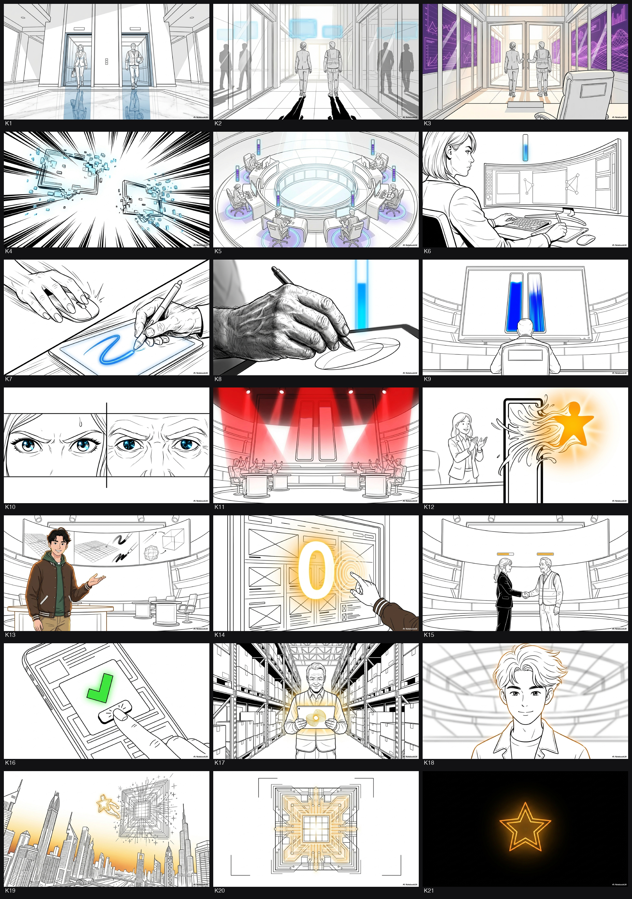
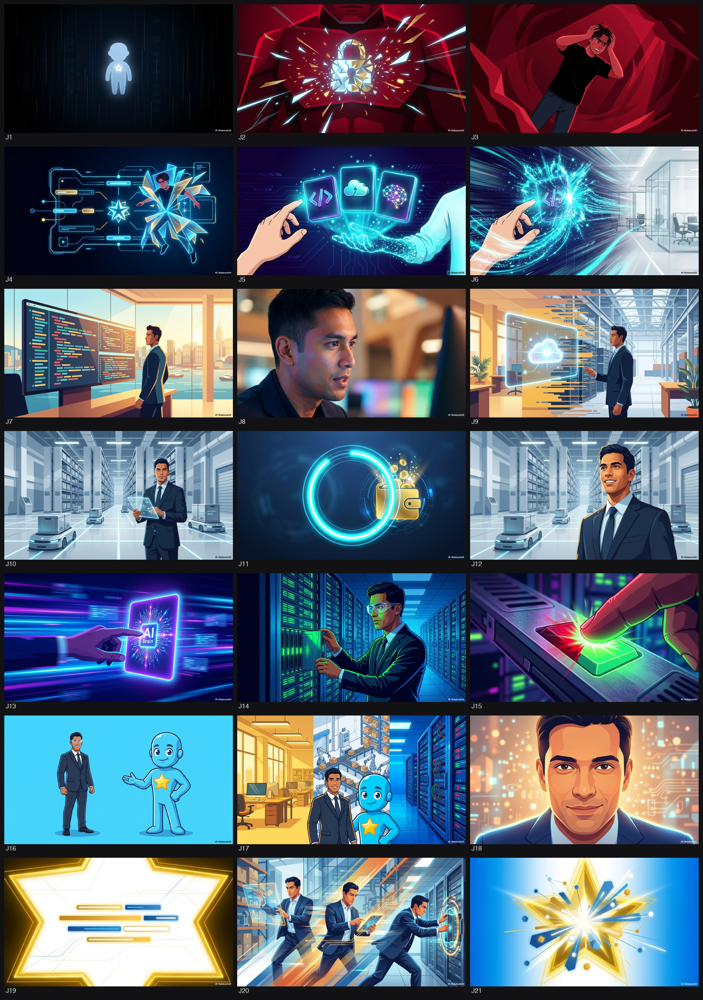
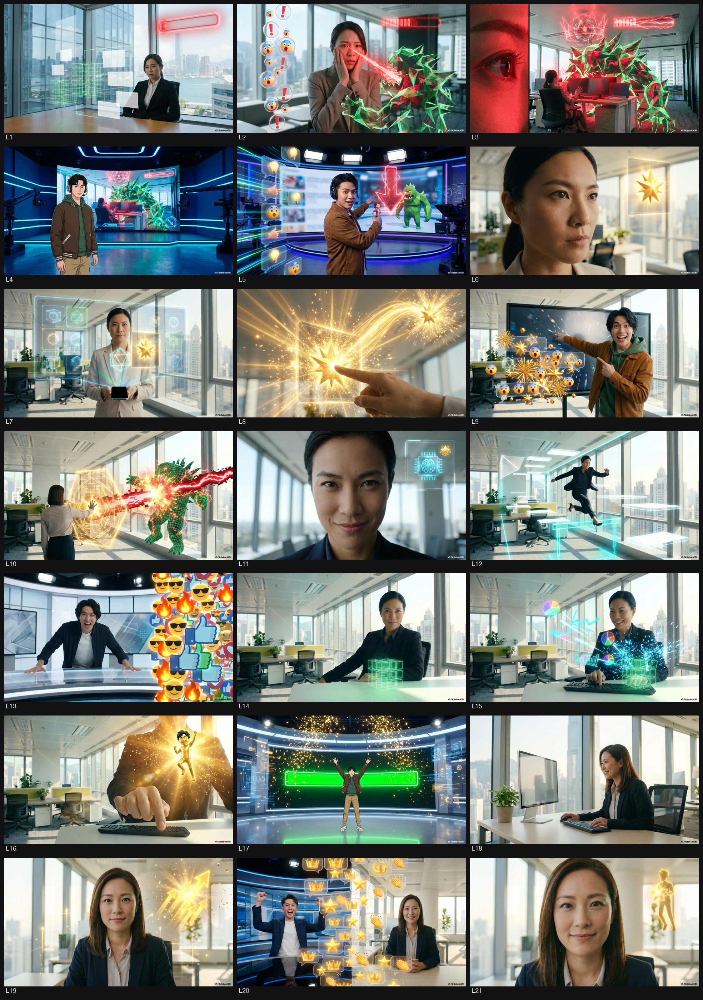
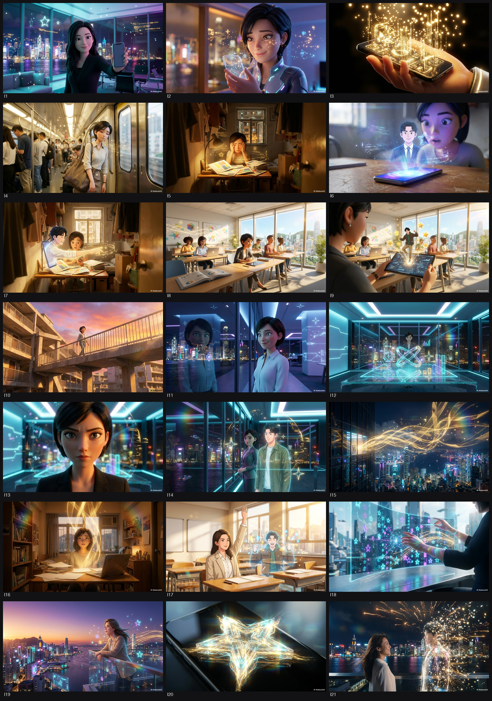
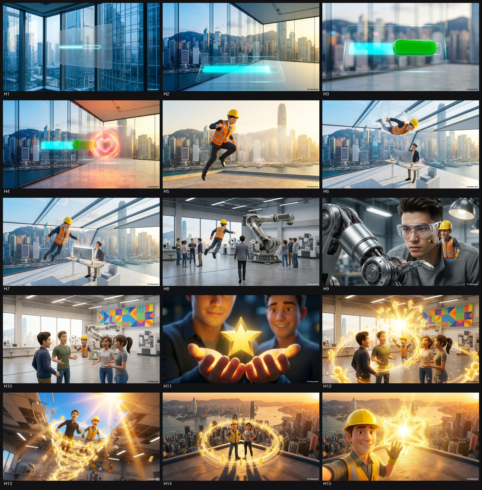

Phase 0 → VID 1 之間嗰幾日，諗到乜就入低，撳「＋ 加入」累積（VID 1 啟動委員會時一齊餵 AI）。
明白，為你梳理呢個《ERB 新技能培訓宣傳短片系列》項目標書嘅 8 大核心要求。以下是嚴格根據標書內容整理的詳細分析：
* 機構背景：僱員再培訓局 (ERB) 為 15 歲或以上合資格香港僱員提供超過 800 個「技能為本」培訓課程，涵蓋 28 個行業類別 。
* 項目背景：因應各行各業廣泛應用科技的大趨勢，ERB 開發了一系列新技能培訓課程（例如商業生成式 AI、AI 工作間方案、AI 視覺設計及遊戲開發、電動車維修、無人機表演設計等）。
* 宣傳目的：計劃於 2026-27 年度推出短片系列，以推廣「數碼新技能」及「行業科技應用」課程，支援公眾提升新技能及加強職場競爭力 , 。
* 整體受眾：一般公眾，以及 ERB 的服務對象（即 15 歲或以上合資格的香港僱員）, 。
* 重點目標群組：特別針對年輕觀眾（younger audiences）以及具備學位程度的人士（individuals with degree-level attainment）, 。
* 4 大傳意目標 (Objectives)：
1. 強調提升技能的重要性，鼓勵大眾學習數碼新技能，以提升職場競爭力及支援行業數碼轉型 , 。
2. 提高公眾對 ERB 技能為本課程的認識，讓觀眾從影片中獲得實用貼士 。
3. 提升 ERB 社交媒體平台（Facebook、IG、LinkedIn、YouTube）的流量及互動率 。
4. 整體推廣及加強 ERB 的品牌形象 。
* 3 大核心訊息 (Key Messages)：
1. 在科技及 AI+ 廣泛應用的大趨勢下，持續學習同提升技能對僱員保持競爭力至關重要 。
2. 展示不同從業員如何應用數碼技能提升工作效率，並重點介紹 ERB 課程的核心學習內容、實用性及真實行業應用 , 。
3. 宣傳 ERB 已取消學員學歷要求上限，並開發了高階及未來技能培訓課程，協助不同背景人士掌握新技能 。
* 集數及長度：需要製作 3 至 4 集短片（每集約 1.5 分鐘），以及 1 條精華片段（約 30 秒）涵蓋所有集數內容 , 。
* 語言及字幕：影片旁白/配音必須使用廣東話 (Cantonese)；並必須提供繁體中文 (Traditional Chinese) 字幕 (captions and subtitles) , 。
* 製作範圍：承辦商需提供一站式服務，包括概念發展、分鏡、劇本、AI 動畫、拍攝團隊及器材、版權音樂、收音混音、美術指導、化妝髮型及後期製作等 , 。
* ERB 導師：需於影片中介紹及示範實用數碼技能、分享實用貼士或行業見解 , 。承辦商需為導師安排實地硬照拍攝，而 ERB 會負責聯絡及協調導師 。
* 名人 / KOL：必須邀請及協調 1 位名人或 KOL 參與拍攝 。人選條件為具備知名度、形象正面、有合適演出經驗，並特別要受年輕觀眾歡迎 。投標者需在建議書中提供建議名單 。
* 吉祥物「Captain K」 (Optional)：標書列明此為「可選項目」（optional item）。可視乎創作手法，建議將其開發為 3D 動畫角色 (avatar)，並透過 AI 輔助動畫融入真人實景，與導師及 KOL 自然互動 , 。
* 專屬副主題：由於「具備學位程度人士」是全新目標客群，標書建議可為此群體度身訂造一個專屬副主題（dedicated sub-theme）, 。
* 風格要求：必須新鮮、有創意、生動且吸睛（fresh, creative, vivid and eye-catching），以時尚及現代的手法傳達升級技能的重要性 , 。
* 表達形式：接受多種形式，包括但不限於：職場情景劇（work scenario drama）、體驗課（taster courses）或技能競賽（skills competitions）, 。
根據標書的暫定時間表：
* 截標及批標：2026年6月17日中午12時截標；預計 6月29日 批出合約 , 。
* 前期籌備 (6月下旬至7月中)：構思影片概念、分鏡、劇本、落實邀請名人/KOL 。
* 拍攝及後期 (7月下旬至8月上旬)：確認劇本、場地、服裝安排，進行影片拍攝及後期製作 。
* 影片發佈：2026年8月中旬推出第 1 集；9月至10月推出其餘集數及精華片段 , 。
1. 經驗門檻：投標者必須在過去 3 年內曾為教育機構、政府部門、NGO或商業機構等製作過長度少於 2 分鐘的宣傳片 。無相關經驗者將不獲考慮 , , 。
2. 遞交方式：必須於截止前以兩個獨立電郵（Email 1: Technical Proposal / Email 2: Price Quotation）提交 PDF 檔案 , 。遲交或未按規定遞交將不獲受理 。
3. 報價紅線：必須填妥 Annex 6 報價，絕不接受部分報價或不完整報價（Partial offers or incomplete offers will not be considered）。
4. 保險要求：承辦商必須購買總額高達 HK$10,000,000（一千萬港元） 的保險，涵蓋拍攝團隊、器材、ERB 導師、KOL 及公眾等 。
5. 外判限制：未經 ERB 同意，絕不允許將任何部分的服務外判給其他公司 。
6. 合規與國安條款：若投標者曾從事或被合理相信從事危害國家安全的活動，ERB 有權取消其資格 , 。投標者亦必須簽署遞交「防勾結條款確認書」及「個人資料及私隱保密協議」, , 。
- Creative proposal on the video series（Annex 2 · p26） — 以 PDF 格式透過 Email 1 (Technical Proposal) 於 202
- Tenderer and Other Information（Annex 3 · p27） — 以 PDF 格式透過 Email 1 於 2026年6月17日中午12時前提交
- Confirmation Letter for Compliance with Anti-Collusion Clauses in Tender（Annex 4 · p28） — 須由授權人簽署，以 PDF 格式透過 Email 1 於 2026年6月17日中午12時前
- Non-Disclosure Agreement for Personal Data and Privacy（Annex 5 · p28） — 須由授權人簽署，以 PDF 格式透過 Email 1 於 2026年6月17日中午12時前
- Price Proposal（Annex 6 · p29） — 填妥除 Part (D) 外所有欄位，以 PDF 格式透過獨立的 Email 2 (Pri
- [無障礙] 繁體中文字幕：影片必須提供繁體中文的 captions and subtitles
- [其他] 廣東話配音：影片旁白及配音必須使用廣東話 (Cantonese)
- [明星] 邀請名人 / KOL：必須邀請及協調 1 位名人或 KOL 參與影片拍攝
- [mascot] 吉祥物 Captain K：可視乎創作手法，作為可選項目 (optional item) 融入影片中與真人互動
- [3D] 3D 動畫角色：如選擇加入吉祥物，需將其開發成 3D 動畫角色 (avatar) 並以 AI 輔助動畫融入實景
- [其他] 影片數量及長度：需製作 3 至 4 集短片 (每集約 1.5 分鐘) 及 1 條精華片段 (約 30 秒)
- [其他] 製作經驗紅線：必須具備過去 3 年內製作長度少於 2 分鐘宣傳片的經驗，無相關經驗者將不獲考慮
- [其他] 完整報價紅線：絕不接受部分報價或不完整報價 (Partial offers or incomplete offers will not
- [其他] 外判限制紅線：未經 ERB 同意，絕不允許將任何部分或全部服務外判給其他公司
- [其他] 拍攝保險要求：必須購買總額高達 HK$10,000,000 的保險以涵蓋團隊、導師、KOL 及公眾等
1. 💡 學歷限制全面解除
- 事實：2025年起 ERB 正式取消學歷上限，由以往只服務副學位或以下基層，轉為面向具備學位程度人士及整體勞動人口。（出處：背景 research / 2024年《施政報告》及 ERB 官方新聞稿）
- 💡 可以點做橋：可以利用「大學沙紙唔包 AI 技能」嘅職場焦慮做反差，帶出白領/專業人士都要去 ERB 增值。
2. 💡 返學有錢收
- 事實：報讀為期 7 天或以上嘅就業掛鈎課程，不但學費全免，更設有每日 HK$241 嘅培訓津貼。（出處：背景 research / AmazingTalker 2026 整理自官方資料）
- 💡 可以點做橋：可以將「進修仲有錢落袋」包裝成打工仔難以抗拒嘅著數，打破高階課程一定好貴嘅迷思。
3. 🏷️ 嚴禁叫「學生」
- 事實：官方紅線明文規定，受眾必須稱為「學員 (Trainees)」，絕對不能叫「學生 (Students)」。（出處：debrief（客戶 wants/紅線））
- 💡 可以點做橋：可以玩「我哋唔係學生哥」嘅成熟態度，突顯 ERB 係成年人專屬嘅「職場軍火庫」而唔係普通學校。
4. 🏷️ 創科課程零收費
- 事實：ERB 推出「創科．愛增值計劃」，提供超過 50 個創新科技課程（如 AI 應用、無人機），不設學歷上限且學費全免。（出處：背景 research / 政策脈絡）
- 💡 可以點做橋：可以主打「零成本解鎖未來技能」，直接用無人機或 AI 實操嘅型格畫面吸引年輕人。
5. 🏷️ Focus「升級」非「再培訓」
- 事實：官方要求宣傳必須避免強調「再培訓 (Retraining)」，要全力 focus 喺「技能提升 (Skills Upgrading)」。（出處：debrief（客戶 wants/紅線））
- 💡 可以點做橋：可以將「Upgrading」概念遊戲化，將打工仔學習數碼技能嘅過程拍成 RPG 角色「升呢」加能力值。
6. 🏷️ 3D Captain K 互動
- 事實：官方容許（Optional）將吉祥物「Captain K」開發為 3D 動畫角色，並用 AI 輔助與真人導師或 KOL 互動。（出處：debrief（客戶 wants/紅線））
- 💡 可以點做橋：可以將 3D Captain K 設定為 KOL 嘅「AI 職場導航員」，帶領觀眾穿越唔同嘅真實行業科技應用場景。
7. 👤 真實導師必須出鏡
- 事實：官方陣容紅線嚴格規定，影片中必須有真實嘅 ERB 導師出鏡進行技能示範。（出處：debrief（客戶 wants/紅線））
- 💡 可以點做橋：可以將真實導師打造成深藏不露嘅「隱世科技大師」，用型格手法展現佢哋點樣傳授高階數碼絕技。
- 2026-06-29 Meeting with the successful contractor
- 2026-07-15 Development of video concepts, storyboard and scripts / Invitation of celebrity / KOL / Finalisation of storyboard and scripts / Arrangement of shooting locations, wardrobe and styling, props, selection of background talent(s)
- 2026-07-31 Video shooting and post-production
- 2026-08-15 Launch of Episodes 1
- 2026-09-01 Launch of the remaining episodes and the highlighted video
* 香港政府積極推動「新型工業化」及「數字經濟」發展，強調科技應用與人才培訓的重要性。財政司司長陳茂波在 2024-25 年度《財政預算案》中，多次提及要加強支援科技發展及人才培訓，包括預留資源推動人工智能發展，並鼓勵不同行業應用創新科技提升效率。
* 勞工及福利局局長孫玉菡亦曾指出，面對全球經濟轉型，香港勞動人口必須持續進修，掌握新技能，以應對市場變化及提升競爭力。ERB 在此背景下，被賦予更重要的角色，以提供多元化的技能培訓，支援各行各業的人力需求。
* 近年，香港各大學及專上院校亦紛紛推出與數碼科技相關的短期課程或微證書課程，以滿足在職人士對數碼技能提升的需求，反映市場對「Upskilling」和「Reskilling」的龐大需求。
* 政府新聞處 (ISD) - 「高才通計劃」宣傳片 (2023-2024)
* Approach / Tone: 採用「真人現身說法」形式，邀請不同國籍、行業的高端人才分享來港發展的成功經驗，強調香港的發展機遇和國際化優勢。影片風格專業、正面，著重展示成功人士的形象。
* 效果: 成功吸引了大量高學歷人才申請，提升了計劃的知名度。
* 職業訓練局 (VTC) - 「職學創未來」系列宣傳片 (2022-2024)
* Approach / Tone: 透過年輕人追尋夢想、探索不同職業的故事情節，展現 VTC 課程的多元性和實用性，涵蓋創新科技、創意媒體等領域。影片風格較為年輕、勵志，強調「學以致用」和「開創未來」。
* 效果: 吸引了中學生及年輕人對職業專才教育的興趣，提升了 VTC 的品牌形象。
* 香港科技園公司 - 「InnoPark」宣傳片 (2023)
* Approach / Tone: 聚焦於創新科技園區內的先進設施和科技企業，展示香港在創科領域的發展潛力。影片多採用高科技視覺效果，強調「未來感」和「創新」。
* 效果: 提升了科技園區的國際形象，吸引了科技企業和人才的關注。
* LinkedIn Learning (國際)
* Approach: 大量使用真實用戶案例，展示他們如何透過學習新技能，成功轉型或在職場上取得突破。影片風格通常簡潔、直接，強調學習的實用價值和對個人職業發展的影響。常以「痛點解決」為切入點，例如「如何應對 AI 挑戰」、「提升數據分析能力」等。
* Coursera / edX (國際)
* Approach: 影片多以「專家導師」或「成功學員」訪談形式呈現，強調課程的專業性和權威性。視覺上常運用簡潔的動畫圖表解釋複雜概念，營造專業、高效的學習氛圍。
* 香港生產力促進局 (HKPC) - 數碼轉型相關課程宣傳 (2023-2024)
* Approach: 透過短片展示企業如何應用數碼科技（如 AI、自動化）提升生產力，並介紹 HKPC 提供的相關培訓課程。影片風格較為務實，著重展示科技應用的實際效益，目標受眾多為中小企老闆或在職專業人士。
* Google Career Certificates (國際)
* Approach: 影片多以輕鬆、活潑的動畫或真人短劇形式，講述不同背景的人如何透過學習 Google 證書課程，獲得新技能並找到理想工作。強調課程的「入門友好」和「高就業率」。
* 「成功人士」公式化分享：邀請一位看似光鮮亮麗的「成功人士」現身說法，但內容流於表面，缺乏具體細節或真實情感連結，容易讓觀眾覺得遙不可及或不真實。
* 「課堂情景」刻板呈現：單純展示學員在課室內聽課、做筆記的畫面，缺乏互動性和趣味性，未能突顯課程的實用性或創新之處。
* 「未來科技」空泛描述：過度使用抽象的科技畫面（如數據流、機械人），但未能具體解釋這些科技如何應用於日常工作或生活，容易讓觀眾感到距離感。
* 「口號式」訊息傳遞：影片中不斷重複「持續進修」、「提升競爭力」等口號，缺乏具體案例或情感共鳴，難以打動目標受眾。
* 「單一視角」敘事：只從機構或導師的角度出發，未能充分展現學員在學習過程中的真實挑戰、成長和收穫。
* 情感連結：職場焦慮與希望：目前較少宣傳片深入探討高學歷人士面對 AI 衝擊的真實職場焦慮，以及透過學習新技能後所帶來的希望和掌控感。
* 「微技能」的即時應用與成就感：除了宏大的「數碼轉型」願景，較少影片聚焦於學習某項特定「微技能」後，如何在日常工作中立即應用並帶來小成就感。
* 跨世代學習的共鳴：ERB 的新定位是全民增值，但目前較少影片能同時觸及年輕觀眾和具學位人士，並展現不同世代在學習新技能上的共通點或互相啟發。
* 「非典型」學習者故事：除了傳統的轉行或升職故事，較少宣傳片講述一些「非典型」學習者，例如將新技能應用於個人興趣、斜槓創業，或在原有崗位上創造新價值的故事。
* 課程「實用性」的具體化呈現：雖然有提及實用性，但較少影片能以極具體、甚至帶點「解謎」或「教學」意味的方式，展示課程內容如何解決真實行業痛點，而非僅僅是概念性介紹。
香港政府而家推 ERB「New Skills Training」宣傳片，核心背景係政府將 ERB 由「就業為本」改革成面向全體勞動人口嘅「技能為本」平台，要配合經濟轉型、補人才缺口同推動在職人士終身學習。[8][4]
---
- 由「就業為本」→「技能為本」嘅定位改革
- 2024 年《施政報告》正式提出要改革僱員再培訓局（ERB），由只為基層勞工提供「就業為本」培訓，提升至為整體勞動人口提供「技能為本」課程及策略。[8]
- 目的係回應產業升級、科技變革、人口老化等挑戰，唔再只係幫失業人士搵工，而係幫所有在職 / 待業人士「增值轉型」。[8][4]
- 取消學歷上限，擴大服務對象
- 過去 ERB 主要服務 15 歲或以上、副學位或以下學歷人士。[4]
- 施政報告決定改革定位，逐步推向「為全民提供增值課程」，即不再局限低學歷或基層人士，為「整體勞動人口」提供技能培訓。[4][8]
- 配合政府整體人力資源及創科政策
- 政府強調要應對「結構性人手短缺」及支持重點行業（醫護、物管、創科等）。[2][8]
- ERB 推出「創科．愛增值計劃」，提供 50+ 創新科技課程，不設學歷上限、學費全免，用作配合政府推動創科產業和數碼轉型。[2]
- 回應失業 / 轉職、AI 同自動化帶嚟嘅焦慮
- 經濟波動同科技替代，令中年、基層同部分白領出現「被取代」恐懼，社會上對「轉職 reskill」同「upskill」需求增加。[2][6]
- 政府希望透過 ERB 變成「技能再培訓基建」，提供一條龍培訓＋就業支援，降低轉型成本。[7][10]
- ERB 自己都在推「深化改革」實施計劃
- ERB 指出自 2025 年年初已落實一系列短期改革措施，包括取消學歷上限、推出更多新技能及較高階課程。[1]
- 並制定工作計劃全面推進「創新、前瞻、協作、提升」四個方向，以配合政府新定位。[1]
---
- 重要政策及時間點
- 2024 年《施政報告》：宣布改革 ERB，由為基層提供「就業為本」培訓，提升至面向整體勞動人口嘅「技能為本」培訓平台。[8]
- 2025 年年初起：ERB 開始落實短期改革，包括取消學歷上限及推出更多新技能、高階課程。[1][4]
- 2025-26 年度首三季：ERB 在改革下已推出一系列新措施（官方強調「一系列短期改革措施」在此期間落實）。[1]
- 預計 2027 年起：九龍灣綜合培訓服務中心會分階段投入服務，作為集培訓、評估、支援於一身嘅「技能增值樞紐」。[1]
- 課程類型 / 收費 / 津貼（關乎受眾感受）
- 主要課程類型：
- 就業掛鈎課程：全日制，為失業 / 待業人士而設，協助掌握特定行業技能，同時配合就業安置。[7][2]
- 技能提升課程：屬非就業掛鈎，一般為半日或晚間制，在職或失業人士都可報讀，提升現有職業技能、發展「一專多能」。[5][9]
- 通用技能課程：例如語文、IT、溝通、職場技能等，為不同年齡/背景人士打基礎。[7][9]
- 收費與資助（按 AmazingTalker 2026 年整理自官方資料）：[2]
- 就業掛鈎課程：
- 課程費用全免。[2]
- 為期 7 天或以上課程，設每日津貼 HK$241；「青年培育計劃」每日津貼 HK$121。[2]
- 非就業掛鈎課程（技能提升、通用技能等）：
- 以申請當日機構訂定學費為準，可申請不同資助級別。[2]
- 學費資助階梯制（以月入劃分）：[2]
- 月入 HK$0–14,000：可申請學費全免。
- 月入 HK$14,001–22,000：高度資助學費。
- 月入 > HK$22,000：一般資助學費。
- 目標服務對象範圍
- 一般要求：15 歲或以上香港居民，可報讀 ERB 課程（個別課程有額外要求）。[6][10]
- 特定服務對象設有專門課程︰青年人、新來港人士、殘疾及工傷康復人士、少數族裔、住院式戒毒人士及更生人士等。[10]
- 配套及服務延伸
- ERB 計劃在九龍灣興建綜合培訓服務中心，提供一站式技能評估、培訓及支援，作為市民技能增值樞紐，分階段於 2027 年投入服務。[1]
- ERB 將：
- 擴展「培訓顧問服務」至較長期輔導；
- 提供 CV 撰寫工具包；
- 加強網上課程搜尋及技能配對功能；
- 加強導師培訓及網上教學資源。[1]
---
- 政策及監管層
- 勞工及福利局（LWB）：負責就業及人力政策，ERB 屬其政策範疇；政府在立法會以該局名義回應有關 ERB 課程問題。[8]
- 2025–26 年度，勞工及福利局局長為孫玉菡（字面上通常稱「勞工及福利局局長 孫玉菡」），多次就再培訓、人力政策向立法會作出回應與簡報。（此為根據近期本港官員架構的一般知識，搜索結果中提及為勞福局負責相關事宜）[8]
- 執行 / 牽頭機構
- 僱員再培訓局（ERB, Employees Retraining Board）本身：
- 是負責規劃及推行再培訓政策和課程的法定機構，根據《僱員再培訓條例》成立。[10][7]
- ERB 管治架構包括主席及成員，由政府委任（個別人名會隨時間調整，宣傳片中可視乎最新官方名單作引用）。[7]
- 立法會層面關注
- 立法會人力事務委員會曾就 ERB 改革舉行政策簡報會，議員例如周小松在會上指出就業與技能培�
【來源 Sources】
- https://www.erb.org/tc/corporate-information/press-releases/erb-formulates-implementation-plan-to-advance-reforms-in-skills-based-training
- https://hk.amazingtalker.com/blog/zh-hk/other/99425/
- https://www.facebook.com/chausiuchungHKFLU/photos/%E5%86%80-erb-%E5%8A%A0%E5%BC%B7%E5%9F%B9%E8%A8%93%E6%9C%AC%E5%9C%B0%E4%BA%BA%E6%89%8D%E5%83%B1%
以下是為廣告創作團隊準備的『官方用語對照表』，以確保宣傳片內容符合香港政府僱員再培訓局的官方用語。
---
『官方用語對照表』
1. 部門 / 辦事處 中文正名 + 官方英文全名 (+ 官方網址)
* 中文正名： 僱員再培訓局
* 官方英文全名： Employees Retraining Board (ERB)
* 官方網址： www.erb.org
2. 計劃 / 政策 / 程序 的官方中英名稱
* 僱員再培訓局課程： ERB Courses
* 技能為本培訓： Skills-based Training
* 技能為本培訓策略： Skills-based Training Strategy
* 終身學習： Lifelong Learning
* 技能提升： Skills Upgrading
* 技能提升課程： Skills Upgrading Courses
* 高階課程： Higher-level Courses (或可按具體內容使用「高階技能培訓課程」)
* 未來技能培訓課程： Future Skills Training Courses (直接翻譯，因應ERB新發展方向)
* 學歷限制： Restriction on Educational Attainment
* 香港合資格僱員： Eligible Employees of Hong Kong
* 培訓就業一條龍計劃： One-stop Training and Employment Scheme
* 通用技能課程： Generic Skills Courses
3. 專有名詞 / 技術詞 的官方或慣用中英對照
* 學員： Trainees
* 科技應用大趨勢： Megatrend of Technology Applications
* AI+： AI+ (或可闡述為「人工智能及相關應用」)
* 數碼技能： Digital Skills
* AI輔助動畫： AI-assisted Animation
* 3D動畫角色 (虛擬化身)： 3D Animated Character (Avatar)
* 名人： Celebrity
* 關鍵意見領袖： Key Opinion Leader (KOL)
* 工作情境劇： Work Scenario Drama
* 體驗課程： Taster Courses
* 技能比賽： Skills Competitions
* 項目團隊： Project Team
* 項目主管： Project Leader
* 截標日期： Tender Closing Date
* 批出合約： Tender Awarded
* 分鏡圖： Storyboard
* 劇本： Scripts
* 字幕： Captions and Subtitles (如需區分，可使用「標題字幕」及「對白字幕」)
* 平面及攝影圖像／素材： Graphic and Photographic Images / Materials
* AI動畫： AI Animation
* 動畫圖像及效果： Animated Graphics and Effects
* 製作團隊及器材： Production Crew and Equipment
* 持牌背景音樂： Licensed Background Music
* 錄音及混音： Audio Recording and Sound Mixing
* 聲畫效果： Sound and Visual Effects
* 旁白配音員： Voice-over Talents
* 離線剪接及在線剪接： Off-line and On-line Editing
* 後期製作服務： Post-production Services
* 牌照： Licenses
* 美術指導： Art Direction
* 化妝： Make-up
* 髮型設計： Hair Styling
* 服裝： Wardrobe
* 交通： Transportation
* 保安： Security
* 版權費、版稅及加載費： Copyright, Royalty and Loading Fee
* 宣傳品： Promotional Materials
* 各種媒體及渠道： Various Media and Channels
* 首播日期： First Broadcasting Date
* 暫定工作時間表： Tentative Working Schedule
* 技術建議書： Technical Proposal
4. 常見會錯譯 / 易混淆的地方，標明正確寫法
* ERB：
* 首次提及時，請使用全稱「僱員再培訓局」。
* 其後可使用「ERB」或「局方」。
* 英文首次提及時，請使用全稱「Employees Retraining Board」。
* 其後可使用「ERB」。
* Trainee vs. Student：
* ERB的服務對象應稱為「學員」(Trainees)，而非「學生」(Students)，因其性質為再培訓及技能提升。
* Course vs. Programme：
* 一般課程可使用「課程」(Course)。
* 對於較大型、包含多個元素的計劃或項目，ERB會使用「計劃」(Scheme / Programme)，例如「培訓就業一條龍計劃」(One-stop Training and Employment Scheme)。請根據具體語境選擇。
* Upskilling vs. Retraining：
* 「Upskilling」應翻譯為「技能提升」(Skills Upgrading)。
* 「Retraining」應翻譯為「再培訓」(Retraining)。
* 宣傳片側重於「終身學習」和「技能提升」，以應對科技發展，這反映了ERB服務對象和重點的轉變，不再僅限於失業人士的「再培訓」。
* AI+：
* 可直接使用「AI+」。如需更詳細說明，可考慮「人工智能及相關應用」。
* **Educational a
9 條尖問題，逼 agency 諗加咩 element / 風格，落橋前消化。
- Q1 如果呢個 message 只可以打動「最唔關心、最 cynical」嗰個觀眾 —— 要加咩一個 element(畫面/聲/人物/情境)先 3 秒內 hook 住佢、令佢唔 skip?
→ 建議開首 3 秒加入白領或中產專業人士面對 AI 介面或自動化系統嘅「高壓特寫鏡頭」同「倒數音效」element。用「被科技淘汰嘅焦慮感」做視覺 hook，一秒打破以往 ERB 只關基層事嘅錯覺。
- Q2 呢班受眾平時食開咩視聽語言(平台/節奏/語氣)?要 adapt 邊種佢熟悉嘅風格,先入到腦而唔似「政府嘢」?
→ adapt 科技品牌發布會或快節奏 productivity vlog 嘅視聽風格。加入動態 typography 同 glitch transition element，洗走傳統政府片慢條斯理嘅說教味，用現代感話畀佢哋知 ERB 已經轉型。
- Q3 成個 campaign 只准觀眾記住一個 element(一個畫面 / 一個 visual device / 一句)—— 你揀咩?點解係佢?
→ 揀「打碎 / 撕走學歷上限標籤」嘅 visual device。因為「取消副學位或以下學歷限制」係今次改革最核心、最能推翻大眾既有認知嘅 hard fact，用具體破壞動作 element 可以最直觀傳達 ERB 已經面向全民。
- Q4 客戶 key message 好抽象,要用咩具體 element(真場面/真數字/真人/真物)去「show 唔 tell」,令佢落地、唔流口號?
→ 加入「50+ 創新科技課程」同「每日 $241 津貼」嘅大字 infographic element。用 UI 介面 pop-up 形式展示真實課程名（如 AI 應用、數據分析），將抽象嘅「技能為本」用真實數字同選項落地化。
- Q5 觀眾點解要信 / 關佢事?要加咩證據 element 或情感共鳴 element,先由「事不關己」變「同我有關」?
→ 加入「月入 $14,000 以下學費全免、$14,001-$22,000 高度資助」嘅真實階梯數字 element。用「有錢落袋 / 慳到錢」嘅實質利益，將政策轉化為切身著數，直接撻著在職人士嘅行動力。
- Q6 呢條嘢實際喺邊度、咩狀態被睇到(電視 prime / 車廂無聲 / 手機 scroll / 戶外經過)?要 adapt 咩風格(有聲冇聲 / 首 3 秒 / 大字 / 節奏)先食到當下情境?
→ adapt「無聲自動播放友善」嘅風格，加入大面積、高對比度嘅 Kinetic Typography (動態字體) element。確保喺 MTR 車廂或手機 scroll 冇聲狀態下，單靠視覺節奏已經 push 到「全民增值」同「免學費」嘅重點。
- Q7 出街時間(事件前/中/後)decide 調子係「預告期待」定「總結成就」?要加咩 element 配合呢個時間感?
→ 調子定為「預告期待與即時行動」。加入快節奏嘅電子鼓點配樂同「2025 年初落實」嘅時間戳 (timestamp) element，營造「短期改革已經開始、即刻報名」嘅急迫感與前瞻性。
- Q8 同類(同部門/同題材)政府片嘅「安全做法」係咩?要 adapt / 升級邊種風格 element(質感/節奏/transition/配樂/美術流派),先做到「框內最高質」而唔悶?
→ 安全做法係「勞工及福利局局長孫玉菡企定定講嘢 + 課室上堂 B-roll」。建議升級 adapt「Cinematic Documentary (電影感紀錄片)」質感，加入 Match Cut (連戲剪接) element 穿梭不同高階行業場景，令官方資訊變得有活力同高質。
- Q9 要加咩一個 unexpected element(反差/新 visual device/新手法),先同部門過往 campaign 拉開距離、唔似翻炒,但又唔踩紅線?
→ 加入「High-end Tech (高端科技)」嘅美術流派 element，例如冷色調燈光同全息投影 (Hologram) UI 質感。反差以往 ERB 偏向基層藍領嘅草根視覺，突顯「創科．愛增值」嘅現代感與專業度。
【呢條 brief 判定】目的:鼓勵參與/宣佈新法例/措施 題材:國安國教, 人才就業
【同目的(鼓勵參與)ISD 慣性】主開頭 真人/講者(52%);格式率 旁白35% 熒幕蓋字100% 標誌結尾82% CTA82% 感嘆76% 三段式·0%;慣用結尾 香港戲院商會標誌, 衞生署標誌, 香港電影發展基金標誌, 衞生防護中心標誌
【對口 ISD 舊作借鏡(同 目的×題材,參考佢點寫,唔好照抄,要創新)】
— 國家安全教育2026 [鼓勵參與 | 國安國教]
▶ https://www.youtube.com/watch?v=Lq2nz9omN0U&list=PL1188A9802575C33F
旁白：每個人都希望生活在一個安定的社會 / 國家安全是社會繁榮穩定的重要基石 / 堅持和完善行政主導 / 統籌發展和安全 / 落實愛國者治港 / 構建和諧美好生活 / 國安才能港安 / 國安才能家安 / 維護國家安全人人有責 / 我們一起參與 / 熒幕蓋字：國安才能港安 / 國安才能家安 / nsed.gov.hk / 網頁二維碼
— Hong Kong—Asia’s premier talent hub (2) [形象/成就(propaganda) | 人才就業]
▶ https://www.youtube.com/watch?v=nwC85MuHnBk&list=PL1188A9802575C33F
Tony Zhou：「高端人才通行證計劃」吸引我來香港發展 / 現在我的客戶遍布全球 / 熒幕蓋字：中國內地 / 周錫晨 / DayOne數據中心服務交付總監 / Tony Zhou：太太和兒子都一起來到香港生活 / 香港不僅讓我的事業快速躍升 / 還為我和家人提供一個安樂窩 / 旁白：香港作為亞洲第一的人才樞紐 / 致力吸納國際高端人才落戶 / 拓展事業、享受生活、成就卓越 / 促進本地經濟繁榮 / 熒幕蓋字：香港 / 拓展事業 · 樂享生活 · 成就卓越 / 熒幕蓋字：勞工及福利局標誌 / 香港人才服務辦公室標誌
— 香港—亞洲頂尖人才樞紐 (1) [形象/成就(propaganda) | 人才就業]
▶ https://www.youtube.com/watch?v=DqyOH7Y5F9c&list=PL1188A9802575C33F
Grégoire Michaud：香港為我提供成功所需的材料 / 熒幕蓋字：瑞士 / Grégoire Michaud / 企業家 / Bakehouse創辦人 / Grégoire Michaud：在香港創業，讓我接觸到來自全球的客人 / 機會就在這裏！ / 旁白：香港作為亞洲第一的人才樞紐 / 致力吸納國際高端人才落戶 / 拓展事業、享受生活、成就卓越 / 促進本地經濟繁榮 / 熒幕蓋字：香港 / 拓展事業 · 樂享生活 · 成就卓越 / 熒幕蓋字：勞工及福利局標誌 / 香港人才服務辦公室標誌
— Hong Kong, Asia's Event Capital (April 2026) [形象/成就(propaganda) | 盛事旅遊/人才就業]
▶ https://www.youtube.com/watch?v=6sh33bTFI24&list=PL1188A9802575C33F
旁白：政府繼續舉辦大型盛事 / 熒幕蓋字：2026年香港國際七人欖球賽 / 4月17至19日 / 熒幕蓋字：天馬凌雲──故宮博物院藏繪畫珍品 / 2026年3月20日至2027年3月17日 / 旁白：精彩的文化 / 熒幕蓋字：漢風泱泱：雄渾與交融的盛世 / 3月20日至9月20日 / 旁白：體育 / 熒幕蓋字：2026 UCI 世界盃場地單車賽(中國香港) / 4月17至19日 / 旁白：金融 / 熒幕蓋字：香港國際創科展 / 4月13至16日 / 旁白：貿易 / 旁白：和旅遊盛事陸續呈獻 / 熒幕蓋字：冠軍賽馬日 / 4月26日 / 旁白：歡迎大家和旅客一起參與 / 熒幕蓋字：CON-CON HONG KONG 2026 / 4月4至5日 / 旁白：樂在其中 / 熒幕蓋字：2026香港閱讀+ / 4月18日至26日 / 旁白：感受香港的多姿多彩 / 熒幕蓋字：香港時裝節 / 4月27至30日 / 旁白：獨特魅力和動感 / 熒幕蓋字：2026 五人冰球賽 / 4月23日至5月9日 / 熒幕蓋字：當下──香港藝術展 / 2026年3月20日至2027年
— 河套深港科技創新合作區 [形象/成就(propaganda) | 人才就業]
▶ https://www.youtube.com/watch?v=KPcWhgjyUCg&list=PL1188A9802575C33F
旁白： / 河套深港科技創新合作區是國家重要戰略平台 / 香港園區坐擁「一河兩岸、一區兩園」的獨特優勢 / 熒幕蓋字： / 香港 / 深圳 / 港深創科園 / 深圳科創園區 / 旁白： / 擔當國家開闢創新制度的試驗田 / 建設全速推進，首批三座大樓已投入營運 / 熒幕蓋字： / 濕實驗室大樓 / 人才公寓 / 旁白： / 全力實現人流、資金流、物流及數據流創新要素跨境便捷流動 / 熒幕蓋字： / 人流 / 資金流 / 物流 / 數據流 / 旁白： / 打造世界級創科樞紐、建設國家關鍵創新基地 / 熒幕蓋字： / 創新科技及工業局標誌 / 港深創科園標誌
— We invite global talent to expand their careers, enjoy life, and achieve excellence in Hong Kong. [形象/成就(propaganda) | 人才就業]
▶ https://www.youtube.com/watch?v=FXsRnYpU0Kw&list=PL1188A9802575C33F
旁白：香港 / 熒幕蓋字：香港 / 旁白：憑藉背靠祖國 / 聯通世界的獨特優勢 / 匯聚全球高端人才 / 在港拓展事業 / 熒幕蓋字：拓展事業 / 旁白：樂享生活 / 熒幕蓋字：樂享生活 / 旁白：成就卓越 / 熒幕蓋字：成就卓越 / 旁白：落戶香港 / 促進經濟繁榮 / 旁白：香港，國際人才樞紐 / 熒幕蓋字：香港 / 國際人才樞紐 / 旁白：宜居宜業，機遇無限 / 熒幕蓋字：宜居宜業 / 機遇無限 / 熒幕蓋字：香港人才服務辦公室標誌
fetch_source（pypdf）抽嘅標書 Specification 逐字原文 —— 委員會／7 agency／debrief／5W1H 都餵呢份做 ground-truth（唔經 AI 詮釋，唔幻覺）。
===== Tender_Invitation.pdf(Specification 原件)===== [p3] 3 Target Audience 8. General public and the service targets of ERB, i.e. eligible employees of Hong Kong aged 15 or above, especially the younger audiences and individuals with degree-level attainment. Key Messages 9. The video series should cover the following key messages: (a) Under the megatrend of technology application s across industries and AI+ , lifelong learning and upskilling are essential for employees to stay competitive in the workplace; (b) Showcase how practitioners of different industries apply digital skills to enhance work efficiency, with a focus on the key features of ERB courses, including core learning content, practical relevance and real-world industry applications; and (c) ERB has lifted the restriction on educational attainment of trainees and developed higher-level and future skills training courses, assist ing trainees with different educational backgrounds and training needs in acquiring essential new skills. Approach 10. The theme of the video series should emphasis the need for and importance of new skills training across industries. As the segment of those with degree -level attainment is the new target audience of ERB , dedicated sub -theme which appeals to this segment can also be proposed. It is expected that the video series will be fresh, creative, vivid and eye-catching that can convey a positive impression and generate wide awareness on the importance of skills upgrading in the digital era. 11. The video series includes three to four episodes (each at around 1.5 minutes) and one highlight version (at around 30 seconds) covering all episodes. The videos may adopt different kinds of formats including but not limited to work scenario drama, taster courses, and skills competitions to deliver the key messages in a trendy and contemporary style. Scope of Services and Specifications 12. The details of the services required are set out in the following and the Concept Brief in Annex 1. The scope of services should include (i) video shooting and production, and (ii) invitation of celebrity / KOL with related arrangements. (i) Video Shooting and Production with Related Arrangements (a) To develop three to four episodes of short videos (each at around 1 .5 minutes) featuring ERB skills-based training courses spanning new digital skills and technology applications across industries, and one highlight version (at around 30 seconds) covering all episodes. Details of the services required can be referred to Annex 1; [p4] 4 (b) To provide concept development, creative ideas, storyboard, scripts, captions and subtitles in Traditional Chinese, graphic and photographic images / materials, AI animation, animated graphics and effects, production crew and equipment, transportation, licensed background music, audio recording and sound mixing, sound and visual effects, voices-over talents in Cantonese and recording, off-line and on -line editing, post -production services, licenses, art direction, make -up, hair styling, wardrobe, transportation, security and related arrangements; (c) Depending on the approach of the video, to develop “Captain K” into a 3D animated character (avatar) and integrate through AI-assisted animation or other similar formats, to interact naturally with ERB trainers and the proposed celebrity / KOL in live-action scenes (optional item); (d) To arrange background talent(s) to participate in the video shooting, if necessary; (e) To arrange on-site photo shoots for the participating ERB trainers. Coordination with the trainers will be arranged by ERB; and (f) To include copyright, royalty and loading fee for ERB to use the promotional materials on various media and channels as listed in paragraph 5 above. (ii) Invitation of Celebrity / KOL with Related Arrangements (a) To invite and coordinate with one celebrity / KOL to participate in the video shooting. Tenderers should propose suitable celebrity / KOL to take part in the video shooting and the related cost in Annex 6 as reference item for ERB’s consideration. Details of the services required can be referred to the Concept Brief in Annex 1; and (b) To include copyright, royalty and loading fee for ERB to use the promotional materials with involvement of the celebrity / KOL on various media and channels as listed in paragraph 5 above , for a period of 1 year from the first broadcasting date of the video series. (iii) Project Team (a) To set up a project team with a project leader who will manage the whole project and act as the contact person with ERB during the contract period. Tentative Working Schedule 13. The tentative working schedule is listed as below. The actual working schedule will be confirmed by ERB after awarding the contract and subject to mutual agreement with the contractor. [p5] 5 Date Items 17 June 2026 - Tender closing date 29 June 2026 - Tender awarded to the successful contractor - Meeting with the successful contractor - Development of video concepts, storyboard and scripts - Invitation of celebrity / KOL to participate in the video shooting Late June – Mid July 2026 - Finalisation of storyboard and scripts - Arrangement of shooting locations (by ERB or contractor) , wardrobe and styling , props, selection of background talent(s), etc. as necessary Late July – Early August 2026 - Video shooting and post-production Mid August 2026 - Launch of Episodes 1 September – October 2026 - Launch of the remaining episodes and the highlighted video - Exact number of videos to be produced is subject to variation at the discretion of ERB Information Required and Submission 14. Interested tenderers should submit the tender with the following information completed and signed in TWO separate emails. Email 1: Technical Proposal Please mark “Technical Proposal – Provision of Services for the Production of Short Video Series for Promotion of ERB New Skills Training in 2026 -27 (Ref.: DC/TEND/0024)” in th e e mail subject, and include the following items in PDF format: (a) Creative proposal on the video series in Annex 2. Tenderers are required to provide the following information: i. Suggestion for the creative concept, shooting and presentation approach, main theme, tagline / slogan of the video series; ii. Conceptual outline for one episode of the video series, including the content idea, visual presentation approach and a draft storyboard with written descriptions; and iii. Proposed list of celebrities / KOLs. (b) Tenderer and Other Information in Annex 3. Tenderers should have relevant past experience in the development and production of promotional videos with duration of less than 2 minutes in the past 3 years (as of the tender closing date), for education institutes, government departments, public bodies, business associations, institutions, non-governmental organisations and / or commercial sector. For those tenderers that do not have such experiences as mentioned above, their submission will not be
8 間諗橋時都收到呢份 brief（製作要求 3D/mascot/明星、老闆方向…）做底，再各自加上面 dispatch 嘅角度/畫風/device。概念諗咗會 gatekeep 對返 brief 符合先生 BD。
明白，為你梳理呢個《ERB 新技能培訓宣傳短片系列》項目標書嘅 8 大核心要求。以下是嚴格根據標書內容整理的詳細分析：
* 機構背景：僱員再培訓局 (ERB) 為 15 歲或以上合資格香港僱員提供超過 800 個「技能為本」培訓課程，涵蓋 28 個行業類別 。
* 項目背景：因應各行各業廣泛應用科技的大趨勢，ERB 開發了一系列新技能培訓課程（例如商業生成式 AI、AI 工作間方案、AI 視覺設計及遊戲開發、電動車維修、無人機表演設計等）。
* 宣傳目的：計劃於 2026-27 年度推出短片系列，以推廣「數碼新技能」及「行業科技應用」課程，支援公眾提升新技能及加強職場競爭力 , 。
* 整體受眾：一般公眾，以及 ERB 的服務對象（即 15 歲或以上合資格的香港僱員）, 。
* 重點目標群組：特別針對年輕觀眾（younger audiences）以及具備學位程度的人士（individuals with degree-level attainment）, 。
* 4 大傳意目標 (Objectives)：
1. 強調提升技能的重要性，鼓勵大眾學習數碼新技能，以提升職場競爭力及支援行業數碼轉型 , 。
2. 提高公眾對 ERB 技能為本課程的認識，讓觀眾從影片中獲得實用貼士 。
3. 提升 ERB 社交媒體平台（Facebook、IG、LinkedIn、YouTube）的流量及互動率 。
4. 整體推廣及加強 ERB 的品牌形象 。
* 3 大核心訊息 (Key Messages)：
1. 在科技及 AI+ 廣泛應用的大趨勢下，持續學習同提升技能對僱員保持競爭力至關重要 。
2. 展示不同從業員如何應用數碼技能提升工作效率，並重點介紹 ERB 課程的核心學習內容、實用性及真實行業應用 , 。
3. 宣傳 ERB 已取消學員學歷要求上限，並開發了高階及未來技能培訓課程，協助不同背景人士掌握新技能 。
* 集數及長度：需要製作 3 至 4 集短片（每集約 1.5 分鐘），以及 1 條精華片段（約 30 秒）涵蓋所有集數內容 , 。
* 語言及字幕：影片旁白/配音必須使用廣東話 (Cantonese)；並必須提供繁體中文 (Traditional Chinese) 字幕 (captions and subtitles) , 。
* 製作範圍：承辦商需提供一站式服務，包括概念發展、分鏡、劇本、AI 動畫、拍攝團隊及器材、版權音樂、收音混音、美術指導、化妝髮型及後期製作等 , 。
* ERB 導師：需於影片中介紹及示範實用數碼技能、分享實用貼士或行業見解 , 。承辦商需為導師安排實地硬照拍攝，而 ERB 會負責聯絡及協調導師 。
* 名人 / KOL：必須邀請及協調 1 位名人或 KOL 參與拍攝 。人選條件為具備知名度、形象正面、有合適演出經驗，並特別要受年輕觀眾歡迎 。投標者需在建議書中提供建議名單 。
* 吉祥物「Captain K」 (Optional)：標書列明此為「可選項目」（optional item）。可視乎創作手法，建議將其開發為 3D 動畫角色 (avatar)，並透過 AI 輔助動畫融入真人實景，與導師及 KOL 自然互動 , 。
* 專屬副主題：由於「具備學位程度人士」是全新目標客群，標書建議可為此群體度身訂造一個專屬副主題（dedicated sub-theme）, 。
* 風格要求：必須新鮮、有創意、生動且吸睛（fresh, creative, vivid and eye-catching），以時尚及現代的手法傳達升級技能的重要性 , 。
* 表達形式：接受多種形式，包括但不限於：職場情景劇（work scenario drama）、體驗課（taster courses）或技能競賽（skills competitions）, 。
根據標書的暫定時間表：
* 截標及批標：2026年6月17日中午12時截標；預計 6月29日 批出合約 , 。
* 前期籌備 (6月下旬至7月中)：構思影片概念、分鏡、劇本、落實邀請名人/KOL 。
* 拍攝及後期 (7月下旬至8月上旬)：確認劇本、場地、服裝安排，進行影片拍攝及後期製作 。
* 影片發佈：2026年8月中旬推出第 1 集；9月至10月推出其餘集數及精華片段 , 。
1. 經驗門檻：投標者必須在過去 3 年內曾為教育機構、政府部門、NGO或商業機構等製作過長度少於 2 分鐘的宣傳片 。無相關經驗者將不獲考慮 , , 。
2. 遞交方式：必須於截止前以兩個獨立電郵（Email 1: Technical Proposal / Email 2: Price Quotation）提交 PDF 檔案 , 。遲交或未按規定遞交將不獲受理 。
3. 報價紅線：必須填妥 Annex 6 報價，絕不接受部分報價或不完整報價（Partial offers or incomplete offers will not be considered）。
4. 保險要求：承辦商必須購買總額高達 HK$10,000,000（一千萬港元） 的保險，涵蓋拍攝團隊、器材、ERB 導師、KOL 及公眾等 。
5. 外判限制：未經 ERB 同意，絕不允許將任何部分的服務外判給其他公司 。
6. 合規與國安條款：若投標者曾從事或被合理相信從事危害國家安全的活動，ERB 有權取消其資格 , 。投標者亦必須簽署遞交「防勾結條款確認書」及「個人資料及私隱保密協議」, , 。
- 手語：唔使（標書原文:N/A，p0）
- W3C影片：唔使（標書原文:N/A，p0）
- 明星：Preferred（標書原文:To invite and coordinate with one celebrity / KOL ，p21）
- Mascot：Preferred（標書原文:contractor can consider and propose as an optional，p10）
- 動畫：Prefer 3D（標書原文:developing “Captain K” into a 3D animated characte，p10）
- Creative proposal on the video series（Annex 2 · p26） — 以 PDF 格式透過 Email 1 (Technical Proposal) 於 202
- Tenderer and Other Information（Annex 3 · p27） — 以 PDF 格式透過 Email 1 於 2026年6月17日中午12時前提交
- Confirmation Letter for Compliance with Anti-Collusion Clauses in Tender（Annex 4 · p28） — 須由授權人簽署，以 PDF 格式透過 Email 1 於 2026年6月17日中午12時前
- Non-Disclosure Agreement for Personal Data and Privacy（Annex 5 · p28） — 須由授權人簽署，以 PDF 格式透過 Email 1 於 2026年6月17日中午12時前
- Price Proposal（Annex 6 · p29） — 填妥除 Part (D) 外所有欄位，以 PDF 格式透過獨立的 Email 2 (Pri
- [無障礙] 繁體中文字幕：影片必須提供繁體中文的 captions and subtitles
- [其他] 廣東話配音：影片旁白及配音必須使用廣東話 (Cantonese)
- [明星] 邀請名人 / KOL：必須邀請及協調 1 位名人或 KOL 參與影片拍攝
- [mascot] 吉祥物 Captain K：可視乎創作手法，作為可選項目 (optional item) 融入影片中與真人互動
- [3D] 3D 動畫角色：如選擇加入吉祥物，需將其開發成 3D 動畫角色 (avatar) 並以 AI 輔助動畫融入實景
- [其他] 影片數量及長度：需製作 3 至 4 集短片 (每集約 1.5 分鐘) 及 1 條精華片段 (約 30 秒)
- [其他] 製作經驗紅線：必須具備過去 3 年內製作長度少於 2 分鐘宣傳片的經驗，無相關經驗者將不獲考慮
- [其他] 完整報價紅線：絕不接受部分報價或不完整報價 (Partial offers or incomplete offers will not
- [其他] 外判限制紅線：未經 ERB 同意，絕不允許將任何部分或全部服務外判給其他公司
- [其他] 拍攝保險要求：必須購買總額高達 HK$10,000,000 的保險以涵蓋團隊、導師、KOL 及公眾等
1. 💡 學歷限制全面解除
- 事實：2025年起 ERB 正式取消學歷上限，由以往只服務副學位或以下基層，轉為面向具備學位程度人士及整體勞動人口。（出處：背景 research / 2024年《施政報告》及 ERB 官方新聞稿）
- 💡 可以點做橋：可以利用「大學沙紙唔包 AI 技能」嘅職場焦慮做反差，帶出白領/專業人士都要去 ERB 增值。
2. 💡 返學有錢收
- 事實：報讀為期 7 天或以上嘅就業掛鈎課程，不但學費全免，更設有每日 HK$241 嘅培訓津貼。（出處：背景 research / AmazingTalker 2026 整理自官方資料）
- 💡 可以點做橋：可以將「進修仲有錢落袋」包裝成打工仔難以抗拒嘅著數，打破高階課程一定好貴嘅迷思。
3. 🏷️ 嚴禁叫「學生」
- 事實：官方紅線明文規定，受眾必須稱為「學員 (Trainees)」，絕對不能叫「學生 (Students)」。（出處：debrief（客戶 wants/紅線））
- 💡 可以點做橋：可以玩「我哋唔係學生哥」嘅成熟態度，突顯 ERB 係成年人專屬嘅「職場軍火庫」而唔係普通學校。
4. 🏷️ 創科課程零收費
- 事實：ERB 推出「創科．愛增值計劃」，提供超過 50 個創新科技課程（如 AI 應用、無人機），不設學歷上限且學費全免。（出處：背景 research / 政策脈絡）
- 💡 可以點做橋：可以主打「零成本解鎖未來技能」，直接用無人機或 AI 實操嘅型格畫面吸引年輕人。
5. 🏷️ Focus「升級」非「再培訓」
- 事實：官方要求宣傳必須避免強調「再培訓 (Retraining)」，要全力 focus 喺「技能提升 (Skills Upgrading)」。（出處：debrief（客戶 wants/紅線））
- 💡 可以點做橋：可以將「Upgrading」概念遊戲化，將打工仔學習數碼技能嘅過程拍成 RPG 角色「升呢」加能力值。
6. 🏷️ 3D Captain K 互動
- 事實：官方容許（Optional）將吉祥物「Captain K」開發為 3D 動畫角色，並用 AI 輔助與真人導師或 KOL 互動。（出處：debrief（客戶 wants/紅線））
- 💡 可以點做橋：可以將 3D Captain K 設定為 KOL 嘅「AI 職場導航員」，帶領觀眾穿越唔同嘅真實行業科技應用場景。
7. 👤 真實導師必須出鏡
- 事實：官方陣容紅線嚴格規定，影片中必須有真實嘅 ERB 導師出鏡進行技能示範。（出處：debrief（客戶 wants/紅線））
- 💡 可以點做橋：可以將真實導師打造成深藏不露嘅「隱世科技大師」，用型格手法展現佢哋點樣傳授高階數碼絕技。
- 2026-06-29 Meeting with the successful contractor
- 2026-07-15 Development of video concepts, storyboard and scripts / Invitation of celebrity / KOL / Finalisation of storyboard and scripts / Arrangement of shooting locations, wardrobe and styling, props, selection of background talent(s)
- 2026-07-31 Video shooting and post-production
- 2026-08-15 Launch of Episodes 1
- 2026-09-01 Launch of the remaining episodes and the highlighted video
✅做到 26 ⚠️輸出可疑 0 🔄跑緊 0 ❌失敗 4 ⚪未到 9。✅=行咗+驗過真有輸出；⚠️=行咗但輸出缺/空；⚪=今次未行到。
創作概念：
借用 YouTube「深度開箱/探秘」嘅紀實 Vlog 形式，由年輕老闆視角帶隊「突擊」實景 ERB 葵芳中心，打破「基層專屬」迷思。透過零演員腔嘅真實訪問，直接同幾位擁有大學學歷、正喺度學 AI 同寫 Code 嘅白領學員傾偈，展現佢哋面對科技大趨勢下，主動嚟 ERB 裝備數碼新技能嘅真實職場焦慮同升級野心。
人 / 景：
- 人：KOL 主持 + 真實高學歷白領學員（例如：Marketing 經理、物流 Supervisor）+ 真實 ERB 專業導師。
- 景：真實 ERB 葵芳中心實景（專登 pick 滿佈 Server、高階電腦、大屏幕嘅高科技課室，一洗老土味）。
Visual Device：
「Tech-review 規格浮水印」：Adapt 科技 Channel 常用嘅動態數據 UI，當 KOL 訪問真實學員時，畫面會彈出打字機聲嘅 ASMR 動態字標籤（e.g. `[Degree Holder]`, `[AI Prompting 技能解鎖中: 85%]`），用硬數據同高科技感強化白領形象。
主打口號：
無分學歷，只講實力。ERB 技能提升，完勝職場！
Proposed 明星/名人：
游學修 (Neo Yau)。原因：佢本身就係年輕創業老闆兼 Creator，非常明白 AI 點樣顛覆行業。由佢用「請人/老闆」嘅銳利視角去 ERB 尋找/發掘高階數碼人才，說服力極高，而且 tone and manner 夠貼地夠真。
亮點扣連：用咗【4. 大學生踩場 ERB】（呈現高學歷白領反差）及【7. 老闆視角的技能需求】（游學修以老闆身份肯定新技能價值）。
---
創作概念:利用「平行時空」嘅極端對比,呈現同一個蔡蕙琪,喺同一個職場情景下,「有學」同「冇學」新技能嘅天淵之別。一個版本嘅佢(Before)被 AI 工具搞到一頭煙、瀕臨崩潰;另一個版本(After)就氣定神閒咁運用 ERB 學返嚟嘅數碼技能,將 AI 變成最強助手。成條片強調 ERB 唔係教你點「生存」,而係教你點「超前」。
人/景:蔡蕙琪(一人分飾兩角)、真實嘅 ERB 導師(飾演「隱世高手」)、一間型格嘅 co-working space 或開放式辦公室。
Visual Device:動態分屏(Dynamic Split Screen)。畫面會不斷以創意方式一分為二,左邊係「掙扎求存」嘅蔡蕙琪,右邊係「運籌帷幄」嘅佢。例如左邊用手畫 mind map,右邊用 AI 一秒生成;左邊逐個 file 改名,右邊用 script 一鍵完成,視覺對比極之強烈。
主打口號:沙紙保唔到你，技能保到。
Proposed 明星/名人:蔡蕙琪(葵芳)。原因:利用佢精湛嘅演技一人分飾「老派打工仔」同「高階技能使用者」兩個極端角色,產生強烈嘅喜劇感同戲劇張力,完全顛覆佢過往嘅草根形象,製造新鮮感。
亮點扣連：用咗 ①學歷限制解除 (帶出大學畢業都要學)、⑤Focus「升級」 (強調由掙扎變超前)、⑦真實導師出鏡 (導師作為啟蒙者)。
創作概念:
用真實學員嘅「一日時間表」做骨幹：返工、搭車、加班、夜晚/週末抽時間去上 ERB 技能提升課程——全程唔賣慘，係一種「成熟打工仔自我管理」嘅升級感。每講一個「點樣安排到」嘅方法，畫面就用「過數提示音/通知音」做節拍，疊加大字講清楚最現實利益點：就業掛鈎課程全免 + 每日約 $241 津貼、以及取消學歷上限；再落到課堂實操（真 UI、真犯錯再修正）證明「即學即用」。
系列化好做：每集跟一位不同行業/學歷背景嘅真實學員，highlight 30 秒版就用「節拍」剪成爽快 montage。
人/景:
- 2–3 位真實學員（可揀：Degree 白領 + 前線主管/營運 + 轉型數碼崗）
- ERB 導師（真課堂互動、實操指導）
- KOL 做「旁觀者/同路人」：唔講大道理，淨係問到肉問題：「你點安排？值唔值得？」
- 場景：港鐵車廂（無聲都靠大字）、公司茶水間/夜晚 office、課堂實操位（電腦屏幕/工具介面特寫）、街邊便利店買飯團嗰啲真日常
Visual Device:
「時間表 UI 疊加」：畫面左側永遠有一條今日 timeline（08:45 / 13:10 / 20:30…），每去到一個時段就 pop 出關鍵字（「返工」「放工」「上堂」「實操」）。同時用「$241 提示音」做節拍點，配合大字（「每日約 $241 津貼」「學費全免（就業掛鈎課程）」）令利益點硬入腦。
主打口號:
「帶薪升級，唔使等。」（副句可配合大字：ERB 技能提升｜取消學歷上限）
Proposed 明星/名人:
- MIRROR 呂爵安 Edan（形象正面、受年輕人歡迎；做「同樣好忙都要升級」嘅同路人，帶動討論同分享）
亮點扣連：用咗 #5 進修有錢收（$241/日 + 全免做核心 hook）＋ #4 取消學歷上限（學員設定有 Degree 代表性）＋ #2 禁叫學生/再培訓（全程用「學員」「技能提升」字眼）。
創作概念:將 ERB 由「補習社/救濟所」徹底 reframe 為占士邦式「Q Branch 裝備部」。打工仔唔係嚟「上堂」,係嚟「提取職場武器」—— AI 應用、無人機、數據工具就係你打職場大佬嘅神裝。用「過分著數」做鈎:零學費、每日 $241 津貼、50+ 創科課程,包裝成白領同年輕人眼中「唔係人人知嘅隱藏福利」。硬訊息扣連:技能為本培訓面向整體勞動人口,姿態係平起平坐嘅「全民軍火庫」。3D Captain K 化身「AI 裝備管理員」帶觀眾穿梭真實行業科技場景。
人/景:年輕 + 白領混合學員;場景由普通 office file 櫃 / 拍職員卡,透過 match cut 瞬間變身明亮潔淨、陳列無人機 / AI 伺服器 / VR 頭戴嘅「Apple Store 式裝備陳列室」;真實 ERB 導師如「裝備教官」示範實操。
Visual Device:「無縫轉場 — 辦公室暗門 → 全息軍火庫」 —— 主角拉開普通 file 櫃,空間經 match cut 即變科技裝備庫,燈光由 office flat white 變 precision spotlight,學員拎設備嘅動作似特工攞槍而非學生攞書。明亮 high-key(非暗黑),保持 government premium。
主打口號:唔係入課室,係入軍火庫。
Proposed 明星/名人:建議 陳卓賢 / Anson Lo 級數年輕型格 KOL,或考慮帶「科技玩家」標籤嘅後生網紅(如玩無人機 / 科技開箱類)。點解:軍火庫概念需要一個有「型格行動力」、後生緣強嘅 face 去 carry「提取裝備」嘅特工感,觸發年輕人「精明 Hustle / 唔執輸」心理。
亮點扣連:用咗「🏷️ 創科課程零收費」(零成本解鎖未來技能)、「返學有錢收」($241 津貼做著數鈎)、「🏷️ 3D Captain K 互動」(AI 裝備管理員導航)、「👤 真實導師必須出鏡」(裝備教官實操示範)。
---
⚠️ 兩個概念皆避開行貨黑名單(無官員直述、無多元市民大合照、無溫情鋼琴 montage、無空泛收結口號),並反轉「課室上堂 B-roll」為「軍火庫 / 升級 UI」。揀中先 develop full 12 格 storyboard。
創作概念: Captain K 唔係卡通公仔，係一個「技能嚮導」AI Avatar，穿梭喺真實學員嘅工作現場。每集跟蹤一位真實學員（非演員），由佢原本嘅職場困境出發，Captain K 以 3D 虛擬化身「彈出」喺畫面，指住實際工作場景講解「呢度可以用 AI 慳三個鐘」。真實感 + 科技魔幻嘅混合，打破「政府片 = 悶」嘅預期。最後 reveal 學員上完 ERB 課程嘅真實改變，用進度條視覺由 0% 飛去 100%。
人/景: 第1集跟 Mark——中環某金融科技公司數據分析員，著住恤衫牛仔褲喺 open office 做到半夜，堆住 Excel 手軟。第2集跟阿 Ling——物流公司倉務主管，喺青衣貨櫃碼頭附近 warehouse 用傳統紙筆派單。場景全部實地拍攝，零廠景。
Visual Device: Captain K 以 3D Avatar 姿態「彈出」喺真實環境——唔係全 CG 背景，係 AR 質感，有輕微 glitch/scan line 效果強調 AI 感。佢頭頂有個 ERB logo 星形人形符號，每次「解鎖」新技能就發光變色。畫面角落 constant 有「技能樹」UI 介面跟住學員進度。
主打口號: 新技傍身，AI時代唔驚身 — Skills Up, Stress Down
Proposed 明星/名人: 許廷鏗（Alfred Hui）——醫護出身轉歌手，完美 fit「專業轉型」narrative，粉絲群橫跨白領同專業人士，形象正面夠年輕。佢可以喺第3集出場，講自己由醫生轉歌手都要不斷學新嘢，做 Captain K 嘅「人間導師」身份。
亮點扣連：用咗亮點 1（Captain K AI 導師）、3（星形人形 Logo 動態化——變成頭頂技能解鎖標誌）、4（大學生踩場——Mark 係 Degree holder）、5（進修有錢收——畫面閃過「每日津貼 $241」過數通知）、6（新時代「一技傍身」）。真實訪問體完全對應「真實聲音」死命令。
---
創作概念:用「反差萌踩場」做 hook。開場一個西裝骨骨嘅中環高階白領、或高傲 IT 狗,鬼鬼祟祟又掩飾唔到自豪咁行入 ERB 大樓,旁人(同事、保安)一臉「你係咪行錯」,佢直接對鏡頭 show off:「冇學歷上限,高階 AI 課程學費全免仲有津貼,我點解唔讀?」用最強烈嘅視覺反差,一鋪過洗走「失業阿叔先讀」嘅舊認知。硬訊息扣連:ERB 已升格全勞動人口嘅「技能提升」平台,精打細算嘅聰明人先識用呢個免費外掛。
人/景:高學歷在職白領主角(可由 KOL 飾演);場景由中環甲級寫字樓 establishing shot 開場,行入 ERB 現代化教室/實驗室(AI 軟件 UI、高階器材特寫),刻意製造「高端職場 → ERB」嘅無縫 match cut。穿插真實過數 UI:「每日津貼 \$241」「學費全免」字塊放大做主體。
Visual Device:Kinetic typography 利益字爆——關鍵銀碼同政策字眼(「冇學歷上限」「\$241/日」「學費全免」)以高對比螢光色塊佔據 80% 畫面,配 ASMR 鍵盤聲 + 過數提示音,首 3 秒 hook 死手機 scroll、車廂無聲嘅 cynical 觀眾。
主打口號:而家冇學歷上限,你冇藉口
Proposed 明星/名人:建議 Dee 姜濤 / MC \$oHo & KidNey 二人組——若要爆話題 + 反差喜感,\$oHo & KidNey 嘅「打工仔自嘲」人設最食「點解唔用」呢個務實笑位;若要 premium 上進感則用單一型格 KOL。一句點解:佢哋形象貼地、後生緣強,踩場態度演繹得抵死又唔老土。
亮點扣連:用咗「💡 大學生踩場 ERB」(高學歷踩場反差)+「💡 進修有錢收」(\$241 津貼 / 學費全免利益字爆)+「🇭🇰 新時代『一技傍身』」(白領 AI 時代新技傍身)。
---
> ⚠️ Round 1 只出概念,未 develop 12 格 board。Raymond 揀中邊個方向,先做 full storyboard + 文案 script + KV。兩個概念共用上方 style_anchor;明星建議待 client 拍板邀約。
創作概念:呢個世代最緊張嘅唔係張沙紙,係張履歷追唔追到市。我哋 follow 一份份真實履歷表 —— 本身已經有大學學位、有工作經驗,但下面新加咗一行 ERB 數碼技能(AI 應用、數據分析、數碼營銷)。鏡頭由履歷表上嘅一行字,溶接去學員喺真實工作場景中操作緊嗰項技能、解決緊真問題。Show 唔 tell:技能價值 = 履歷表上實實在在多咗、用得着嘅一行。
人/景:四個唔同背景學員嘅履歷表特寫(打字機/打印中嘅動態),配真實 b-roll:學員 close-up 操作 AI 軟件、執代碼、整數據 dashboard;再 cut 到佢哋喺 startup office / 數碼化工場真實應用同一技能。強調「大學生都讀 ERB」嘅反差。
Visual Device:履歷表上「新增一行」嘅 motion graphic —— 游標打出一行 ERB 技能,即刻發光、溶接成真實工作畫面。一個簡潔、易明、扣住「即用貼市」痛點嘅視覺鈎。
主打口號:大學畢咗業,技能未畢業
Proposed 明星/名人:建議 岑珈其 或 周國賢 —— 傾向周國賢:理工出身、形象正面斯文、有「斜槓 / 持續學習」personal brand,做履歷表 owner 之一 + 旁白引導者,貼到「高學歷都喺度增值」嘅核心訊息,穩陣冇爭議。
創作概念:
KOL 走入真實職場（中環寫字樓/後勤控制室/創科工作室），用同一條問題快問快答：「你而家最卡住（最驚 AI/數碼轉型）係邊一 part？」每個從業員即場拎出真實工作畫面（報表、客戶電郵、排程、數據表），KOL 轉身就帶到對應嘅僱員再培訓局 ERB「技能提升」解法：導師/學員用數碼技能示範「30 秒前後對比」，用結果證明「即學即用」。
核心硬訊息用大字爆出：AI+、終身學習、技能提升、取消學歷上限，最後落 CTA：去 www.erb.org 睇 ERB Courses。
人/景:
- KOL（主持/帶路）
- 3–4 位真實從業員（例如：Marketing/HR/物流調度/客戶服務/零售營運）+ 1–2 位 ERB 導師 + 1–2 位真實學員
- 場景：中環甲級寫字樓 open office、會議室、機房/伺服器房門口、物流 dashboard control room、創科園 co-working（實景、真 UI）
Visual Device:
「痛點標籤」：每次有人講出卡位，畫面即刻彈出一個超大痛點 Tag（例：「做報表做到爆」、「客戶email回到凌晨」、「流程亂」），Tag 會 match cut 變成「技能解鎖 Tag」（例：「數據分析」、「AI 工具應用」、「流程自動化」），Tag 角落固定出現「ERB 技能提升」細章作 branding。
主打口號:
「你份工卡住邊度？ERB 幫你升級。」
Proposed 明星/名人:
- 193 郭嘉駿（貼地、反應快、擅長快問快答同街訪節奏；又夠年輕化，唔會「政府味」）
亮點扣連：用咗 #4 大學生踩場 ERB（以「白領/高學歷」真職場開場反差洗印象）＋ #2 禁叫學生/再培訓（全片只用「學員」「技能提升」）＋ #1 蔣知識 Captain K（可選：用作「技能解鎖」小 AI 提示彈窗，唔搶真人真聲）。
---
創作概念：反轉政府片「成功人士現身說法」嘅慣例 —— 唔好搵個靚仔靚女企喺度講自己幾成功，要搵一班 degree holder 集體「自揭瘡疤」。開波 fast-cut 幾個真實學員（由 KOL 帶頭）對住鏡頭講自己嘅「學歷」：「我 HKU Marketing」「我 CUHK Engineering」「我 Poly U Design」—— 然後每人面无表情咁撕爛張證書。撕爛嗰下畫面 freeze，Captain K 3D 跳出嚟用 holographic 手指點一點，碎片重組變成 ERB 課程嘅技能徽章（AI 應用 / 無人機操作 / 電動車維修）。每集跟住一個「撕紙黨」成員去上 ERG 嘅「體驗課」，但唔係坐堂 —— 係直接入真實職場跟師傅實戰，導師喺現場即場教、即場用。結局：佢哋唔係攞新證書，係喺原本行業開創咗新崗位（e.g. Marketing 人變成公司 AI 工作間方案設計師）。
人/景：KOL (帶頭撕紙) / 3-4 位真實 ERB 學員（素人，唔同年齡層但全部 degree holder） / 真實 ERB 導師（現場實戰教學） / 3D Captain K（碎片重組動畫主持）。場景：純白 studio（撕紙宣言）→ 真實職場（建築地盤用無人機測繪 / 車房用 AI 診斷電動車 / 廣告公司用生成式 AI 出圖）。
Visual Device：「撕紙 + 碎片重組」—— 實拍撕爛證書嘅瞬間，CG 接手碎片飄浮、Captain K holographic 手指一掃，碎片 magnet 咁重組成發光技能徽章。呢個動作每集重複但升級：第一集手撕、第二集用無人機螺旋槳氣流吹散、第三集用 AI 生成畫面「glitch 刪除」舊身份。
主打口號：「張紙代表過去，呢度裝備未來 —— ERB 技能無上限」
Proposed 明星/名人：黃正宜 Ali。點解：ViuTV 主持出身，夠年輕觀眾緣，形象鬼馬唔正經但底係港大畢業（完全符合 degree holder 反差），擅長帶動素人、營造集體儀式感。撕紙呢種「搞事」動作需要佢嘅領袖魅力先唔會變成負面，反而似一場 liberating 嘅運動。
亮點扣連：用咗「學歷限制全面解除」（撕紙 = 象徵打破學歷枷鎖，核心視覺）、「Focus 升級非再培訓」（碎片重組為新技能徽章，唔係從頭嚟過係 upgrade）、「3D Captain K 互動」（holographic 手指重組碎片嘅關鍵動畫時刻）、「創科課程零收費」（其中一集碎片重組時 pop-up 「學費全免」UI）、「真實導師必須出鏡」（職場現場實戰教學，唔係教室講 theory）、「嚴禁叫學生」（撕紙宣言開場白：「我哋唔係學生，我哋係學員，嚟升級嘅」）。
創作概念: 採用「職場 Vlog + 技能示範」混合體，由 2D 插畫 Captain K 擔任「筆記本旁白員」，以第一人稱紀實鏡頭跟拍真實從業員一日工作。重點展示佢哋如何應用 ERB 所學數碼技能解決實際問題，穿插 Captain K 以手繪註解形式標註「關鍵技能點」及「津貼/免學費」等硬資訊，用最真實嘅職場日常打破「ERB 只係基層再培訓」嘅刻板印象，直擊學位人士想學實用嘢嘅需求。
人/景: 真實受訪者包括一位初創公司數據分析員（學位持有人）及一位無人機表演設計師；場景為真實共享工作空間、戶外無人機測試場及 ERB 課室；ERB 導師以「前輩分享」姿態出鏡講解行業貼士。
Visual Device: 2D 扁平 Captain K 以「手繪筆記 (Sketchnote)」風格呈現，喺真人畫面旁邊即時畫出重點圖標、箭頭、數字（如 $241 津貼、50+ 課程），配合 Kinetic Typography 彈出關鍵字，營造「邊做邊學」嘅沉浸感同資訊密度。
主打口號: 職場要升呢，ERB 新技能係你裝備
Proposed 明星/名人: 吳冰 (Ice Ng) —— Gen Z 代表、形象貼地真實、擅長 Vlog 形式內容，能以「同路人」身分帶領觀眾體驗課程，消除政府宣傳片距離感。
亮點扣連: 用咗亮點 #2（返學有錢收）以手繪筆記直觀呈現津貼 + 亮點 #4（創科課程零收費）結合真實應用場景 + 亮點 #3（嚴禁叫「學生」）全程以「學員/從業員」稱呼強化職場屬性。
創作概念：將「技能提升」具象化成一棵「技能樹」（game UI 但質感專業唔卡通）：每個人返工遇到嘅小痛點（報表慢、客戶分析唔準、內容唔夠轉化、流程太多重複）就係未解鎖嘅節點。KOL 以「實測」方式同幾位 practitioners 行入真實工作場景，示範學咗 ERB 課程某個核心技能後，點樣即刻解鎖下一個節點、提升效率。主訊息落點：AI+ 跨行業、終身學習；而且 僱員再培訓局（Employees Retraining Board）課程不設學歷上限——任何學歷背景嘅學員都可以按需要揀路線升級。
人/景：
- 人：4 位跨行業 practitioners（例如：HR/行政、零售營運、數碼營銷、IT 支援/數據助理）＋ KOL 做「帶隊」
- 景：真實辦公室流程、店舖後台、會議室 presentation、拍攝/剪片 workstation、數據 dashboard 畫面；穿插少量 ERB 導師現場指導（「教完即用」）
Visual Device：
- 「技能樹 UI 疊加」：每當完成一個工作任務，畫面彈出一個節點被點亮（例如「Prompting｜自動化報表｜數據可視化｜客群分析｜內容優化」）
- 節點旁邊只出「一個可感覺嘅成果字眼」：例如「快咗」「清楚咗」「準咗」「省返時間」——避免恐嚇式「唔學就被取代」
- KV 延伸：一棵乾淨俐落嘅「技能樹」由「你而家」生長到「你下一步」，旁邊大字「課程不設學歷上限」
主打口號：「解鎖新技能，完勝工作難題。」
Proposed 明星/名人：
- KOL：King Jer（王浩兒）——觀眾緣高、節奏快、識用廣東話做「實測/拆解」，可以將較硬嘅技能內容講到入腦；同時保持正面、唔玩膠過火。（如需更「專業可信」可改用職場/科技向 KOL）
---
創作概念:
成個系列由蔡蕙琪（葵芳）電腦入面一粒「AI 游標」第一身講故事：佢日日見住打工仔開十幾個 tab、copy paste、趕 deadline、驚 AI 追過自己。直到主角跟僱員再培訓局 ERB 導師學商業生成式 AI、AI 工作間方案等數碼技能，游標由「手震亂撳」變成「精準出招」，將 ERB 嘅技能為本培訓拍成真實工作效率升級。
副主題可定為「Degree Plus Skills」：學位程度人士唔係要由零開始，而係喺原有專業上加一層 AI+ 技能，應對科技應用大趨勢。
人/景:
蔡蕙琪（葵芳）飾演一位年輕 marketing / project executive，有學位、有經驗，但面對 AI briefing、proposal、data summary、visual reference 時開始力不從心。場景包括共享辦公室、會議室、ERB 課程實操場地、導師示範區；ERB 導師真人出鏡，示範點樣用商業生成式 AI 寫 prompt、整理工作流程、做 AI 工作間方案應用。可加入其他行業學員做短 cameo，例如設計師、行政人員、初創員工，令系列可以自然延伸 3 至 4 集。
Visual Device:
「游標 POV」係記憶點：畫面經常由螢幕入面望出去，游標好似有生命，會抖、會停、會閃、會變形。當主角未學之前，游標係亂閃、卡住、error；學完 ERB 課程後，游標變成一把「技能鎖匙」，每 click 一下就解鎖一個真實功能：Prompt Framework、AI Summary、Workflow Automation、Visual Drafting。3D Captain K 可化身成游標旁邊嘅迷你 AI 職場導航員，用 AI 輔助動畫喺螢幕邊緣彈出提示，同真人自然互動。
主打口號:
學位唔係終點，技能先係升級點。
Proposed 明星/名人:
首選：蔡蕙琪（葵芳）——年輕觀眾熟悉、有網感，演到打工仔焦慮同自嘲，唔似傳統政府代言人。
備選：陳海寧——形象醒目、都市感強，適合演繹高學歷白領面對 AI+ 時代要技能提升嘅反差。
備選：許賢——有創作人 / 職場腦洞角度，適合將 AI 工具、內容創作同 ERB 數碼技能拍得更貼年輕 audience。
亮點扣連：用咗「學歷限制全面解除」同「Focus 技能提升非再培訓」——以 degree holder 面對 AI 工作焦慮做入口，清楚帶出僱員再培訓局已取消學歷限制，ERB 課程係幫不同教育背景嘅學員做技能提升；亦用「3D Captain K 互動」同「真實導師必須出鏡」落地示範。
---
創作概念:用一份典型大學生 CV 做主軸。開場 CV 睇落光鮮,但旁白帶出 AI 時代,CV 上嘅技能欄逐項「變灰、標住 outdated」——學歷仲喺度,但彈藥過晒期。主角報讀 ERB 課程後,每掌握一項實戰技能(AI 應用、數據分析、數碼營銷),CV 上即時「解鎖」一個新項目,由灰變亮,成份 CV 重新生猛。將抽象「技能提升」變成睇得明嘅「CV 升級」,硬訊息「即學即用、貼市實用」自然落地。
人/景:1 位代表核心群體嘅年輕高學歷在職主角(由焦慮到自信嘅轉變弧);實景穿插 ERB 現代化課室真實上堂 b-roll(操作 AI 軟件、寫 code 嘅 close-up),再對比佢喺新型工作環境應用同一技能。CV 升級用乾淨 motion graphic 呈現,克制、唔做 glitch / HUD,保持商業高級感。
Visual Device:「CV 技能欄即時解鎖」——一份真實 CV 上,技能 icon 由灰→亮、由舊→新,配輕量動效。一個睇一眼就明嘅「增值」視覺鈎,夠 fresh 但唔出位。
主打口號:你張 CV,幾時 last update?
Proposed 明星/名人:不適用(主軸係素人學員真實轉變;名人/KOL 可後期以「體驗者/旁觀者」brief appearance 加入,唔搶主角戲)。
---
（CD note 畀 Raymond:Concept 1 賣「反差撕標籤」,情緒衝擊強、最快重塑認知;Concept 2 賣「實用增值」,訊息最清、最易扣 CTA。兩條都企得穩政府框內。揀中邊條,我即刻 develop full 12 格 board。）
創作概念:接「技能解鎖 + Before/After 2.0」,但唔講失業→就業,講「卡關 → 破關」。Big idea:同一份工、同一個人,撳低 ERB 課程嗰一下,成個工作狀態瞬間升級。用 Diegetic UI(敘事內界面)——唔係後期浮誇特效,而係主角喺真實辦公桌打開 ERB 課程,成個空間燈光由舊式黃光「切換」成未來藍白光,手上傳統工具(筆/計算機)重組成新工具,CV 上新 keyword(AI Prompt、Data Visualization)即時著燈。展示「即學即用」打中「時間貧窮」痛點。
人/景:同一位在職專業,同一張辦公桌,真實工作場景。Before 灰冷卡關、After 暖彩高效,同框對照 show value 唔靠口號。
Visual Device:「狀態切換嘅 0.5 秒」(《Severance》/《Black Mirror》式科技融入日常嘅冷靜質感)。Focus 喺撳掣後成個空間色溫 + 工具 + 人物狀態一齊翻轉嗰一瞬,聲畫效果夾「click-and-pop」。
主打口號:同一份工,解鎖第二個自己。
Proposed 明星/名人:Error 何啟華(肥仔) 或 MIRROR 系成員(如柳應廷 Jer)——後生受眾緣強、有「進化/突破自己」嘅人設,演「升級瞬間」夠 trendy 又唔玩膠;若客戶要更穩陣專業感,可換 岑寧兒 / 陳健安 等有「在職成長」氣質嘅創作人。
---
CD 收斂建議:Concept 1 KV 最爆、最 propaganda-friendly,適合做系列主視覺 + highlight;Concept 2 最有「應用感」、最易拆成 3-4 集情境(每集一個行業切換),social/Reels 直出。兩條都冇踩紅線(冇 stigmatize 舊學員、冇恐慌、冇 hard sell)。揀中邊條,先 develop full 12 格 board。
創作概念:
由僱員再培訓局 ERB logo 本身第一身開聲：「我知你以前點睇我。」鏡頭見到 logo 身上貼滿舊印象標籤，例如「只啱某一類人」、「高學歷唔關事」、「科技課程好遠」；每一集 logo 就撕走一張標籤，帶住主角陳海寧穿越一個真實行業科技任務。
概念核心係品牌洗底但唔硬銷：ERB 唔再係大眾以為嘅舊印象，而係面向整體勞動人口、涵蓋新數碼技能同科技應用嘅技能為本培訓平台。
人/景:
陳海寧飾演一位「乜都肯試」嘅都市專業人士 / 斜槓工作者，由辦公室走到唔同行業場景實測新技能。每集可進入一個任務場景：AI 視覺設計及遊戲開發工作室、無人機表演設計訓練場、電動車維修工場、AI 工作間方案示範空間。真實 ERB 導師以「任務導師」身份出鏡，唔係齋講，而係即場示範工具、步驟、行業應用，令觀眾睇到課程核心內容同實用貼士。
Visual Device:
主視覺係「撕標籤 / 換介面」：ERB logo 由一個平面標誌變成 3D 實體小物件 / AR badge，貼喺主角電話、筆電、工具箱、無人機機身上。每撕走一張「舊標籤」，場景就 match cut 去一個新技能任務；例如撕走「學歷限制」後，畫面直接切入「已取消學歷限制」嘅大字 UI；撕走「科技好難」後，導師用三步示範無人機表演設計或 AI 視覺生成流程。Captain K 可作為 3D avatar，同 ERB logo 一齊變成「任務拍檔」，負責拋出 challenge、計時、彈出課程亮點。
主打口號:
取消學歷限制，全港打工仔都可以升級。
Proposed 明星/名人:
首選：陳海寧——形象時尚、正面、有都市專業感，適合幫 ERB 由舊印象轉去 contemporary skills platform。
備選：蔡蕙琪（葵芳）——可將「政府資訊」演得輕鬆貼地，尤其適合社交平台短片切件。
備選：Locker 林家熙——如果想加強年輕、活力同實測感，可由佢帶觀眾入工場、無人機、遊戲開發場景，做一個「乜都親身試」嘅技能挑戰主持。
亮點扣連：用咗「學歷限制全面解除」、「創科課程零收費」、「Focus 技能提升非再培訓」、「3D Captain K 互動」同「真實導師必須出鏡」——以 ERB logo 第一身撕走舊標籤，直接處理品牌老化問題；每集用真實課程場景同導師示範，show 出 AI 視覺設計、無人機、電動車維修等未來技能培訓課程嘅真實行業應用。
創作概念:借遊戲化「技能樹(skill tree)」概念,將抽象嘅「進修 / 技能提升」具象成一場睇得見嘅升級。主角喺真實工作崗位遇到難題(e.g. 老闆要佢用 AI 出 data report,但佢唔識),透過 ERB 高階課程逐個「解鎖」新技能節點,最後喺工作上即學即用、拆解難題。直接回應受眾痛點「即學即用、能解決實際工作問題」,同時 show 出「課程不設學歷上限」——人人都開得到自己嗰棵技能樹。
人/景:多位真實唔同行業從業員(數據分析、智慧城市方案、數碼營銷)各自喺真工作場景;每人一條 mini story line,highlight 版可串成「全城都喺度 upgrade」。
Visual Device:一棵半透明發光嘅「技能樹」浮喺主角身邊,每完成一個 ERB 課程模組,就有一個技能節點由暗變光「叮」一聲解鎖(配 click-and-pop 音效),技能 title 用真實招聘市場 job title 彈出(e.g.「AI 數據分析師」「智慧城市方案顧問」),avoid 流口號、show 唔 tell。
主打口號:唔係返學,係幫你嘅履歷升級。
Proposed 明星/名人:MIRROR 成員 Anson Lo / Edan過火,改建議 林作 或 較中性嘅知識型 KOL「Ben Sir(歐陽偉豪)」——但首選 Error 何啟華(Fatboy):年輕受眾緣好、形象貼地有親和力,演「由唔識到解鎖」嘅成長弧線有反差感、夠 trendy 又唔玩膠,合 empower 唔 scare 嘅基調。
創作概念: 回應 Q9「Unexpected Element」，將 ERB 課程體系轉譯為年輕人熟悉嘅「遊戲技能樹(Skill Tree)」。唔再講「報讀課程」，而係講「點技能」；邀請 KOL 以「玩家視角」帶觀眾進入 ERB 嘅實戰副本(Work Scenario Drama 升級版)。每集展示一個行業嘅「隱藏技能分支」，強調 ERB 提供嘅係市場上學唔到嘅「獨家攻略」，將「終身學習」重新定義為「持續解鎖職場新身份」，徹底洗脫「再培訓=失敗者」嘅負面聯想。
人/景: 1 位具公信力嘅知識型 KOL 擔任「領隊」+ 多位真實 ERB 導師擔任「NPC/教練」；場景係 ERB 訓練中心嘅高階實戰設施(如 AI 實驗室、綠幕攝製廠)，但打燈與運鏡完全參考電競賽事或 Tech Demo 嘅型格風格。
Visual Device: 「AR 技能樹導航」：全程以 AR 視效呈現技能路徑，觀眾睇到 KOL 行過唔同訓練站點時，身邊浮現分支選項與解鎖動畫；結尾以「成就達成(Achievement Unlocked)」彈窗總結該集核心技能，強化記憶點。
主打口號: 拆走學位框框，升級真實戰場
Proposed 明星/名人: 陳展鵬 (Ruco Chan) — 近年成功由演員轉型為科技創業家/投資人，真實經歷過「技能重塑」，且形象硬朗專業，能以「過來人」身份背書 ERB 嘅實戰價值，吸引男性及在職中堅分子關注。
創作概念:
騎劫香港人日日睇嘅「財經新聞 / 股市報價」格式，將「打工仔身價」變成一隻隻股票。Kay 化身語速極快、專業但帶點神經質嘅「財經主播」，報導現時傳統學歷（白領/大學生）板塊正在橫行甚至微跌，而「AI / 無人機 / 科技應用」板塊就全線爆升。藉此帶出 ERB 已經取消學歷上限，呼籲全港打工仔入市「抄底」，零成本報讀 ERB 課程提升技能，拒絕被時代停牌。
人/景:
- 景：一個極具 Cyberpunk + Bloomberg 現代感嘅「職場交易所」虛擬新聞棚（實景搭置+LED Wall）。
- 人：Kay（飾演首席財經主播，西裝骨骨但表情誇張肉緊）；真實 ERB 導師（飾演被連線訪問嘅「星級股評分析師」）；西裝友/白領（飾演睇住報價機流冷汗嘅散戶）。
Visual Device:
「身價 AR 報價 Bar」。每個人頭頂都有一條綠色（升）或紅色（跌）嘅動態數字 Bar。當 Kay 指住一個愁眉苦臉嘅大學畢業生，佢頭頂寫住「傳統學位 -1.5%」；當佢報讀咗 ERB，數字瞬間爆綠「AI 視覺設計 +200%」。
主打口號:
職場無分學歷上限，全民增值身價無限。
Proposed 明星/名人:
蔡蕙琪 (Kay)。原因：利用佢喺舞台劇浸淫多年練成嘅超強台詞功底同節奏感，演繹一個連珠炮發、充滿黑色幽默嘅財經主播。佢由「底層演員」升呢到「當紅花旦」嘅真實經歷，完美暗合白領需要靠「新技能」突破身價樽頸嘅 Theme。
*(註：3D Captain K 將化身為報價台旁邊嘅「AI 數據分析精靈」，用 3D 動畫同 Kay 遞圖表互動。)*
亮點扣連：用咗「學歷限制全面解除」（大學生都要入市增值）及「真實導師必須出鏡」（化身星級股評人拆解 AI 技能實用性）。
---
創作概念：開場直擊香港職場最真實嘅「標籤焦慮」——LinkedIn 檔案、CV 上嘅學校名、舊職銜，統統係別人睇你嘅濾鏡。Visual device 係一個 super slow-motion「撕標籤」動作：人物逐一撕走自己身上嘅舊標籤（「大學畢業」「五年經驗」「marketing 仔」），每撕一張，背後露出 ERB 課程對應嘅新技能樹。核心橋係「取消學歷上限」嘅政策突破，轉化為一個人人可以感受嘅身體動作——撕走限制，等於釋放自己。最後所有撕走嘅標籤碎片重組成一條向上嘅技能路徑，指向「課程不設學歷上限」。
人/景：四位真實學員/行業從業員（建議搵到 ERB 真實學員做 case）：中環 fintech 後台分析員、觀塘創科園 UX designer、荃灣物流主管、尖沙咀酒店營運經理。場景係佢哋真實工作環境，唔係課室——玻璃幕牆寫字樓、共享工作空間、自動化倉庫、智能酒店大堂。KOL/名人角色係「觀察者+引導者」，喺每個場景交界出現，手持一張空白標籤紙，最後寫上自己個名貼上去。
Visual Device：「撕標籤」super slow-motion 係貫穿全片嘅視覺鈎。每集聚焦一個行業，1.5 分鐘內完成「展示舊標籤→撕走→露出新技能→工作場景應用」嘅閉環。Highlight version 30 秒濃縮為四人同步撕標籤嘅 montage，碎片飛散重組成 ERB logo。Motion graphics 輔助：撕走瞬間彈出課程名同技能關鍵字（e.g.「生成式 AI 應用」「數據視覺化」）。
主打口號：學歷無上限，技能先係本錢
Proposed 明星/名人：黃德斌。點解：佢有「中年轉型」嘅公眾形象（由模特兒到演員到近年健身品牌），但氣質專業唔老土，可以承載「撕走舊標籤」嘅動作而不似 gimmick。佢年齡層橫跨 target 受眾同次要受眾，包容性強，唔會 stigmatize 任何群體。另一選擇：陳蕾，佢「獨立音樂人自學成才」嘅故事貼「無學歷上限」，但可能要 check 佢形象會否過份「另類」。
---
創作概念: 從打工仔最現實、最關心嘅「份糧」嘅第一身視角出發。鏡頭就係一份電子糧單，上面個數字隨住技能升級、考獲 ERB 新證書而即時跳升。成條片就係呢份糧單喺唔同職場環境（寫字樓、數據中心、創科園區）嘅所見所聞，見證學員由做到死嘅舊崗位，躍升至更高薪、更專業嘅新領域。直接扣連「進修有錢收」嘅津貼事實同「技能為本」提升競爭力嘅硬訊息，用最赤裸嘅利益點打破「關我咩事」嘅冷漠。
人/景:
- 主角：一個喺中環甲級寫字樓做普通 Admin、面對 AI 淘汰危機嘅年輕白領（由 KOL 飾演）。
- 場景：由傳統辦公室隔板位，拍到去 ERB 葵芳中心嘅實戰課室，再到充滿科技感嘅數據中心或創科公司。
- 配角：真人 ERB 專業導師喺課室指導，3D Captain K 作為 AI 導航員四圍飛。
Visual Device:
糧單 UI 介面貫穿全片。開場係一個靜止嘅數字，隨住主角學習新技能，畫面出現「技能解鎖」嘅動畫特效（由 ERB logo 嘅星形人形符號演變而成），糧單數字即時跳升，並彈出「每日津貼 $241」嘅過數通知。呢個 UI 元素就係畫面嘅核心，所有資訊（課程名稱、技能水平）都融入其中，令觀眾 mute 聲都睇得明。
主打口號: 你份糧，話你知咩叫技能升級。
Proposed 明星/名人:
試當真 — 林家熙（Locker）
點解：Locker 形象貼地，帶有少許「廢青」到「認真 Mode」嘅反差感，喺年輕觀眾群中人氣極高、說服力強。由佢去演繹一個由職場迷惘到主動 Upgrade 嘅白領，非常有共鳴，能有效將 ERB 形象年輕化。
亮點扣連：用咗亮點 5「進修有錢收」作為核心視覺鈎（糧單數字跳升），扣連亮點 3「星形人形 Logo」作技能解鎖特效，並以亮點 4「大學生踩場 ERB」嘅高學歷白領形象作開場反差，完全打破舊有基層框架。
---
創作概念:
將職場拍成一個誇張但貼地嘅「技能擂台」。主角一開始以為自己有學位、有經驗就夠，點知一入場即刻被 AI 客服、數據 Dashboard、物流系統、生成式 AI prompt 連環「秒殺」；完成 ERB 技能提升後，同一批職場難題再嚟，佢反過來逐關拆解。
極端對比係「職場新技能未上手＝被系統追住打」vs「ERB 技能提升後＝用數碼技能主導全場」。資訊上自然帶出僱員再培訓局已取消學歷限制，並提供高階及未來技能培訓課程，幫不同學歷背景嘅學員掌握 AI+ 及科技應用。
人/景:
主角係一位年輕白領 / KOL，著住醒目 office look，走入一個半真實半遊戲化嘅「職場擂台」。場景可包括中環共享辦公室、物流控制室、零售後台數據室、AI 客服操作台、ERB 課程體驗空間；每集可集中一個行業職場挑戰，例如行政 / 客戶服務、物流、零售、創科應用。
Visual Device:
「技能血量條 + KO 字幕 + 技能解鎖星形 icon」。
未升級前，畫面右上角出現類似 game HUD：`AI Prompt：未掌握`、`數據分析：0%`、`流程自動化：Loading Failed`，主角被大字「KO」彈出畫面。完成 ERB 技能提升後，同一個 HUD 由紅色轉電藍色，ERB logo 入面嘅星形 / 人形符號變成「Skills Upgraded」解鎖 icon，逐格點亮。
主打口號:
學歷冇上限，技能要升級
Proposed 明星/名人:
首選：Locker 林家熙。佢有年輕觀眾緣，形象夠聰明但又可以做到「被職場系統玩到手忙腳亂」嘅喜感，適合將硬政策訊息包裝成可 share 嘅技能挑戰。
備選：蔡瀚億 BabyJohn，可做更電影感、輕喜劇嘅職場闖關；或 Wilson Ng 吳業坤，可做較貼地打工仔升級角度。
亮點扣連：用咗「星形人形 Logo 動態化」做技能解鎖 icon；亦扣連「禁叫學生與再培訓」，將受眾定位為不斷升級嘅職場玩家；並以「大學生踩場 ERB」反轉舊印象。
創作概念：用「撕走/消失」做核心鉤子：觀眾一開場見到自己（中環白領、IT、營銷、前線管理）身上被貼住嘅標籤——「ERB=失業先讀」「課程好基礎」。KOL 親手逐張撕走，畫面即刻切入真實工作場景：同一班 practitioners 用 ERB 新數碼技能（AI+、數據分析、數碼營銷等）解決日常工作痛點，證明係「即學即用」。最後用一句「課程不設學歷上限」打穿心理門檻：唔係你唔夠資格，而係你而家就可以升級。
人/景：
- 人：中環金融才俊、初創公司 programmer、in-house marketer、零售/餐飲店務主管（不同年齡/背景，包容性）＋ 1 位 KOL 串連
- 景：中環 office、共享工作間、零售後台/倉、拍攝 content 現場、小型會議室 demo、真實 ERB training/導師 brief（避免全程坐教室）
Visual Device：
- 「標籤被撕走」：貼紙上寫「只係俾失業人士」「藍領限定」「太 basic」等（用視覺呈現刻板印象，但唔指向舊學員；係「誤解」唔係「人」）
- 撕走瞬間轉場：貼紙撕開 → 畫面切到實戰應用；配合 kinetic typography 大字卡「Skills-based Training｜實用｜貼市｜AI+ 跨行業」
- 可延伸做 KV：一張大貼紙撕開，下面露出「課程不設學歷上限」+ ERB 新技能關鍵字
主打口號：「撕走舊印象，升級新技能。」
Proposed 明星/名人：
- KOL：艾力（Eric Tsang／科技+AI 教學向）——形象專業、講解清晰，易用廣東話拆解「點樣即學即用」，又唔會太玩膠；同「AI+ 大趨勢」高度相關。（如檔期/預算不合，可換同類型本地科技/職場知識 KOL）
---
創作概念: 針對「最 cynical」嘅高學歷受眾，開場 3 秒直擊痛點：用視覺特效將「大學畢業」、「文職」、「藍領」等社會標籤貼喺主角面上再瞬間撕走/粉碎，鏡頭即刻 Focus 到佢哋雙眼同手上嘅高科技操作。全片以「Before/After」嘅 LinkedIn Profile 升級作為敘事主軸，將 ERB 課程包裝成「職場演算法更新」，強調取消學歷上限後，ERB 係一個純粹以技能說話嘅實戰平台，而非學歷補完班。
人/景: 3 位真實高學歷轉行學員(如：文學士轉型 AI 數據分析師、會計師轉型智慧城市顧問)；場景係真實工作現場(Server Room、智能倉庫、數碼營銷戰情室)，而非課室。
Visual Device: 「標籤粉碎 + UI 介面疊加」：每當學員展示新技能時，畫面弹出類似 IDE 或 Dashboard 嘅動態 UI，顯示技能點數解鎖、效率提升百分比，將抽象學習過程轉化為可視化嘅「系統升級」。
主打口號: 無學歷上限，只有技能上限
Proposed 明星/名人: 岑寧兒 (Yoyo Sham) — 佢本身係名校畢業但選擇非傳統音樂路，形象知性、獨立且有「自我重塑」嘅真實故事，能與高學歷受眾產生共鳴，且氣質貼合「現代職人」調性，唔會過份娛樂化。
創作概念：
走高端財經分析/人物專訪路線，將「進修」重新包裝成「最高回報率嘅自我投資」。KOL 穿梭 ERB 葵芳中心，以流暢嘅步調帶出最現實嘅利益點：免學費、有津貼。訪問真實嘅在職白領學員，講述佢哋點樣用「零成本」掌握高階數碼技能，將舊日嘅「一技傍身」轉化為今日駕馭 AI 嘅強大武器，直擊打工仔切身利益。
人 / 景：
- 人：KOL 主持 + 真實跨行業學員（專注於操作 AI 軟件、數據分析介面嘅特寫，零對住鏡頭背稿，只取真實訪問原聲配畫面）。
- 景：ERB 葵芳中心高階培訓室，配合甲級寫字樓嘅 Establishing shot 作對比。
Visual Device：
「無縫場景 Match Cut」：左邊畫面係學員喺 ERB 葵芳中心專心操控 AI 系統嘅手部/螢幕特寫，一個 Match Cut 轉場，右邊畫面已經係佢喺真實中環 Office 運用新技能極速完成工作嘅自信模樣。配合畫面彈出極大對比度嘅「$0 學費」與「$241 津貼」螢光大字。
主打口號：
學費全免兼有津貼，零成本解鎖 AI 新技傍身！
Proposed 明星/名人：
麥明詩 (Louisa Mak)。原因：頂級學歷代表、由專業界別轉型商界嘅女強人。佢嘅形象完美 match「Degree holder」同「精明投資/計算 ROI」嘅氣質。由佢去講「嚟 ERB 讀高階數碼課程係最 Smart 嘅 career move」，完全精準擊中高學歷受眾嘅心理。
亮點扣連：用咗【5. 進修有錢收】（放大零成本+津貼嘅現實利益）及【6. 新時代的「一技傍身」】（將傳統觀念升格為白領必備嘅數碼新技）。
---
`style_anchor: "documentary-style real interviews, fast-paced jump cuts, kinetic typography UI overlays, cool-tone corporate lighting, dynamic screen recording elements, 16:9 cinematic"`
創作概念:由「人被 AI 取代」嘅恐懼,180 度反轉做「人指揮 AI」嘅掌控感。一個專業人士(律師/marketing/設計)面對海量混亂嘅 AI 數據流,用一個穩定有力嘅手勢 / 指令,將混亂梳理成有序結構。硬訊息扣位:ERB 高階課程教嘅唔係知識點,而係駕馭 AI 嘅能力;「不設學歷上限」=人人都有資格成為指揮者,而唔係被指揮。呼應策略「技能彈射器」同紅線「empower 唔係 scare」。
人/景:真實工作場景(律師樓會議室 / marketing agency open office / 設計工作室),非純課室。主角係 18-40 歲在職白領,加一位知識型 KOL 親身示範由「手足無措」到「指揮自如」。
Visual Device:「一隻靜止清晰嘅手 vs 一個流動模糊嘅世界」 —— 背景係高速 motion blur 嘅代碼/數據洪流,唯獨主角隻手(同眼神)係 razor-sharp,手一動,混亂即刻收成發光嘅有序線條。痛感與秩序同框,記得住。
主打口號:唔好問 AI 會唔會取代你,問你識唔識指揮佢。
Proposed 明星/名人:陳易希(Tony Chan) —— 科技創業者、發明家出身,有真實 tech 公信力,後生有學歷又貼地,演「指揮 AI」零違和、唔似硬撐。次選:GME / 啟發性科普 KOL「Pomato 小薯茄」系一條知識型 line,平衡專業同年輕觀感。
---
創作概念: 玩「過去 vs 現在」嘅價值觀對撞。開場以極快節奏閃回 KOL 畢業嗰刻嘅「高光時刻」，隨即 Cut 到而家職場被 AI 淘汰嘅「焦慮瞬間」，最後進入 ERB 葵芳中心嘅「技能刷新時刻」。強調學位係過去式，只有持續更新嘅實戰技能先係現在進行式。Captain K 作為 2D 視覺化「技能加速器」，將抽象嘅「取消學歷上限」政策，轉化為具體嘅「經驗值重置與加成」遊戲感。
人/景: KOL + 真實 ERB 學員（包括年輕白領與轉職人士）喺葵芳中心互動式課堂；場景刻意展現高階設備與專注氛圍，打破「課室」刻板印象。
Visual Device: 「價值交換動畫 (Value Swap Motion)」。畫面左側係代表「舊學歷/舊技能」嘅 2D 灰色圖標不斷下墜或褪色，右側係 Captain K 引導出嘅鮮色「新技能」圖標即時填補空缺。每次切換都以 Match Cut 連接 KOL 在葵芳中心嘅實操動作，令「學習」變成一種「即時替換裝備」嘅爽快感。
主打口號: 學歷封頂？技能無停！
Proposed 明星/名人: 陳漢娜 (Hanna Chan)。理由：擁有大學學位且活躍於影視與時尚界，形象知性但不老土，完美演繹「Degree Holder 都需要 Upskill」嘅目標受眾原型；其氣質能平衡政府訊息嘅硬度，令「入讀 ERB」顯得時尚合理。
亮點扣連: 用咗亮點 #4 (大學生踩場 ERB) + #6 (新時代一技傍身)；將「取消學歷上限」呢個政策點，轉化為「學歷過期、技能即時」嘅情緒共鳴點，直擊學位持有人嘅職場焦慮。
創作概念:全片圍繞一個視覺隱喻 —— 過去 ERB 課程入口有一道寫住「學歷要求」嘅閘/玻璃天花板,而 2025/1/1 起呢道限制正式撕走。我哋揀真實高學歷在職人士做主角(例如做開市場推廣、自覺被 AI 衝擊嘅 marketing 經理),佢一直以為「ERB 唔關我事」,直到發現課程已不設學歷上限,而且係貼市嘅高階數碼技能課程。硬訊息扣實:打破刻板印象、學歷唔再係門檻、技能為本。
人/景:主角係 30 出頭、大專學歷嘅在職人士(marketing / 行政 / 中層),真實辦公室落地玻璃景;穿插真實 ERB 數碼營銷 / 數據分析課堂同學員(唔同年齡背景),體現「擴展唔係淘汰」。
Visual Device:一塊半透明嘅「學歷上限」玻璃板懸喺主角頭頂,當佢撳入 ERB 課程嗰刻,玻璃由上而下 dissolve / 升起消失,鏡頭一拉闊,上面嘅天空/機會打開 —— 對應「不設學歷上限」。同一個 device 可以重複用喺唔同主角身上。
主打口號:學歷封咗頂,技能冇上限。
Proposed 明星/名人:Dao(陳康堤）或 形象斯文知性嘅 KOL「Pomato 小薯茄」成員(代入打工仔);首選 岑珈其( Kk Lam )——形象貼地、做開有共鳴嘅「普通打工仔」角色,可信地演「我都驚 AI 取代我」嘅心情,唔離地、唔似硬銷代言。
---
創作概念: 將打工仔嘅技能組合，比喻為一套「職場作業系統 (Workplace OS)」。強調大學畢業證書只係出廠設定 (Legacy OS)，面對 AI 浪潮已經過時。ERB 嘅新課程就係最新嘅升級檔 (Patch)，幫你由 `Version 2014` 即時升級到 `Version 2025 AI-Ready`，喺職場「開外掛」。
人/景: KOL 飾演一個典型中環白領，喺極具未來感嘅辦公室陷入困境。真實 ERB 導師化身為型格嘅「Tech Guru」，喺一個簡潔嘅科技實驗室 (Tech Lab) 內進行技能傳授。
Visual Device: 全息更新介面 (Holographic Update UI)。主角張畢業證書會以懸浮全息投影形式出現，上面寫住 `Status: Obsolete`。當佢接觸 ERB 課程後，介面會出現「System Updating...」嘅進度條，最後變成 `Status: AI-Enhanced`，視覺化「升級」過程。
主打口號: 你張沙紙，幾耐冇 Update？
Proposed 明星/名人: ERROR 成員 (e.g. 193)。佢嘅形象夠串嘴、貼地，同時有「專業人士」背景反差，由佢口中講出「張沙紙 out 喇」極具說服力同記憶點，能有效吸引年輕白領。
亮點扣連：用咗💡學歷限制全面解除。直接將「大學沙紙唔夠用」嘅焦慮視覺化，透過「OS Update」概念，完美演繹 ERB 服務對象已擴展至學位程度人士嘅核心轉變。
創作概念:將職場演繹成一隻不停 Update 嘅生存遊戲——舊技能過咗時就會「卡關」。KOL 主角喺真實職場撞正 AI 難題,畫面一秒切入 ERB 高科技「裝備室」,吉祥物蔣知識(Captain K)化身 3D AI 導師,將 logo 上嘅星形人形拆解成「技能晶片」派俾佢,主角解鎖「數碼新技能」即場破關。硬訊息扣連:遊戲世界冇「學生」,只有不斷升級嘅「玩家」(學員),呢個就係 ERB「技能為本培訓」嘅核心——唔係補底,係裝備升級。
人/景:年輕 KOL / 後生白領做主角(IT、市場、物流任一線);場景一半真實職場(寫字樓、物流 dashboard、寫 code 螢幕),一半 ERB 虛擬高科技裝備室(冷藍光 + 霓虹)。Captain K 以 3D Avatar 喺實景中自然互動。
Visual Device:「技能解鎖」特效——ERB logo 嘅星形人形拆解、重組,化成發光技能晶片插入主角(致敬遊戲裝備 UI),配「Skills Upgraded」進度條由 0 飛 100%。呢個視覺鈎貫穿全系列每集。
主打口號:唔係去補底,係去解鎖
Proposed 明星/名人:建議 Edan 呂爵安——本身理工大學工程系背景,後生、高學歷、形象正面又貼地,完美演繹「Degree holder 都嚟升級」嘅反差說服力,LinkedIn/IG 都食得開。
亮點扣連:用咗「🏷️ 蔣知識變身 AI 導師」(Captain K 做 3D AI 領航員)+「🏷️ 星形人形 Logo 動態化」(logo 拆解做技能解鎖特效)+「🏷️ 禁叫學生與再培訓」(玩家 vs 學生態度)。
---
創作概念:反轉弱勢標籤——ERB 唔係執輸先讀，係識玩嘅行內人靜雞雞偷步嘅 cheat code。用「懸念 + insider 反差」做橋：KOL 化身職場特工，迫問真實商界高層「而家最渴求邊種人才？」老細答完 AI／數據分析等高階技能，鏡頭一轉——原來成 team 睇落普通嘅 degree 同事，午飯時間唔係去食 lunch，而係靜雞雞喺 ERB 操緊機。製造「你以為佢去 lunch，其實去升級」嘅 twist。硬扣訊息：技能為本、即學即用、零成本（學費全免兼有津貼），將報讀 ERB 包裝成聰明、數口精嘅進取行為。
人/景:老闆視角（可借商界形象人物 cameo）+ 一班 degree 在職白領學員，場景中環寫字樓 → 切去 ERB 高階數碼課室／實操場景。teal-orange 冷光，夜操機質感。
Visual Device:「Hidden Menu 切換」——畫面用餐牌／系統選單嘅 UI 隱喻：表面 menu 係「Lunch」，手指一 swipe 切去隱藏一頁「Skill Upgrade」。配「你估佢哋去食 lunch？」嘅懸念蓋字，揭盅一刻成班人喺操機。一個帶 twist 嘅記憶點。
主打口號:唔係蝕底先去學，係識玩嘅人先知去邊度學。（老細想要嗰種人，張沙紙寫唔到。）
Proposed 明星/名人:建議 Anson Lo 盧瀚霖 或 Dee 哥（林作／財經 KOL 路線）二選一——若要年輕話題流量取 MIRROR 成員；若要「insider / 老細視角」可信度，可搵一位形象正面嘅商界／財經 KOL 帶「行內人」說服力。（首選年輕向：Anson Lo。）
亮點扣連:用咗亮點 7（老闆視角的技能需求）+ 亮點 5（進修有錢收／零成本學 AI）—— 老細迫問做 insider 反差，午飯偷步操機帶出零成本帶薪升級利益點。
創作概念： 以「進度條 (Progress Bar)」為核心視覺 device，貫穿全片。開場見一個白領對住電腦，螢幕顯示「AI 技能：0%」紅色警告；Captain K 以單線漫畫線稿形態從進度條「彈」出，帶佢穿梭 ERB 葵芳中心同真實職場。每完成一個課程模組，進度條跳一格，最終「AI+ 應用：100%」綠色解鎖。進度條同時化身為時間軸，疊加真實資助數字（$241/日、$14,000 界線）做動態字體特效，觀眾 mute 聲都收到硬訊息。
人/景： 開場 — 中環甲級寫字樓深夜，一個 28 歲 marketing executive 對住 ChatGPT 界面發愁；轉場 — ERB 葵芳中心高科技課室（唔係排排坐，係圓形協作桌 + 多螢幕工作站）；中段 — 真實創科公司 open office、物流中心 AI 分揀系統控制室；收結 — 同一個白領，但係另一個寫字樓、另一個職位 title，進度條顯示「Next skill loading...」暗示終身學習。
Visual Device： 進度條 (Progress Bar) — 極簡 UI 設計風格，螢光綠/電子藍雙色，佔據畫面底部或中央。會變形：有時係時間軸、有時係地圖路線、有時係 Captain K 嘅飛行軌跡。最關鍵一擊：進度條 100% 嗰刻，ERB logo 嘅星形人形符號「爆」出嚟，化作無數碎片飛散到不同行業場景（醫護、金融、創科），暗示技能解鎖後嘅無限可能。
主打口號： 新技傍身，職場任行
Proposed 明星/名人： 陳蕾 Panther Chan — 獨立音樂人形象夠「非典型成功」，由 busking 到主流嘅經歷完美呼應「技能升級改寫職涯」；佢粉絲群正正係 20-35 歲大專學歷在職人士，同 target audience 重疊。可用佢首歌做節奏 backbone，佢本人以「過嚟人」身份出現喺 ERB 課室做 taster，Captain K 喺旁以漫畫形態同佢互動。
亮點扣連： 用咗「蔣知識變身 AI 導師」（Captain K 以 3D/漫畫混合形態穿梭進度條）、「星形人形 Logo 動態化」（進度條 100% 時 logo 拆解飛散）、「進修有錢收」（進度條旁動態顯示 $241/日津貼 UI）、「新時代的『一技傍身』」（「新技傍身」slogan 直接翻新民間觀念）。另外引入「大學生踩場 ERB」反差感：開場白領著住西裝、背景係大學畢業相，強調「Degree holder 都嚟讀」。
---
創作概念：將 ERB 課程結構遊戲化為「技能樹」(skill tree)，但唔係卡通化，係 sleek 嘅 infographic 美學升級。主角係一位「職場 RPG 玩家」——其實就係普通在職人士，佢嘅日常工作挑戰被視覺化為「關卡」：Excel 報表地獄、AI 工具唔識用、客戶要數據分析唔識交。每遇到一個關卡，畫面右側彈出 ERB 技能樹，顯示「解鎖此技能→課程名→學完後嘅應用場景」。核心橋係將「技能焦慮」轉化為「升級慾望」，用受眾熟悉嘅遊戲語言講 ERB 嘅價值，但保持專業質感。最後 reveal 技能樹最頂係「課程不設學歷上限」——任何人都可以由任何起點開始。
人/景：KOL/名人做「玩家主角」，穿梭三個真實工作場景。建議場景：西九龍 TST 共享辦公室（初創公司）、啟德郵輪碼頭附近會展場地（活動策劃）、將軍澳工業邨（物流科技）。每個場景對應一集，1.5 分鐘講一個「關卡→解鎖→應用」故事。背景要有真實 ERB 學員做「隊友」或「NPC」式出現，展示課程完成後嘅實際應用，增加說服力。
Visual Device：「技能樹」係核心 visual hook，但 execution 要精緻——半透明 holographic 質感，浮喺真實場景之上，唔似廉價 game UI。關鍵 moment 係「解鎖」：每當主角完成 ERB 課程（用 montage 快速 show 上課片段），技能樹上嘅節點由灰變亮，射出一條光線連接到工作場景中嘅實際應用（e.g. 解鎖「Python 數據分析」→ 光線射向主角電腦 screen，show 佢用新技能極速完成報表）。Highlight version 30 秒濃縮為技能樹全開嘅「滿級」狀態，所有光線匯聚成 ERB logo。
主打口號：一個課程，解鎖下一個自己
Proposed 明星/名人：Edan 呂爵安。點解：MIRROR 成員當中佢有「遊戲玩家」public image（曾經拍遊戲相關 content），年輕受眾認知度高，可以自然 carry「技能樹」嘅遊戲化語言而不尷尬。同時佢有演戲經驗，可以處理職場場景。風險係要控制佢形象唔會過份「偶像化」而減弱專業感，建議造型上偏 smart casual 唔好太 street。另一選擇：袁澧林，佢文青+獨立電影形象可以平衡遊戲化元素，帶出「認真學習」嘅質感，但知名度可能稍遜。
---
內部備註（唔出街）：兩個 concept 都避開咗「舊學員被取代」嘅敘事，強調「擴展」同「包容性」。Concept 1 較穩陣，貼 ISD 慣性嘅真人 testimonial 路線但有視覺突破；Concept 2 較 bold，遊戲化語言對年輕受眾穿透力強，但要控制好唔似「玩膠」。Raymond 揀中後先 develop full storyboard，兩邊都預留咗 Captain K 3D 化嘅接入位（撕標籤時飛出嚟幫手 / 技能樹嘅 guide character）。
創作概念: 將 ERB 課程比喻為電玩/科技產品嘅「裝備庫 (Loadout)」。Captain K 唔係企喺度講書嘅導師，而係一個 2D 扁平風嘅「AI 裝備管理員」，佢本身嘅身體就係一個動態 UI 介面。當 KOL 面對職場焦慮（如 AI 取代、工種轉型），Captain K 會「展開」身體，彈出對應嘅 ERB 高階課程模組（Visual Device: 身體變形為技能卡牌/裝備欄），KOL 「點擊/裝備」後，畫面即刻 Match Cut 到真實工作場景應用該技能。核心橋繫於「裝備=技能提升」，完全避開「上課=學生」嘅紅線。
人/景: 2D 扁平風 Captain K（身體係流動 UI）+ 真實 KOL（建議：楊樂文 Lokman / 或 科技類 KOL）；場景由「抽象焦慮空間（純色塊+亂碼）」過渡到「真實高階職場（Server 房/創科辦公室/智能物流中心）」。
Visual Device: 「Captain K 身體即 UI」。Captain K 嘅 2D 身體會根據對白變形：講「學歷上限」時胸口出現鎖頭碎裂動畫；講「數碼技能」時手臂變成數據流/代碼塊；講「津貼」時頭頂彈出 Progress Bar 或錢包 Icon。所有硬訊息都係 Captain K 身體嘅一部分，而非外加字幕。
主打口號: 技能 Upgrade，職場無上限
Proposed 明星/名人: 楊樂文 (Lokman)。理由：佢本身有專業舞蹈背景（代表紀律與實戰），近年成功轉型演員/創作人（代表技能跨界），形象陽光且受年輕人歡迎。由佢演繹「裝備新技能」比搵純演員更有說服力，且能避開「扮學生」嘅尷尬感。
亮點扣連: 用咗亮點 #1「蔣知識變身 AI 導師」+ #3「星形人形 Logo 動態化」+ #2「禁叫學生」。將 Captain K 直接變成 UI 介面，落實「職場無學生，只有不斷升級的玩家」心態；星形 Logo 化作裝備欄 Icon，貫穿全片作為「技能解鎖」視覺鈎子。
創作概念:鏡頭跟一班睇落完全唔似「傳統 ERB 學員」嘅年輕專才——西裝律師、startup 創辦人、設計師、Marketing 經理,逐個自信咁示範佢哋點用新數碼技能解難。觀眾一路以為睇緊高端職場片,中段每人講一句「我喺僱員再培訓局學嘅」,逐格揭盅身份,直接撕走「ERB = 基層 / 失業」標籤。硬訊息「2025 年起不設學歷上限、全民可讀」由 reveal 嘅反差自然帶出,唔使口號式硬塞。
人/景:4-5 位 18-35 歲、高學歷在職素人/演員(跨行業:法律、創科、設計、市場營銷);場景係現代化 co-working space、tech startup office、design studio,擺脫舊式社區課室印象。可加 ERB 主席黃傑龍真實 soundbite 增權威。
Visual Device:「身份字卡 reveal」——每位主角畫面角落本來打住職銜(e.g.「執業律師」),講完關鍵句,字卡動態加多一行「· ERB 學員」,簡潔有力,反差全靠呢一下。
主打口號:大學生都返 ERB —— 估你唔到。
Proposed 明星/名人:建議用形象專業、年輕又有「斜槓 / 進修」人設嘅 KOL(如知識型 YouTuber 類)做其中一位 reveal 主角 —— 因為佢本身已經係「高學歷 + 貼市」嘅活招牌,佢一講「我都係 ERB 學員」,對核心受眾衝擊最大。(具體人選後期按形象正面、無負面新聞篩選)
---
創作概念: 以「一張電子糧單 / 銀行 App 結他嘅第一身視角」出發，將「進修」重新定義為「有回報嘅投資」。開場係一張典型打工仔糧單嘅極近特寫，數字由靜態變成動態倒數，Captain K 以 2D 插畫形態從糧單數字中「跳」出嚟，帶領觀眾進入一個「收益計算器」世界。每介紹一個 ERB 高階數碼課程，畫面就以財經分析 Channel 風格，將「免學費 + 每日 $241 津貼 + 技能溢價」運算成一條向上嘅回報曲線。用打工仔最關心嘅「錢」做鉤子，洗脫「政府資助 = 救濟」嘅負面聯想，變成「精明理財式增值」。
人/景: KOL（建議：小薯茄 童童 / 財經/職場類 KOL）置身於極簡風 Home Office 或 Co-working Space；畫面大量使用 Split Screen，左邊係糧單/計算機 UI，右邊係 ERB 課堂實戰畫面（非排排坐，而係操作儀器/電腦）。
Visual Device: 「動態 ROI 計算器」—— 全片貫穿一個由 Captain K 操控嘅 2D 計算機介面，每一個 ERB 課程賣點（AI+、實戰、無上限）都變成計算機上嘅按鈕，撳低後螢幕噴出螢光色塊組成嘅「+$241」、「Skills Up」、「0 學費」等正回饋動畫，視覺上將「政策」轉化為「個人收益」。
主打口號: 帶薪學 AI，實戰贏未來
Proposed 明星/名人: 童童 (小薯茄) —— 形象清新聰明，大學畢業後從事創作，對年輕白領有極高親和力；佢演繹「精算式進修」唔會顯得貪錢，反而有一種「醒後生女懂規劃」嘅正面感，有效中和政府片常見嘅說教味。
亮點扣連：用咗亮點 #5（進修有錢收作為核心 Visual Device 及開場 Hook）+ 亮點 #2（禁叫學生，改以「投資者/學員」身份自居，強化成熟進取態度）+ 亮點 #6（將老一輩「一技傍身」翻新為糧單上嘅「新技投資回報」）。
創作概念：反轉政府片「課室聽書」嘅慣例 —— 唔好拍人坐喺教室，要拍佢哋已經跌咗落去一個「AI 淘汰倒數」嘅職場生存遊戲。KOL 飾演一個表面上「好地地」嘅中層白領，開波正常返工，突然間所有同事變成 holographic 數據流消散，佢先發現自己技能 out 咗 date。Captain K 以 3D avatar 形式彈出，唔係教佢，係「拖佢落 ERG 實戰場」—— 每集一個行業關卡（無人機編程 / 電動車維修 / 生成式 AI 工作間），由真實 ERB 導師以「隱世高手」身份出招示範，KOL 邊學邊打怪升級。結局反轉：佢唔係返去舊公司，係開創咗新崗位價值。
人/景：KOL (白領 look) / 真實 ERB 導師 (型格工裝/ techwear) / 3D Captain K (全息投影質感)。場景：第一幕係典型港島甲級寫字樓 → 突然 glitch 變成 dark warehouse 風嘅 ERB 實戰訓練場 → 真實行業場地（無人機室外飛行場 / 電動車維修車房 / AI 視覺設計 studio）。
Visual Device：「HP 血條」—— 畫面長期有條半透明技能值 bar 掛喺 KOL 頭頂，開頭紅色瀕死，每過一關由 ERB 導師「傳功」後升級變藍變紫。最尾條 bar 爆滿，但顯示嘅唔係「滿級」，係「Next Level Unlocked」無限符號。
主打口號：「職場唔係等淘汰，係主動升級 —— ERB 創科．愛增值」
Proposed 明星/名人：呂爵安 Edan Lui。點解：MIRROR 成員夠年輕觀眾緣，本身大學畢業（CUHK 社工系），perfect fit「degree holder 都要增值」嘅敘事，形象唔係傳統精英係「努力型」共鳴感強。近年拍劇經驗夠，handle 到「由驚到型」嘅角色 arc。
亮點扣連：用咗「學歷限制全面解除」（Edan 本身 degree holder 做主角打破基層標籤）、「Focus 升級非再培訓」（RPG 升呢遊戲化）、「3D Captain K 互動」（全息導航員角色）、「返學有錢收」（其中一關血條旁 pop-up 每日 $241 津貼）、「真實導師必須出鏡」（隱世高手設定型格示範）、「嚴禁叫學生」（全程叫「學員」或直呼名字）。
---
創作概念：
將「技能提升」直接可視化為一個浮喺半空、好似遊戲角色狀態欄嘅「AR 個人技能板」。每個打工仔喺職場遇到樽頸，畫面就會彈出「Skill Locked」嘅警告。3D Captain K 就係嗰個幫佢哋「解鎖」嘅導航員，佢一出現，用手勢一掃，就會打破鎖定，顯示 ERB 嘅真實課程內容同津貼，將「進修」包裝成打機升呢咁爽。成條橋扣緊 ERB 已取消學歷限制，任何人都可以入嚟「解鎖」新技能，提升職場競爭力。
人/景：
一個喺開放式辦公室、面對雙螢幕仍一臉苦惱嘅年輕數碼營銷主任（Marketing Executive）；一個喺共享工作空間創業、想用 AI 生成影片但無從入手嘅高學歷 Slasher；真實 ERB AI 應用課程導師。景係真實香港職場同 ERB 課室，但疊加咗 AR 介面。
Visual Device：
「AR 個人技能板」同「解鎖」動畫。每當主角發現自己技能不足，畫面就會凍結，鏡頭圍繞佢旋轉，一個半透明嘅遊戲介面彈出，標明「AI 應用 - Locked」。3D Captain K 會好似 Iron Man 嘅 Jarvis 咁出現，凌空點一下解鎖，介面隨即變成「AI 應用 - Unlocked」，並彈出 ERB 課程資料（「生成式 AI 商業應用」、「學費 $0」、「津貼 $241/日」）等大字，將抽象政策變成具體、可即時消化嘅視覺資訊。
主打口號：
解鎖你嘅技能盲點，ERB 同你升呢。
Proposed 明星/名人：
試當真 — 游學修 (Neo Yau)。佢嘅 YouTube channel 有大量年輕觀眾，形象貼地、有想法。佢可以飾演個面對 AI 浪潮、有啲不知所措但又想力爭上游嘅 Slasher 角色，由佢嘅視角出發，好有說服力，唔似政府宣傳片嘅傳統藝人，夠晒 Trendy 同新鮮。
亮點扣連：
用咗亮點 5（遊戲化 RPG 升呢）、亮點 3（成熟態度，職場軍火庫）、亮點 4（零成本解鎖，直接出 $0 同津貼大字），將學歷限制解除、津貼等 hard facts 用 AR 介面視覺化。
---
創作概念:玩「學歷有保鮮期、技能無上限」嘅心理反差。以「具備學位程度人士」為核心副主題,將大學證書視覺化為一件會「過期」嘅資產 —— AI 浪潮一到,沙紙上的紅色 Countdown 標籤開始倒數。ERB 嘅高階數碼技能課程,就係幫你由「過期品」變「永續訂閱制」嘅升級鍵。硬訊息扣連:政府已取消學歷限制,連高材生都要嚟「後大學進修所」持續進修,焦點係技能提升(Upgrading)非再培訓。
人/景:典型白領中產專業人士(律師/會計/marketing manager 型),場景由掛滿沙紙嘅 high-end office 牆,轉到明亮潔淨嘅 ERB 高階課程實作場(AI 應用 / 數據分析操作枱);真實 ERB 導師飾演「深藏不露嘅隱世科技大師」一秒拆解難題。
Visual Device:「Glitch 證書 vs 無限續杯 UI」 —— 牆上大學證書表面浮現紅色「Best Before」過期標籤紋理同 countdown;旁邊一塊發微光嘅 Glass UI 面板,顯示「Validity: ∞」同不斷更新嘅 version number(v2024.5 → v2024.6)。學歷=易腐品,ERB 技能=雲端永續資產,一個畫面講晒。
主打口號:沙紙有 Best Before,技能只有 Next Version。
Proposed 明星/名人:建議 林晏(Edan / MIRROR) 或同級形象正面、年輕人歡迎兼帶「斯文專業感」嘅男 KOL。點解:佢能 carry「高學歷白領」嘅可信度,又有後生粉絲基礎,啱打中 degree holders + younger audiences 雙核心,形象正面零政治風險。
亮點扣連:用咗「💡 學歷限制全面解除」(大學沙紙唔包 AI 技能做反差,帶白領嚟 ERB)、「🏷️ Focus『升級』非『再培訓』」(version number 升呢視覺)、「👤 真實導師必須出鏡」(隱世科技大師一秒拆題)。
---
創作概念:直接撻爆高學歷白領最大心理關口——「我都讀完 degree，仲使去 ERB？」用 game「等級封頂（Level Cap）」嘅雙關開場：主角喺中環 glass office 對住 AI／數據畫面𢯎晒頭，頭頂浮現一個卡死咗嘅進度條「LV. MAX — 學歷上限已達」。鏡頭一 push，ERB 星形人形 logo 拆解成 AR 特效掃過畫面，進度條「破頂」再起飛，super 跳出「技能無上限」。硬扣政府訊息：ERB 已取消學歷上限，degree holder 一樣讀得，由「就業為本」升格做「技能為本」。將報讀 ERB 由「蝕底」反轉成「叻人開外掛」。
人/景:Primary 主角係一個 30 歲上下、有 degree 嘅在職白領（KOL 演），場景中環甲級寫字樓／glass office／高階 server 房，冷藍科技光。配真實創科或數據分析操作介面特寫（寫 code、AI dashboard）。
Visual Device:「卡死嘅進度條破頂」——頭頂浮 UI 進度條卡喺「LV. MAX 學歷上限」，被 ERB 星形 logo 拆解嘅 AR 光效一掃即「破頂」續飛，每解鎖一個技能彈「Skill Unlocked」。一個記得住、可貫穿全系列嘅視覺鈎。
主打口號:你以為 cap 咗 level，其實未開過呢個外掛。（學歷有上限，技能冇。）
Proposed 明星/名人:建議 Edan 呂爵安（MIRROR）——形象後生、有理科／科技 geek 底（電子工程出身），夠潮夠正面、受年輕及白領歡迎，講「開外掛升級」可信唔違和。
亮點扣連:用咗亮點 4（大學生踩場 ERB／取消學歷上限）+ 亮點 3（星形人形 logo 動態化做 Skill Unlocked 特效）—— 學歷上限做開場反差，logo 拆解貫穿全片做技能解鎖視覺。
---
創作概念: 將 ERB 吉祥物「蔣知識 (Captain K)」3D 動畫化，變成一個穿梭真實世界嘅高科技 AI Avatar。佢會好似 Iron Man 嘅 J.A.R.V.I.S. 咁，突然出現喺 KOL 身邊，帶佢拆解職場難題。成個 concept 玩「真人 + AI 角色」互動，用輕鬆、任務式嘅情節，將 ERB 嘅新課程同「有錢收」呢個超強賣點，自然地植入觀眾腦中。
人/景:
- 人氣 KOL（代表年輕白領受眾）喺 office OT，呻緊啲嘢唔識做，好驚被 AI 取代。
- 3D AI Avatar「蔣知識」突然喺佢電腦螢幕、甚至係咖啡杯倒影中彈出嚟，同佢對話。
- 場景會跟住「任務」轉換：由 KOL 嘅 office，去到 ERB 充滿未來感嘅數碼技能課室，再去到真實嘅高科技工場（如數據中心、電影後期製作室）實習。
Visual Device: 3D AI Avatar「蔣知識 (Captain K)」。佢唔係傳統嘅吉祥物人偶，而係一個半透明、帶有數據流光效嘅 3D 角色。佢可以隨時出現喺任何平面（mon、玻璃、桌面），同 KOL 互動，甚至可以投射出 UI 介面，即時 show 出課程資料、資助金額（$241/日）、學費豁免條件（月入<$14,000）等最 hard-sell 但最重要嘅資訊，將 hard sell 變 soft sell。
主打口號: 帶薪 upgrade，職場 MVP。
Proposed 明星/名人: 試當真成員 CaChan (許賢)。佢嘅觀眾層年輕，形象「貼地精英」，有時帶點看透世事嘅 cynical，正好代表目標受眾「覺得 ERB 唔關我事」嘅心態。由佢被 Captain K「揀中」去完成升級任務，前後嘅態度轉變會好有戲劇效果同共鳴感。
亮點扣連：用咗「蔣知識變身 AI 導師」做核心視覺 device 同敘事手法；直接回應客戶 optional 項目嘅期望；並用「進修有錢收」呢個最實際嘅利益點做其中一個核心溝通訊息。
創作概念:
每集用一份「學員履歷表 CV」做主線：開場係一張好完整、好「學歷亮眼」嘅 CV（刻意反差：大學畢業、幾年經驗），但畫面彈出一個紅色提示：「AI+ 時代：你最缺嘅，可能係『即用技能』。」跟住 CV 上面自動新增一行：「ERB Courses｜Digital Skills」（例如 AI 工具應用、數據分析、數碼營銷等），再即刻切去課室實作＋工作場景應用，展示「學完—即刻解到問題—效率上升」。最後回到 CV：新增技能行變成「打開更多可能性」嘅視覺收結，順勢落 CTA 去 www.erb.org。
同時用一張 CV 連起「新舊受眾」：唔同學歷、唔同行業都係同一個動作——為自己加一行技能。
人/景:
- 學員（Trainees）主角 3–4 位：有學位在職人士為主，配一位傳統行業在職人士（平衡舊受眾）。
- 場景：課室（真係操作軟件、做練習）、會議室（用數據/AI 工具出 report）、零售/餐飲後台（用數碼工具排更/分析銷售）、創意 studio（AI 輔助出 moodboard）。
Visual Device:
- 「CV 介面」動態圖像：每次學到一個技能，就喺 CV 上 pop-up 新增一行；同時旁邊出現「實戰應用」小標籤（例如「自動生成簡報／分析客流／優化廣告投放」），做到無聲都明。
- 每集最後一秒：CV 底部固定出現「僱員再培訓局 (Employees Retraining Board)｜www.erb.org」作一致 branding。
主打口號:
你份 CV，差一行新技能。去 ERB。
Proposed 明星/名人:
梁祖堯（口條清晰、形象專業可信、節奏感好；可做「CV 檢視官／體驗者」：用輕專業語氣帶觀眾睇每位學員點樣「加一行」而唔流於搞笑，符合「fresh 但穩陣」。）
---
創作概念:
用一個「看得見」嘅屏障去代表舊印象：ERB 只係某類人先啱。影片一開就用大字打出「自 2025 年起：撤銷 Restriction on Educational Attainment」，畫面上玻璃牆/透明「上限線」被推開/碎裂（唔暴力，偏設計感），之後連續見到唔同行業、唔同學歷背景嘅學員喺 ERB 課室學 Digital Skills／AI+，再 cut 去佢哋返到工作場景即刻用得着，直接「show 唔 tell」ERB 已革新、課程更高階更貼市。
（名人/KOL 只做「入場體驗者」，同學員一齊上堂，帶觀眾睇：原來我都報得。）
人/景:
- 18–35 在職學員：例如市場營銷 executive（有學位）、設計師、餐飲店副經理、零售店長、初級數據分析師（多元行業）。
- 場景：現代化 ERB 委任培訓機構課室（大屏幕/電腦/實作）、co-working space、tech startup office、設計 studio、咖啡店/零售後台（用數碼工具提升效率）。
Visual Device:
- 「學歷上限」具象化：透明玻璃牆/亞加力牌寫住「學歷上限？」＋一條發光水平線；鏡頭一推近，大字 overlay「已撤銷」；線條化成動態 UI 分散到唔同行業畫面（象徵打開 consideration set）。
- 全片用「大字 timestamp」：「自 2025 年起」固定格式出現，建立政策真確感。
主打口號:
自 2025 年起，ERB 不設學歷上限。技能提升，人人都得。
Proposed 明星/名人:
方力申（形象正面、運動員/藝人身份夠「大眾認知」、語氣自然唔官腔；做「體驗者」：用半懷疑半好奇入課室，最後用一句「原來我都報得」收束，貼新受眾心態但唔玩膠。）
---
創作概念: 以「一部智能手機/平板嘅第一身視角」出發，將 ERB 課程包裝成一個「職場升級 App 介面」。畫面係 KOL 手持裝置嘅 POV，Captain K 以 2D 插畫形態活喺螢幕入面做導航員，每當 KOL 在現實工作遇到瓶頸（如寫 Code 卡關、數據分析撳手），點解螢幕上 Captain K 彈出嘅「技能解鎖」按鈕，現場環境即刻疊加 2D 特效顯示問題被拆解。核心扣連「取消學歷上限」同「實戰應用」，將進修過程視覺化為安裝外掛程式，而非返學讀書。
人/景: KOL（建議：陳漢賢 / 科技類 YouTuber）以 POV 形式穿越中環寫字樓、Server 房、Open Office；畫面主體係 KOL 雙手與螢幕互動，背景係真實高階辦公場景。
Visual Device: 「AR 技能疊加層」—— 當 KOL 透過螢幕望向現實難題時，Captain K 嘅 2D 插畫會像 HUD 一樣鎖定目標，並彈出「$0 學費 / $241 津貼 / 無學歷限制」等動態 Tag，將抽象政策變成可視化嘅遊戲數值。
主打口號: Degree 只係入場券，新技能先係必殺技
Proposed 明星/名人: 陳漢賢 (Kayan9350) —— 佢本身有 Degree 背景但轉型做科技/創作 KOL，形象貼地且具專業感，完全符合「有學歷但仍需技能升級」嘅 Target Audience 人設；佢嘅觀眾群正正係嗰班對科技焦慮嘅年輕白領。
亮點扣連：用咗亮點 #4（大學生踩場 ERB）做開場反差 hook + 亮點 #3（星形人形 Logo 動態化為 HUD 解鎖特效）+ 亮點 #5（進修有錢收變成 UI 彈窗數值）。
創作概念:將整個「技能提升」過程遊戲化,變成一場真人 RPG 遊戲。蔡蕙琪係一個 Level 1 嘅普通白領(Player 1),面對工作上由 AI 幻化成嘅各種「魔王」(e.g. 數據整理怪、圖像生成獸)。佢必須去 ERB 呢個「技能聖殿」,搵唔同嘅「技能大師」(真實 ERB 導師)學識新招式(e.g. AI Prompt Engineering、無人機操作),先可以返去打贏魔王,成功「升呢」。
人/景:蔡蕙琪(飾演遊戲玩家)、ERB 導師(飾演「技能大師」)、辦公室場景會加入大量遊戲化視覺特效(e.g. 血條、技能樹)、ERB 課室會包裝成充滿未來感嘅「道場」或「實驗室」。
Visual Device: 遊戲化介面(Gamified UI)。全片會疊加一層 AR 擴增實境風格嘅 UI 介面,將蔡蕙琪嘅動作數據化,例如佢頭頂會有 Level 標示,學到新技能會有「Skill Unlocked!」彈出,用無人機完成任務會有「Mission Complete!」字樣,令資訊變得生動有趣,極度吸睛,亦符合年輕觀眾口味。3D 吉祥物 Captain K 可以化身為遊戲中嘅「新手教學 NPC」,引導蔡蕙琪。
主打口號:ERB 全民技能升級：AI 淘汰你？定你用 AI？
Proposed 明星/名人:蔡蕙琪(葵芳)。原因:發揮佢嘅喜劇感,演繹一個雞手鴨腳嘅遊戲新手,學習過程中嘅蝦碌場面同成功「出招」後嘅興奮表情,能製造極大嘅反差萌同娛樂性,令觀眾有代入感,覺得「連佢都學得識,我實得」。
亮點扣連：用咗 ⑤Focus「升級」 (直接將 upskilling 變成 leveling up)、⑥3D Captain K 互動 (作為遊戲導航員)、⑦真實導師出鏡 (化身為傳授技能的 NPC 大師)、④創科課程零收費 (可以喺 UI 介面顯示「Cost: FREE」,增加吸引力)。
創作概念: 將「技能提升」比喻為打機「解鎖成就」。每當主角透過 ERB 課程掌握一項新技能，ERB logo 上嘅星形人形符號就會化成一道發光嘅視覺特效（VFX），喺主角頭上或工具上出現，代表「Skill Unlocked」。成條片用呢個簡單、重覆、有型嘅 visual device 串連，搣甩老土說教味，直接話畀年輕受眾知：進修係一件有滿足感、值得 show off 嘅事。
人/景:
- 一個喺中環甲級寫字樓做 Marketing 嘅白領，用緊 AI 工具但唔識 prompt engineering。
- 一個喺葵涌現代物流貨倉嘅 supervisor，對住套新嘅自動化系統束手無策。
- 一個喺數碼港 Startup 做嘢嘅 Junior Programmer，想學新嘅 coding language。
- 場景全部要拍得 modern、乾淨、有科技感，ERB 課室亦要似 co-working space。
Visual Device: 「技能解鎖」星形 VFX。源自 ERB logo 嘅星形/人形符號，會變成一個貫穿全片嘅動態圖像。例如：Marketing 白領學完 AI 課程，返到公司，當佢純熟打出完美 prompt，星形 VFX 就會喺佢個 mon 度「叮」一聲彈出嚟；物流 supervisor 用平板操控機械臂，星形 VFX 就會喺機械臂上出現。呢個 device 會成為 campaign 嘅視覺記憶點。
主打口號: ERB：技能 Level Up。
Proposed 明星/名人: YouTube 科技 KOL「Arho Sunny」。佢本身形象貼地、幽默，同時對科技產品有深入見解，由佢去體驗 ERB 嘅新科技課程，能打破 ERB 同年輕人之間嘅隔膜，說服力強。
亮點扣連：用咗「星形人形 Logo 動態化」做核心視覺 device；用「大學生踩場 ERB」嘅反差感設定主角背景；並將「新時代的一技傍身」概念遊戲化、年輕化。
創作概念:
反轉「ERB = 基層/低學歷專屬」嘅終極刻板印象。開場見到一個霸氣、解決緊極複雜數據問題嘅高學歷精英，旁白（傳統老細聲）讚嘆：「咁勁？留學返嚟定讀神科㗎？」Kay 一轉身得戚地笑：「我 Degree 畢業㗎，但我身上嘅 AI 實戰外掛，係喺 ERB 裝嘅。」直接帶出 ERB 已經取消學歷上限，提供嘅「AI+」高階數碼課程，連大學生都要爭住去讀。
人/景:
高科技冷色調 (Cool tone) 嘅高階 Server 房 / 型格 Co-working space。Kay 係一個充滿自信、操作緊多個螢幕、氣場壓倒全場嘅 Tech-savvy 經理。
Visual Device:
將真實嘅資助數字化作極具科技感嘅動態字體（Kinetic typography），例如「$0 學費」、「$241 每日津貼」以高對比度螢光色塊喺 Kay 撥動熒幕時飛出嚟，用最現實嘅利益點衝擊白領眼球。
主打口號: 學位只係入場券，ERB 高階技能先係神級外掛！
Proposed 明星/名人: 蔡蕙琪 (Kay) —— 佢可以演活嗰種「轉數快、醒目、唔認輸」嘅香港世故白領氣質，由《夜王》葵芳妹化身 Tech 精英，極具話題性同洗底感。
亮點扣連: 用咗亮點 4【大學生踩場 ERB】及 5【進修有錢收】，直接用高學歷白領報讀 ERB 嘅強烈反差感，配合實際津貼數字擊破受眾心理關口。
---
`style_anchor: "jump cut editing, kinetic typography, tech-savvy UI overlays, cool tone lighting, match cut transitions, 16:9 cinematic"`
創作概念:
反轉政府宣傳片「努力就會成功 / 聽書就會進步」嘅老土雞湯。Kay 行出嚟打破第四面牆，用佢自己「舞台劇捱 5 年先爆紅」嘅真實故事做引子：「做戲可以慢慢等一個好角色，但 AI 時代打工，等 5 年你已經畀人淘汰。」帶出職場唔可以被動等運到，必須主動去 ERB 進行「技能提升」。ERB 已經無學歷上限，白領都要即刻學 AI 實戰自救。
人/景:
開場 Kay 著住極度誇張嘅舞台劇/葵芳妹喜劇造型，企喺聚光燈下；一秒後（Match cut）燈光一閃，扯走件衫，變身身處中環甲級寫字樓、極度 Sharp 醒嘅 Smart Casual 白領。
Visual Device:
配合 ERB Logo 上面嗰個星形/人形動作符號，化成一個立體嘅「技能解鎖 (Skills Upgraded)」霓虹光效 UI，好似打機升呢咁環繞住 Kay，伴隨清脆嘅解鎖音效。
主打口號: 職場無得等運到，ERB 數碼新技幫你 Double Up！
Proposed 明星/名人: 蔡蕙琪 (Kay) —— 完美借用佢真實捱出頭嘅故事，加上佢自帶嘅喜劇感同百變形象，生動演繹由「被動等待」到「主動出擊」嘅反差。
亮點扣連: 用咗亮點 3【星形人形 Logo 動態化】，將客戶資產變成貫穿全片代表「技能提升」嘅吸睛視覺特效。
創作概念: 將 ERB 課程包裝成職場 RPG 「升呢攻略」，由 2D 插畫版 Captain K 化身為「技能導航 UI」，穿梭於真實從業員嘅工作場景中。透過紀實訪問帶出學位人士面對 AI 衝擊嘅真實焦慮，再由 Captain K 彈出「技能升級路徑」連結到真實 ERB 導師示範，強調「取消學歷上限」同「技能為本」嘅硬訊息，令進修變成一場可見嘅職場通關過程。
人/景: 真實受訪者包括一位 30 歲左右市場策劃（學位持有人）及一位電動車維修技師；場景為真實辦公室工位及 ERB 創科訓練工場；ERB 導師現場實操示範 AI 工具或維修診斷儀器。
Visual Device: 2D 扁平風 Captain K 作為動態 UI Overlay（如彈出式對話框、技能樹圖表、進度條），直接「貼」喺真人畫面上互動，例如導師示範時 Captain K 會舉起「Tip」燈牌，或受訪者講述焦慮時 Captain K 變成問號氣泡，視覺化「技能提升」過程。
主打口號: 學位唔包 AI 技能？ERB 幫你 Upgrade！
Proposed 明星/名人: 陳漢娜 (Hanna Chan) —— 形象知性、有學位背景且受年輕人歡迎，能自然代入「職場進修學員」而非「硬銷代言人」角色，其真實感符合紀實調性。
亮點扣連: 用咗亮點 #1（學歷限制全面解除）做痛點切入 + 亮點 #5（Focus「升級」非「再培訓」）包裝成 RPG 升呢概念 + 亮點 #7（真實導師必須出鏡）作實力背書。
創作概念:有一塊睇唔到嘅玻璃,一路擋住唔同學歷、唔同行業嘅人 —— 而家呢塊玻璃碎咗。我哋用一塊真實嘅玻璃屏障做 visual metaphor,逐個學員行近、伸手,玻璃應聲粉碎,佢哋直接行入一個現代化工作場景。最後揭示玻璃上原本印住「學歷限制 Restriction on Educational Attainment」,碎裂後重組成「2025 起 不設學歷上限」,直接扣住改革最硬嘅事實。
人/景:三至四位學員 —— 一個揸住大學文憑、面對 AI 焦慮嘅 marketing 後生女;一個傳統零售店主想數碼轉型嘅中年男;一個轉行做數據分析嘅在職人士。景:co-working space、design studio、現代化 ERB 委任培訓機構課室。
Visual Device:一塊印住「學歷限制」嘅玻璃屏障被打穿粉碎,碎片化成 kinetic typography 重組成新訊息 —— 一個記得住、有反差、又唔踩紅線(唔貶低任何人,只係「打開」)嘅鈎。
主打口號:學歷冇上限,技能冇盡頭
Proposed 明星/名人:建議 林敏驄 或 麥明詩 (Louisa Mak) —— 傾向麥明詩:劍橋法律畢業、形象 pro、正面、零負面新聞,本身就係「高學歷都要持續增值」嘅活招牌,佢做引導者行過玻璃,反差最有說服力。
---
創作概念: 將「進修有錢收」同「取消學歷上限」呢兩個最實際利益點，轉化為一條貫穿全片嘅 「全息升級進度條 (Holo Progress Bar)」。Captain K 化身為這條進度條嘅「動態指標/光標」，隨住 KOL 解鎖唔同 ERB 數碼課程，進度條由 0% 跑向 100%，同時伴隨真實銀碼跳動（$0 學費 / $241 津貼 / 薪資潛力↑）。概念核心係「用數據視覺化取代口號」，針對最 cynical 嘅打工仔，用「帶薪升級」嘅實際數字做 Hook，再帶出高階課程內容。
人/景: 2D 扁平風 Captain K（作為進度條上嘅動態 Avatar）+ 真實大專學歷在職人士/KOL；場景以「真實工作環境 + 疊加 AR 數據層」為主，例如寫字樓枱面疊加 AI 運算動畫、工廠機器旁疊加效率提升百分比。
Visual Device: 「貫穿畫面嘅動態進度條」。一條鮮色（螢光綠/橙）嘅 2D 進度條橫跨或豎立於畫面中，Captain K 就係條 bar 上面跑動嘅指標。每介紹一個 ERB 課程亮點（如 AI+、免學歷、實戰），進度條就 forward 一格並彈出對應數據標籤。觀眾眼球會被呢條 bar 牽引，強制接收「升級=有著數」嘅訊息。
主打口號: AI+ 新技能，帶薪升級最實際
Proposed 明星/名人: 陳漢娜 (Hanna Chan) / 或 岑寧兒 (Yoyo Sham)。理由：目標受眾係 Degree holder，需要一位有知性氣質、唔似「基层勞工」嘅面孔。陳漢娜形象文青得嚟有型，演繹「白領進修」無違和感；岑寧兒則有專業音樂人背景，代表「持續精進」態度。兩者都能撐起「Premium/Trendy」調性，洗脫 ERB 舊有基層印象。
亮點扣連: 用咗亮點 #5「進修有錢收」+ #4「大學生踩場 ERB」+ #6「新時代一技傍身」。將 $241 津貼同免學費轉化為視覺進度條，直接擊中打工仔「帶薪升級」痛點；用知性 KOL 配搭高階職場場景，視覺上坐實「Degree holder 都讀 ERB」嘅新認知，將「一技傍身」翻新為數據化嘅「Skill Bar 漲滿」。
創作概念：將每個人的職業生涯想像成一張「技能履歷表」。傳統思維只著重學歷 (CV)，但未來需要不斷更新「技能履歷表」(Skills CV)。影片展示不同背景嘅學員，如何在 ERB 課程中「下載」並應用新技能（如 AI 分析、數碼營銷），直接將呢啲技能「新增」到佢哋嘅工作履歷中，創造實質價值。核心訊息是：ERB 就是你「技能履歷表」嘅最新更新來源。
人/景：四位不同行業、持有學位的年輕在職人士（如：一位時裝品牌經理、一位工程師、一位文職人員、一位餐飲業主管），分別在現代化辦公室、工作室、ERB 課室及實際工作場景中。
Visual Device：一個不斷更新、充滿動態圖像嘅「技能履歷表」介面。學員每學到一項新技能（畫面顯示課堂實操），佢嘅「技能履歷表」就會即時彈出並新增該技能圖標，隨即切入佢應用此技能解決工作問題嘅畫面。
主打口號：學位唔夠？ERB 幫你技能搭夠。
Proposed 明星/名人：岑寧兒 Yoyo Sham。形象知性、文藝，同時貼地，能吸引年輕高學歷群體。可飾演一位需要學習新技能（如音樂製作的 AI 工具）嘅創作人，一句旁白：「學音樂都要學新嘢，何況我哋嘅 career？」
---
創作概念: 直接回應高學歷人士最關心嘅「職場競爭力」。概念以「履歷表 (CV)」呢個最現實嘅符號切入，展示唔同專業人士嘅 CV，雖然已有亮麗學歷，但喺 AI 時代底下顯得有啲「未完成」。透過 ERB，佢哋為自己嘅履歷表加上最關鍵嘅「+1」—— 一項超貼市嘅數碼技能，令整份 CV 實力即時倍增。
人/景: 同樣係年輕專業人士，但著重描寫佢哋喺職場上面對新挑戰（例如老闆要求用 AI 做分析）時嘅思考狀態。場景包括辦公室、見工面試房、自由工作者嘅屋企 studio。
Visual Device: 「動態履歷表 (Live CV)」。用精緻嘅 Motion Graphic 將主角嘅 LinkedIn profile 或履歷表視覺化。當主角完成 ERB 課程後，畫面會出現一個「+」號，然後一項新技能（e.g., "AI-Assisted Animation"）以發光字體形式，鏗鏘有力地加入到履歷表嘅技能欄上，同時見到佢嘅個人檔案「完成度」由 90% 跳到 100%。
主打口號: 你份 CV，仲爭呢一項。
Proposed 明星/名人: 黃傑龍 (Simon Wong) - ERB 主席本人。唔係要佢演戲，而係以半紀錄片形式，由佢以權威而貼地嘅身份，親自解說「點解連大學生都需要 ERB」，並引用「2025 年起已落實取消學歷上限」嘅政策事實，增加 campaign 嘅公信力同新聞價值，做法穩陣而有力。
創作概念:
同一位主角一人分飾兩個版本：左邊係「舊技能版」，右邊係「新技傍身版」。同一個工作日、同一個任務、同一個老闆要求，兩個版本嘅結果極端對比：一邊 Excel 卡住、會議答唔切、資料整理到深夜；另一邊用 AI+ 工具、數據分析同數碼流程，快速做出可執行方案。
核心唔係製造焦慮，而係話畀年輕及高學歷在職人士知：學歷係起點，技能先係每天職場即戰力；僱員再培訓局 / ERB 已提供技能為本培訓，幫學員持續增值。
人/景:
主角係一位實力派女演員，分飾「未升級嘅我」同「完成 ERB 技能提升後嘅我」。場景由早上返 office、會議室、客戶 presentation、remote work、夜晚收工作對比；可以穿插真實 ERB 課程體驗場景、導師示範、AI 工具介面、數碼營銷 / 數據分析 / 科技應用操作。整體似一日職場短劇，但節奏用社交平台快剪。
Visual Device:
「左右分屏極端對照」。
左屏係暖黃、凌亂、彈出 error message；右屏係冷藍、乾淨、AI UI overlay、進度條由 0% 飛到 100%。每完成一個任務，畫面中央彈出巨大 kinetic type：`技能提升完成`、`AI+ 應用`、`數碼技能上手`、`取消學歷限制`。最後兩個版本合二為一，主角行出 office，星形人形 icon 喺身後點亮，代表「新技傍身」。
主打口號:
AI+ 時代，新技傍身
Proposed 明星/名人:
首選：廖子妤。佢演技有層次，能夠同時演到「職場壓力下嘅真實感」同「升級後嘅冷靜自信」，令片唔似硬 sell 政府資訊，而係似一條高質感職場短劇。
備選：蔡蕙琪，可加強年輕、網感、貼地 office girl 角度；或談善言，可行更型格、都會女性、LinkedIn-friendly 路線。
亮點扣連：用咗「新時代的一技傍身」翻新成「AI+ 時代，新技傍身」；同時可在畫面蓋字加入「取消學歷限制」及資助 / 豁免資訊如「7天或以上就業掛鈎課程全免兼有每日約 $241 津貼」、「非就業掛鈎課程月入 $14,000 以下可豁免學費」，用實際利益點打破 ERB 舊印象。
創作概念: 直接回應高學歷人士最關心嘅「職場價值」。影片以一份「履歷表 (CV)」作為敘事載體，展示一個典型大學生嘅 CV 雖然亮麗，但喺 AI 時代下顯得「周身刀，冇張利」。透過 ERB 課程，佢為自己嘅 CV 加上一行關鍵嘅「實戰技能」，令整份履歷即時「升級」，成功解決工作難題或爭取到更好機會。
人/景:
* 主角係一個代表「新目標受眾」嘅年輕演員，可能係商科/文科畢業生。
* 場景包括佢 initial 嘅 office (可能比較傳統)，到佢增值後轉到嘅新式科技公司 / design studio。
* 大量 ERB 課堂嘅 b-roll，展示導師嘅專業性同課程嘅實用性 (e.g. 真實軟件操作 close-up)。
Visual Device: 一份動態履歷表 (Motion Graphic CV)。影片開頭，主角嘅 CV 會以 motion graphic 形式展示，學歷一欄閃閃發光。但當遇到工作挑戰時，CV 會變暗，「技能」一欄呈現空白或過時。當佢報讀 ERB 後，一個新嘅 skill (e.g. "Python for Data Analytics" / "Digital Marketing & SEO") 會以發光嘅姿態「植入」CV，成份 CV 即時 upgrade，連帶 Job Title 都出現升級動畫。
主打口號: 增值，唔係由零開始。ERB，為你學歷再加分。
Proposed 明星/名人: 游學修。佢嘅形象知性、貼地，經常探討年輕人嘅事業同人生議題，喺年輕高學歷群體中有相當嘅號召力同公信力。佢可以扮演一個「師兄」或旁述角色，用佢獨有嘅語氣，道出大學生同樣面對技能焦慮嘅現實，令訊息更易入腦。
創作概念: 將 ERB 重新包裝成一個地圖上冇標示、只有行內人先識去嘅「隱形軍火庫 (Hidden Armory)」。一般人以為 ERB 仲係教緊傳統手藝，但其實內裡已經變成一個提供高階數碼武器（AI 工具、無人機技術）嘅地方，專門幫打工仔秘密裝備自己，喺職場競爭中突圍而出。
人/景: KOL 飾演一個職場新人，發現同組有個高效率到唔正常嘅同事。透過追查，佢發現同事原來去咗 ERB 呢個「軍火庫」拎裝備。場景會由一個極刻板印象嘅「社區中心」門口，無縫轉場 (match-cut) 到一個充滿科技感嘅實戰工場內部，製造強烈反差。
Visual Device: 技能裝備介面 (Skill Equip UI)。當學員學識一項新技能，畫面會出現好似打機「執到寶物/裝備」嘅 UI 彈出視窗，例如 `[AI Prompting Module 已裝備]` 或 `[無人機操作執照 Get!]`，同時會有「每日津貼 +$241」嘅金幣特效，將「有錢收」呢個著數遊戲化。
主打口號: 人哋畀錢學，你收錢學。
Proposed 明星/名人: 試當真成員 (e.g. 游學修 / 許賢)。佢哋嘅短劇風格擅長處理「反差」同「揭秘」式嘅幽默，可以將「發現 ERB 秘密」呢個過程拍得好生動有趣，符合客戶想要嘅 Fresh & Creative 調性。
亮點扣連：用咗💡返學有錢收 + 🏷️創科課程零收費。將「津貼」同「免費」呢兩個最實際嘅著數，用「執裝備」、「執金幣」嘅遊戲化視覺語言包裝，直接打中香港人「唔執輸」嘅心理，將沉悶嘅政策資訊變成吸引人嘅「秘技攻略」。
創作概念：
以「破壞舊標籤」為核心動作。開段用特寫捕捉唔同高學歷人士（律師、會計師、建築師）身上被貼上咗「Degree Holder」、「過時技能」、「驚被 AI 取代」等刺眼嘅紅色標籤貼紙。佢哋喺沉悶嘅工作環境中掙扎。突然，3D Captain K 好似特工咁凌空出現，一手撕走佢哋身上嘅舊標籤，同時喺佢哋手上面「打印」出一個發光嘅新技能標籤（e.g.「商業 AI 應用」、「無人機操作」），然後場景瞬間切換到 ERB 充滿科技感嘅實戰課室，真實導師出現，開始進行硬橋硬馬嘅技能示範。成個過程乾淨俐落，完全推翻大眾對 ERB 係「基層再培訓」嘅刻板印象，直接展示「技能升級」嘅全新定位。
人/景：
西裝革履喺傳統律師樓翻文件嘅年輕律師；喺工地睇圖則、面對電動車無從入手嘅工程師；真實 ERB 電動車維修/無人機課程導師。場景由昏暗、壓迫嘅傳統辦公室，一個 Match Cut 轉換到光猛、有型、充滿 LED 屏幕嘅 ERB 未來技能培訓中心。
Visual Device：
「實體化標籤」同「撕走/打印」動作。呢個 device 極度簡單，但充滿戲劇性。紅色標籤象徵社會同自己畀自己嘅枷鎖，撕走嗰下嘅音效同畫面會配合得特別誇張同爽快。Captain K 喺各人手上「打印」新標籤時，會有類似紋身貼紙或高科技烙印嘅視覺效果，將「技能提升」變成一種光榮嘅印記。結尾所有主角企埋一齊，身上嘅標籤一齊發光，匯聚成 ERB 標誌。
主打口號：
撕走舊標籤，上膛新技能。
Proposed 明星/名人：
Jeffrey 魏浚笙。佢形象正面、有活力，深受年輕人同大學程度觀眾歡迎。佢可以飾演一位年輕有為但意識到科技危機嘅專業人士（例如建築師或金融分析師），佢嘅高顏值同時尚感可以一洗政府宣傳片嘅老土味，由佢帶頭撕走標籤，有領袖魅力，亦符合客戶想搵「形象正面、受年輕人歡迎」嘅要求。
亮點扣連：
用咗亮點 1（大學沙紙唔包 AI 技能嘅反差，標籤直接寫「Degree Holder」同「驚被 AI 取代」）、亮點 3（我哋唔係學生哥嘅成熟態度，撕走偏見）、亮點 7（將真實導師打造成隱世大師，於撕走標籤後喺型格場景出場示範）。
創作概念: 騎劫新聞時段後嘅「天氣報告」format。將職場嘅技能需求趨勢，比喻為變幻莫測嘅天氣系統。「AI 氣旋」、「數碼化季候風」正影響各行各業。蔡蕙琪一人分飾多角，扮演唔同行業但同樣「濕滯」（受天氣影響）嘅打工仔，再搖身一變成為專業、權威嘅「職場氣象主播」，手持 ERB 嘅「裝備」（課程資料），清晰預告未來職場天氣，並提供「最佳應對裝備」（e.g. 「帶定呢個 AI course，可以抵禦 8 級數據衝擊」）。
人/景:
* 人：蔡蕙琪一人分飾三角：(1) 零售業前線，面對無人商店手足無措；(2) Marketing 主管，對住 AI 生成嘅 report 目瞪口呆；(3) 權威嘅「職場氣象主播」，造型參考真實天氣報道員，專業、自信。
* 景：一個充滿大型觸控螢幕、數據圖表嘅虛擬天氣報道廠景。場景會投射出唔同行業嘅真實場景（如：智慧貨倉、數碼營銷戰情室）。
Visual Device: 一個巨型嘅「職場天氣圖」。唔同技能以天氣 icon 標示：AI 係雷暴警告、數據分析係氣流圖、雲端技術係雲層覆蓋。蔡蕙琪（主播 version）會用支指示棒，點擊天氣圖上唔同區域（行業），圖表會即時彈出數據動畫，顯示該行業嘅「技能預警」同 ERB 嘅「應對方案」（課程推薦）。
主打口號: 技能再勁啲，職涯任你揀。
Proposed 明星/名人: 蔡蕙琪。極致發揮佢「一人分飾多角」嘅演技，製造強烈嘅身份轉變反差感。由徬徨嘅打工仔，瞬間切換到充滿自信、指點迷津嘅專家，視覺化地演繹出「掌握技能 = 掌握主導權」嘅核心訊息。
亮點扣連：用咗「大學生踩場 ERB」。天氣報告呢個格式本身就係一個全民資訊平台，唔分階層學歷。由蔡蕙琪呢個全民代表去報道職場天氣，再帶出 ERB 呢個全民適用嘅「應對裝備」，自然地打破「ERB 係基層專屬」嘅舊印象，暗示無論你係咩學歷，呢個「天氣」都會影響到你。
創作概念: 將 ERB 課程重塑為一個讓所有職場人「解鎖新技能、轉職新賽道」的「競技平台」。核心橋段是用一個「技能樹」(Skill Tree) 的視覺裝置，展現一個角色如何通過 ERB 課程，從一個基礎職業技能點出發，不斷「解鎖」旁邊的新技能節點 (如「數據分析」、「AI 應用」)，最終「裝備」自己，自信邁向更高階的工作崗位，扣緊「不設學歷上限」與「技能為本」的硬訊息。
人/景: 真實行業從業員 (如金融分析員、項目經理) 在自己熟悉的高壓工作環境 (如中環辦公室、共享工作空間)，穿插在 ERB 的現代化培訓課室或模擬實景中學習、應用新技能的真實場景。
Visual Device: 「技能樹」(Skill Tree) 的遊戲化介面視覺。當角色在真實場景中學習或應用新技能時，畫面會以乾淨、充滿科技感的動畫，像 RPG 遊戲一樣「解鎖」一個新的技能節點，並展示技能名稱與 ERB 課程 logo。
主打口號: 學歷上限，已經唔存在。
Proposed 明星/名人: 林家謙。原因：形象正面、年輕專業、具備「跨界」創作人特質 (音樂人、歌手、填詞人)，與「跨技能學習、突破框架」的主題高度契合。他可以用一句「學歷唔係唯一把尺，學到嘅技能先係」來串連故事。
---
創作概念: 聚焦「時間貧窮」的痛點，將 ERB 課程呈現為一套幫在職人士「拆解」工作難題的「即用工具箱」。影片以一個專業人士面臨工作挑戰 (如數據太多分析不完、AI 工具不會用) 開始，通過展示 ERB 課程的「核心模塊」如何提供具體解決方案，強調課程的「實用性」與「高效」，直接回應「學完冇用」的疑慮。
人/景: 真實的跨行業專業人士 (如市場營銷經理、初創公司創辦人、建築設計師) 在充滿挑戰的真實工作場景中，然後切換到 ERB 的「實戰工作坊」或「模擬項目」中，應用所學解決問題。
Visual Device: 「工具箱」(Toolkit) 彈出動畫。當角色遇到工作難題時，畫面會彈出一個半透明的工具箱介面，裡面「裝載」著不同的 ERB 課程模塊 (如「Python 數據處理」、「AI 繪圖應用」)。角色點選後，該「工具」會融入現實場景，幫助他/她快速解決問題，畫面呈現「Before & After」的效能對比。
主打口號: AI 時代，我哋重新定義競爭力。
Proposed 明星/名人: 鄧麗欣 (Stephy Tang)。原因：形象知性、具備從偶像成功轉型為演員/電影製作人的「升級」歷程，能體現持續學習與自我提升的價值。她可以飾演一位需要學習新技能以管理團隊項目的經理，一句「面對新挑戰，與其焦慮，不如學多件工具傍身」能引發共鳴。
創作概念：Opening 係一個手持大學學位嘅後生仔/女，望住自己份 CV，諗「仲差啲咩？」鏡頭 zoom in 入份履歷表，突然間一行字用 motion graphic 彈出嚟 — 「ERB 人工智能應用技能認證」。個畫面跟住 split screen：左邊係佢喺 ERB 現代化課室學緊操作 AI 工具（真實 close-up 手指撳 keyboard、screen 上嘅 code），右邊係同樣嘅人返工時用同一樣技能解決實際問題（e.g. 用 AI 分析銷售數據、自動化報告）。核心係「履歷表」呢個 visual device — 大學生最熟悉、最有壓力嘅物件，變成 ERB 價值嘅載體。唔係話你讀得書少，係話你一張沙紙唔夠打。
人/景：25-32 歲白領演員（素人感強過明星感），Co-working space / 數碼營銷公司 office / ERB 委任培訓機構現代化課室（要擺脫社區中心刻板印象）。真實學員作為背景 talent。
Visual Device：「履歷表」實體化 + motion graphic 動態增項。CV 紙質質感，字粒逐粒彈出，ERB 課程名稱用 brand green highlight。中段 transition 用履歷表摺疊變形成課室門/電腦 screen，再摺返開變成工作場景。
主打口號：同一張沙紙，多幾招傍身
Proposed 明星/名人：林家謙。原因：大學畢業（CUHK）、音樂創作人形象貼近「高學歷 + 實戰技能」嘅反差，公眾認知係「讀書叻、做事叻」但唔老土，形象正面無負面， Instagram 活躍度令佢喺 18-35 歲 group 有 credibility。角色定位係「旁白聲音 + 片尾 brief 現身講一句」，唔搶學員主角戲。
---
創作概念:借「保鮮期 / 過期」嘅日常比喻,將抽象嘅「技能焦慮」具象化 —— 你張學歷證書、舊技能,係咪悄悄過咗保鮮期?畫面用「材質對比」:舊資產(證書、舊工具)呈現受潮發黃、半透明融化嘅貶值狀態;ERB 新技能(AI、數據分析)係自發光、銳利嘅晶體模組,直接「嵌入」replace 舊位置。硬訊息扣位:不是淘汰你個人(避紅線,唔 stigmatize),而是為你嘅能力做一次保鮮升級;「不設學歷上限」=任何起點都可以重新注入新鮮度。
人/景:真實 work scenario —— 一個白領望住自己枱面張舊證書 / 舊作品集,鏡頭一影,佢身後嘅辦公室同事已經喺用新工具。報讀 ERB 後,畫面由發黃轉返高飽和、銳利、發光。展示唔同年齡 / 行業一齊升級,體現包容性。
Visual Device:「皺巴巴證書墊底,上面放一塊脈動發光嘅 AI 技能模組」 —— 一個定格畫面講晒成個故事:痛感來自質感(發黃起皺),希望來自光度(發光嵌入)。Super slow-motion 影「過期」轉「保鮮」嘅瞬間。
主打口號:你嘅技能,有冇過保鮮期?(升級,ERB 課程不設學歷上限)
Proposed 明星/名人:Error 肥仔 / 知識型藝人 偏離調性,建議用林作 或 一位轉型成功嘅真實行業 KOL(例如由傳統行業轉做數據分析嘅真人 case)。理由:呢個 concept 重「真實說服力」多過明星光環,用「親身轉型過」嘅人最有 testimonial 力,扣 ISD 慣性「真人成功個案」但加咗 fresh 視覺。次選:科技 YouTuber「點 Cook Guide」唔啱,改「曾智華」太成熟 —— 最穩陣係真實 trainee 轉型 + 一位中性專業 KOL 旁證。
---
⚠️ 兩個 concept 方向清晰拉開:Concept 1 行「掌控 / 主動」感性張力(視覺衝擊最強),Concept 2 行「保鮮 / 真實說服」testimonial 路線(最貼 ISD 收貨慣性、最穩陣)。建議 Raymond 揀中一個再 develop full 12 格 board。
創作概念：
將打工仔面對 AI 取代嘅「職場焦慮」推到極致，再靠 ERB 嘅 skills 即刻解決。利用 3D 立體版 Captain K 化身成「職場 AI 教練」，喺 KOL 最徬徨嘅一刻殺入辦公室，用最頂尖嘅數碼視覺特效瞬間拆解工作難題，完美扣連 ERB 嘅實戰價值——學完就用得，唔係流口水理論。
人/景：
中環甲級寫字樓、Server 房或創科園區；一位年輕、穿 smart casual 嘅 KOL 對住 Code/Data 成面愁容；導師及 3D 版 Captain K 以全息投影或 UI 形式現身。
Visual Device：
「技能解鎖透鏡（Skills Lens）」：Erb logo 星形人形符號動態化身為掃描鏡頭，當 Captain K 開啟透鏡時，觀眾透過第一身視覺睇到沉悶嘅數字或程式碼即時變成 3D 動態圖表，將抽象嘅「AI 數據分析技能」極致視覺化。
主打口號：
技能解鎖，你揀升級唔係揀命運。
Proposed 明星/名人：
建議：Serrini（梁嘉茵）
原因：佢擁有博士學位背景（完美破除 ERB 低學歷迷思），形象獨立、聰明、貼地且深受年輕受眾追捧；由佢去飾演一個追求極致職場技能嘅「數碼精英」非常有說服力，反差感極強。
亮點扣連：用咗亮點 1（蔣知識變身 AI 導師做視覺裝置）、亮點 3（星形人形 Logo 動態化做解鎖符號），並透過 Serrini 嘅真實高學歷人設呼應亮點 4（大學生踩場 ERB）嘅反差。
---
創作概念：直接騎劫香港打工仔每朝煲劇式睇嘅「財經直播畫面」，用實時數據 UI + 鍵盤 ASMR 開場，將 ERB 變成「職場股票」推送，3D Captain K 以 AI 分析師身份現身，拆解最新技能趨勢，等觀眾以 3 秒內覺得「呢個係財經消息，關我升職加薪事」。
人/景：中環甲級寫字樓交易大堂 + 真實 KOL（建議名單另附）跟 3D Captain K 喺多屏監控牆前並肩；背景實時滾動「學員日薪 $241」及「Degree Holder 零學費」UI。
Visual Device：全片用財經直播 HUD（股價式字體、即時走數、綠色上升箭咀），將「取消學歷上限」變成股價暴升嘅視覺高潮。
主打口號：升級自己，贏在職場
Proposed 明星/名人：建議邀請財經 YouTuber「阿牛（Edwin）」—— 本身已係 degree holder，形象正面，長期分析職場趨勢，適合演繹「白領都用 ERB」。
亮點扣連：用咗亮點 3（星形人形 Logo 化為 HUD 動態元素）及亮點 5（每日 $241 津貼變實時 UI 跳動）。
創作概念：
用最現實嘅「對比」衝擊觀眾。開場係打工仔望住進修平台高昂嘅五位數學費、下班後疲累但為錢包掙扎嘅無奈；緊接畫面大反轉，3D 版 Captain K 直接帶住「$241 日津貼 + $0 學費」嘅巨型 UI 圖標入鏡，打散所有經濟壓力嘅灰調。以「帶薪升級」呢個人類最原始嘅動力去推技能為本培訓，證明 ERB 係最聰明、最上進嘅投資。
人/景：
地鐵車廂、深夜嘅唐樓或公屋單位與科技感十足嘅 ERB AI Lab 做對比；一位勤奮但未找到突破點嘅合資格在職學員。背景穿插唔同行業（物流、醫護、辦公室）嘅打工仔。
Visual Device：
「空間粉碎（Reality Break）」：以「金錢壓力」同「零成本升級」做極端對比。過渡位利用真人場景像鏡面一樣嘅 CG 碎裂，背後露出 ERB 嘅冷色調未來感空間，並伴隨銀行過數提示音「叮」一聲嘅 ASMR，將「有錢收」嘅震撼感放到最大。
主打口號：
帶薪升級，零成本學 AI。
Proposed 明星/名人：
建議：Jeffrey Ngai（魏浚笙）
原因：佢係近年年輕人中最貼地、形象最努力上進嘅藝人代表。由佢飾演一個明明有條件但依然為未來拼搏、精明計過度過嘅打工皇帝，能將「拎津貼進修唔係貪錢、而係醒目」嘅態度演繹得極具說服力，洗脫基層味。
亮點扣連：用咗亮點 1（Captain K 3D 立體穿梭真人場景）、亮點 5（進修有錢收）做核心故事大橋，並以亮點 2（職場無學生，只有玩家）嘅精神貫穿角色設定。
創作概念:
騎劫飛機起飛前必播嘅「機艙安全示範短片」。將科技洪流比喻為「AI 氣流」，Kay 化身永遠保持職業假笑、動作優雅嘅「首席空姐」，喺混亂嘅辦公室（機艙）入面，冷靜地教導一班成熟嘅白領乘客（學員）點樣應對。帶出遇到科技衝擊唔使驚，只要扣好「ERB 技能為本」安全帶，唔單止免學費，仲有津貼「升艙」，輕鬆過渡去高階科技未來。
人/景:
- 景：一個佈置成機艙格局嘅真實 Office。當「AI 氣流」殺到，紙張亂飛，打工仔亂作一團。
- 人：Kay（飾演極度冷靜優雅嘅空姐）；真實 ERB 導師（飾演穿著機長制服、手握高科技儀器/無人機遙控嘅「機長」）；一班著西裝但好狼狽嘅白領（學員）。
Visual Device:
「高科技救生設備」。天上跌落嚟嘅唔係氧氣罩，而係 VR 眼鏡同 AI 生成介面。Kay 優雅地示範：「遇上 AI 氣流時，請保持鎮定，並立刻戴上 ERB 高階數碼技能裝備……」原本狼狽嘅白領一戴上，立刻坐定定，座位仲會發光「升呢」。
主打口號:
帶薪學創科，零成本同時代拍拖！
Proposed 明星/名人:
蔡蕙琪 (Kay)。原因：Kay 喺《夜王》展現過極強嘅「反差萌」同喜劇感。要佢喺一個極度混亂嘅辦公室災難現場，保持住空姐嗰種空洞但完美嘅笑容做 Safety Demo，喜劇感會極強，一秒 Catch 到年輕人同白領嘅眼球，徹底洗走政府片陣除。
*(註：3D Captain K 將化身為機艙內嘅「AI 導航全息投影廣播員」，協助機長講解航道。)*
亮點扣連：用咗「嚴禁叫學生」（稱呼佢哋為尊貴嘅成年乘客/學員）及「返學有錢收/創科零收費」（包裝成免費 Upgrade 兼送飛行里數/津貼嘅著數）。
---
`style_anchor: "fast-paced rhythm, kinetic typography, cinematic lighting, match cut transitions, high-contrast color grading, AR UI overlays, slightly comedic but highly professional tone, 16:9 cinematic"`
創作概念: 騎劫遊戲直播 format。將職場比喻為一個 real-time strategy game，而 AI 浪潮就係最新、最強嘅大佬（Final Boss）。主角蔡蕙琪飾演一個卡關嘅資深玩家（白領），直播主（可以係另一位 KOL）同 chat room 觀眾見證佢點樣透過「課金」（報讀 ERB 課程）獲得「神裝」（新技能），由頻臨 game over 到輕鬆 K.O. 大佬，食住個勢升 LV。成件事唔係悲情求生，而係醒目玩家嘅攻略分享。
人/景:
* 人：蔡蕙琪飾演一個典型中環 OL，有啲厭世但內心好勝。另一位年輕 KOL 飾演旁述嘅遊戲直播主。
* 景：主場景係一個模擬遊戲直播嘅 Studio，有綠幕同專業設備。另一場景係風格化、充滿 UI 元素嘅辦公室，將 Excel 表、PowerPoint 等變成遊戲中嘅「敵人」或「關卡」。
Visual Device: 整個畫面右上角會有一個直播介面，包含玩家血量（HP 代表工作精力）、技能欄（Skill Tree）、實時 Chat Room 留言（e.g., "主播快啲用 AI 技啦！"、"ERB 呢招屈機喎"）。當蔡蕙琪學識新技能，佢嘅技能欄會有「Skill Unlocked!」嘅華麗特效，而 ERB logo 嘅星形人形公仔會化為特效動畫。
主打口號: AI 殺到嚟？我有 ERB。
Proposed 明星/名人: 蔡蕙琪。利用佢近年建立嘅喜劇感同「貼地精明」形象，演繹一個面對職場轉變、有啲無奈但最終選擇型格應對嘅 OL。佢嘅演繹可以令「進修」呢件事變得冇咁說教，更加有娛樂性同共鳴感。
亮點扣連：用咗「新時代的『一技傍身』」。將舊概念 upgrade 成打機「升呢」、「出神裝」，完全符合年輕受眾嘅語言，將「傍身」由被動防禦變成主動進攻。
---
創作概念：騎劫年輕人熟悉嘅「遊戲直播 LVL UP 介面」，將 ERB 課程變成「技能樹解鎖」，3D Captain K 做實況主，KOL 做 guest player，實時展示課程「即學即用」效果，營造「打 game 咁打工、升級」嘅快感。
人/景：觀塘創科園區嘅真實 co-working space + 大型 LED 屏；KOL 戴耳機，Captain K 喺虛擬控制台彈出技能樹，旁邊實拍修讀 AI 課程嘅 degree holder 學員操作。
Visual Device：全片用遊戲 HUD（技能樹、EXP bar、成就彈出），每當 Captain K 介紹一個 ERB 單元，就觸發「SKILL UNLOCKED」綠色粒子特效。
主打口號：鎖定未來，ERB 陪你解鎖
Proposed 明星/名人：建議邀請 Twitch/YouTube 遊戲實況主「張錦滿」（Jasper Cheung）—— 本身有大學學歷，同時有商業 endorsement 經驗，年輕受眾度高。
亮點扣連：用咗亮點 1（Captain K 變 AI 導師）及亮點 2（強調「無學生，只有玩家」嘅遊戲語言）。
創作概念: 將「學新技能」呢個抽象概念，轉化為一次具爽感嘅「硬件升級」。ERB 課程唔係書本知識，而係一個個實體化、可觸摸、可「安裝」嘅技能模組 (Skill Module)。當學員將呢啲模組「實裝」到自己嘅專業工具或流程上，即時見到效率同產能嘅幾何級提升，直接扣連 ERB「實用、貼市」嘅核心訊息。
人/景: 主角係各行各業嘅年輕專業人士（如建築師、市場策劃、數據分析師）。場景設定喺現代化、有設計感嘅工作空間（如科技公司、設計工作室、co-working space），擺脫傳統課室印象。
Visual Device: 「技能模組 (Skill Module)」。一個個發光、半透明、刻有技能符號（如 AI Prompting, Data Visualization）嘅實體方塊。主角會做出一個將模組「啪」一聲嵌入工具（如電腦、繪圖板）嘅動作，觸發整個工作流程嘅視覺升級（例如數據圖表由 2D 變 3D 互動、設計稿自動生成多個版本）。
主打口號: ERB・技能增值。裝備下一個你。
Proposed 明星/名人: 麥浚龍 (Juno Mak)。佢本身形象具前瞻性、對細節同質感有極高要求，由佢嚟演繹「為專業裝配最精良組件」嘅概念，能提升 ERB 嘅格調同專業感，打破舊有標籤。
創作概念: 用「時間倒帶」方式，由 3D Captain K 帶領觀眾穿越 2026 → 2016 → 2006，讓一位 degree holder 親眼見證自己因為欠缺 AI 技能而被 AI 取代；回到現在，Captain K 即場撕走「學歷上限」標籤，帶他走入 ERB 真實課室，當天學會生成式 AI 即刻應用，展現「今日學、今日用、今日賺」嘅即時價值。
人/景: 30 歲白領韓Sir（真實 degree holder）喺中環玻璃幕牆寫字樓；3D Captain K 從全息投影跳出，帶他穿越成日中環/銅鑼灣/將軍澳 ERB 課室；真 ERB 導師出鏡示範 AI 工具；年輕 KOL（建議 Anson Lo）以學員身份現身，證明「高學歷都嚟得」。
Visual Device: 「倒帶撕紙」—— 每一次時間倒帶，都有一張巨型學歷證書被 3D Captain K 從中撕開，露出背後 ERB 全新課程海報，視覺上直接打破「ERB 只係基層」嘅固有印象。
主打口號: 「學位唔包 AI，ERB 幫你補返」
Proposed 明星/名人: Anson Lo（建議理由：年輕、親民、曾公開分享自己都係 degree holder，極易打入目標客群）
亮點扣連：用咗亮點 1（學歷限制全面解除）+ 亮點 5（Focus「升級」非「再培訓」），以「撕紙」視覺直接展示取消學歷上限嘅事實。
---
創作概念: 直接回應「大學生都讀 ERB」嘅反差感。以一份「高學歷人士履歷表」為視覺主體，透過 Motion Graphic 動態展示佢喺職場遇到瓶頸(學歷夠但技能舊)，隨後 ERB 課程如「外掛插件」般加入履歷，即時解鎖新工作場景。將抽象「取消學歷上限」轉化為具體「職業競爭力+1」嘅視覺證據，扣緊「技能為本」核心訊息。
人/景: 25-30 歲學位持有人(男女皆可)，身穿 Smart Casual；場景由傳統 Office Grid 轉場至現代 Co-working Space / Tech Hub 開放式工位。
Visual Device: 「動態履歷表 UI」貫穿全片。畫面左側/底部常駐半透明履歷面板，當學員學習 AI/數碼技能時，履歷上「Skills」欄位會像遊戲升級般彈出 ERB Logo 及技能標籤(如 Generative AI, Data Analytics)，並連線到右側真實操作畫面。
主打口號: 打破學歷框框，ERB 未來技能即學即用
Proposed 明星/名人: 陳漢娜 (Hannah Chan)。形象知性、有學位背景但同時活躍於創意/科技跨界別，符合「高學歷+新技能」人設，且氣質穩重不浮誇，貼近政府專業調性。
創作概念: 玩「未來回望現在」嘅時間錯位。由 2030 年嘅職場視角「倒帶」回 2026 年嘅 ERB 葵芳中心，將「報讀課程」重新定義為「改寫職場命運嘅關鍵時間點」。Captain K 化身為來自未來嘅 2D 數據導航員，喺真實課堂中標記出每一個「技能升級點」，強調而家學嘅 AI+ 技能係通往未來嘅入場券，而非過去嘅補底。
人/景: KOL (飾演愈演愈烈嘅在職人士) 現身 ERB 葵芳中心數碼實習室；2D Captain K 以 AR HUD 形式疊加於真實設備與學員操作上。
Visual Device: 「時間軸進度條 (Timeline Scrubber)」。畫面下方常設一條由 2026 拉去 2030 嘅動態進度條，每當 KOL 喺葵芳中心掌握一個新技能（如 AI 生成、數據分析），進度條就向前推進並觸發 2D 特效，將「學習瞬間」視覺化為「未來解鎖」。
主打口號: 技能 Update，未來 Catch Up
Proposed 明星/名人: Anson Kong (AK)。理由：AK 形象專業、自律且具科技感（MIRROR 中最常被連結至科技/運動品牌），其「不斷自我裝備」嘅真實人設與「技能提升」高度契合，能有效洗脫 ERB 舊有基層標籤，吸引學位級受眾。
亮點扣連: 用咗亮點 #1 (Captain K 變身 AI 導師) + #3 (星形 Logo 動態化為進度條觸發點)；將吉祥物功能化為「未來導航 UI」，避免淪為純裝飾吉祥物。
創作概念： 以「貨幣兌換」為核心視覺 device，將「技能」具象化為可流通、可增值嘅硬貨幣。開場見香港街頭 — 但所有人交易嘅唔係錢，係發光嘅「技能幣」：有人畀一枚「Python 基礎」幣買咖啡，店員畀返兩枚「AI Prompt 工程」幣做零錢。Captain K 以單線漫畫線稿形態化身「技能銀行」行長，喺 ERB 葵芳中心「開戶」—— 學員帶住舊技能幣（e.g.「傳統 marketing」）入嚟，兌換升值版（e.g.「AI+ Marketing」）。真實資助機制直接視覺化：「$0 學費」= 免手續費兌換，「$241/日津貼」= 開戶即送現金回贈。全片用 fast-paced 財經新聞圖表風格，最後 pull back 揭示整個香港係一個巨型 skills marketplace。
人/景： 開場 — 旺角街頭改裝版，霓虹燈牌寫住「AI 應用：即學即用」「數據分析：高薪求購」；中段 — ERB 葵芳中心變身「技能銀行」大廳，圓形櫃檯、LED 匯率牌顯示各技能幣兌換率（「傳統文書 1:1 換 AI 辦公自動化」「基層勞工 1:3 換智能物流管理」）；真實職場片段 — 學員用新技能幣「支付」工作難題（e.g. 一個 button 解決成日報表），畫面用螢幕錄影 + 動態數據圖表呈現；收結 — 維港夜景變身巨型 blockchain 視覺化，每棟大廈係一個技能節點，Captain K 飛過串連。
Visual Device： 技能幣 (Skill Coin) — 實體化嘅圓形 token，ERB 品牌藍為底，中央刻住不同技能圖示（AI 腦、數據圖、機械臂），邊緣發螢光。最強一擊：幣嘅「面值」會浮動——同一個人持住同一枚幣，經過 ERB 課程後，幣面數字由「$8,000/月」跳升到「$18,000/月」，直接 show 出技能提升嘅經濟回報。幣嘅流通軌跡用 light trail 呈現，連接學員、ERB、職場三點。
主打口號： 零學費開戶，日日有錢收，技能愈儲愈值
Proposed 明星/名人： 林家謙 Terence Lam — 創作歌手形象夠「高學歷文青」（佢係香港大學畢業），但音樂上又不斷「升級」玩新元素，由獨立到主流到跨界合作，完美呼應「持續技能提升」。佢把聲辨識度高，可做旁白聲演；形象正面又唔似傳統明星「遠離塵世」，夠貼地。可安排佢「兌換」一枚「音樂製作 AI 應用」技能幣，Captain K 喺旁以漫畫形態遞幣。
亮點扣連： 用咗「蔣知識變身 AI 導師」（Captain K 做「技能銀行行長」角色）、「星形人形 Logo 動態化」（技能幣邊緣嘅螢光紋理係 logo 星形人形嘅變奏）、「進修有錢收」（$241/日津貼直接視覺化為「開戶現金回贈」動畫）、「老闆視角的技能需求」（ERB 主席黃傑龍可客串「技能銀行」開幕嘉賓，講一句「而家職場最渴求邊種人才」）。另外「大學生踩場 ERB」反差感：開場一個著住大學袍嘅後生仔，佢枚「Degree 幣」面值不斷跌，直到走入 ERB「兌換」先止跌回升。
創作概念:目標受眾困喺「學歷樽頸」——張沙紙曾經係入場券,而家變咗困住自己嘅透明天花板。Big idea:ERB 取消學歷上限 = 將天花板變成可以行上去嘅樓層。主角喺極簡高級 Office,頭頂本是限制,當佢揀咗 ERB 技能課程,透明天花板化成一道光梯,佢由下層「行上去」上層——硬訊息「課程不設學歷上限」就刻喺嗰塊被穿透嘅天花板上,政策突破點直接視覺化。
人/景:18-40 高學歷在職人士(Marketing Manager / Designer / 數據分析新人),真實高級辦公空間,非課室。配真實行業職位 title superimpose(AI 數據分析師、智慧城市方案顧問),將「機會」落地。
Visual Device:「透明天花板 → 向上穿透光梯」(Escher 錯視建築感 + Apple 發佈會舞台淨感)。一個記得住嘅垂直動線:鏡頭跟住人由下層升上層,天花板由阻隔變通道。
主打口號:學位係入場券,唔係天花板。
Proposed 明星/名人:林海峰——有知性、有事業階段感、講嘢有腦唔流;由佢講「天花板」呢種職場睿智訊息夠信服,又跨到後生同熟齡受眾,唔似硬銷。
---
創作概念:以「學歷標籤被撕走」做全片視覺主軸，象徵 2025 年 1 月 1 日起嘅政策突破；鏡頭由一位中環 fintech 程序員嘅 MacBook 開始，鏡頭拉遠，見佢正喺 ERB 課程頁面報名，旁白輕輕一句：「唔使再被學歷框死，ERB 而家俾機會你自己 redraw 自己。」同時淡入多個真實工作環境（AI lab、數據中心、創意工作室），將抽象嘅「不設學歷上限」變成具體嘅視覺裝置。
人/景:30 歲 fintech programmer（中環高樓）、26 歲數碼營銷 KOL（ Soho studio）、真實 ERB 培訓室（香港聖公會麥理浩夫人中心實景）。
Visual Device:超慢鏡撕走 A4「學士」紙標籤，露出下面新標籤「AI 數據分析師」；標籤紙碎掉特效用 3D particle 做，6 秒內重複三次，令人一眼記住。
主打口號:學歷標籤撕走，實力即刻現身。
Proposed 明星/名人:陳湛文（@tomtomtalks）——科技 YouTuber，形象專業、年輕、在職人士信任度高，適合講「即學即用」嘅訊息。
創作概念：2025 年改革最核心嘅顛覆 — 撤銷學歷上限。視覺上用「一道半透明玻璃牆」象徵舊有學歷限制，牆後面係 ERB 課室，牆前面係各種高學歷人士（大學生、碩士、專業人士）望住牆後面，表情由疑惑到好奇。然後一個學員（可以是傳統 ERB 學員，可以是新學員）行埋去，手一推，塊玻璃碎成無數碎片（CG，唔暴力，優雅地碎），碎片飄散後 reveal 後面係全新嘅 ERB — 大學生同基層學員一齊上堂、一齊操作 AI 工具、一齊笑。呢個畫面打破「ERB = 某類人專利」嘅標籤，直接回應 debrief 講嘅「認知落差」。條片唔賣慘，賣「界限消失咗，你本來就可以入嚟」。
人/景：多樣性選角 — 大學生（著 grad gown 或 smart casual）、中年轉職者、傳統服務業從業員，全部喺同一個現代化課室。場景： glass wall 係抽象 set 或借鏡某建築物實拍，碎後 reveal 真實 ERB 課室（要大、光猛、有齊電腦設備）。
Visual Device：「玻璃牆」—— 半透明、有 reflection，可以映出牆前人嘅樣同牆後課室嘅活動，形成「幾乎觸及」嘅張力。碎裂瞬間用 slow motion + particles，碎片折射光線形成彩虹效果（唔血腥，唯美）。碎片最後 reassemble 成 ERB logo 形狀，再 dissolve 成真實 logo。
主打口號：學歷無上限，技能無止境
Proposed 明星/名人：黃傑龍（ERB 主席）。原因：debrief 提及佢公開講過「2025 年初起已落實取消學歷上限」，用佢本人聲音/影像做 authority anchor，增加政策真實感。角色係片頭 brief soundbite：「以前，有啲人覺得自己唔屬於呢度。2025 年起，再冇呢個『以前』。」之後交畀學員故事。慳錢、有 credibility、完全符合政府「穩陣」要求。
---
創作概念: 借用遊戲化嘅「技能樹 (Skill Tree)」概念, 將職涯發展視覺化。影片主角係一個典型嘅香港打工仔, 佢嘅職涯睇落係一條直線。當佢接觸到 ERB, 眼前就出現一棵充滿未來感嘅虛擬「技能樹」。佢每報讀一個 ERB 課程(e.g. AI 數據分析), 就會「解鎖」一個新嘅技能分支, 令佢嘅職涯道路由單線變為擁有多種可能性嘅網絡, 直接 show don't tell ERB 課程點樣 empower 佢應對未來挑戰。
人/景:
* 主角: 一個普通白領, 喺傳統辦公室隔間開始, 感覺前路茫茫。
* 隨著技能樹解鎖, 場景會 transition 到更前衛、更具活力嘅工作環境, 例如數據中心、科技初創公司嘅 brainstorm meeting、AI 實驗室等。
* 真實 ERB 學員或導師 cameo, 增加真實感。
Visual Device: 「AR 技能樹」。用高質素 VFX 將一棵發光嘅、半透明嘅技能樹疊加喺現實場景之上。主角用手喺半空點擊, 技能樹上嘅節點就會亮起, 並彈出課程名稱 (e.g. 「生成式 AI 應用」), 然後一條光線會延伸出新嘅分支, 上面顯示新嘅職位可能 (e.g. 「AI 方案顧問」)。呢個視覺手法新穎、吸睛, 直接迎合年輕、數碼原生代嘅口味。
主打口號: 職涯樽頸? 技能 unlock!
Proposed 明星/名人: 陳蕾。作為獨立唱作人, 佢本身就係不斷學習新技能 (音樂製作、樂器) 去突破自己嘅代表。佢嘅形象創新、有性格, 唔隨波逐流, 深受年輕觀眾喜愛, 能為 ERB 品牌注入一股「型格」、「自主」嘅新能量, 同「技能樹解鎖」呢個主動、探索性嘅概念好夾。
創作概念: 核心 big idea 係「ERB 助你打破自我設限同外界嘅標籤」。影片透過展示唔同行業、高學歷嘅在職人士, 佢哋身上都貼住一張隱形或半透明嘅「標籤」(e.g. 「文科仔唔識數」、「Marketing 做到樽頸」、「Degree holder 唔使讀呢啲」)。當佢哋透過 ERB 學習新技能, 呢啲標籤就會以型格嘅視覺方式被撕走、擊碎或 dissolve, 象徵住 ERB 嘅「不設學歷上限」政策, 幫佢哋突破界限, 解鎖新嘅職涯可能。
人/景:
* 一個喺 co-working space 嘅年輕 UI/UX 設計師, 覺得自己淨係識 design。
* 一個喺中環甲級寫字樓、望住 K-line 圖嘅金融分析師, 正為 AI 自動化分析而焦慮。
* 一個喺大型活動場地做緊嘢嘅 event manager, 想轉型做數碼營銷。
* 場景現代、專業、光鮮, 反映目標受眾嘅工作環境。
Visual Device: 「標籤粉碎」。用 super slow-motion 特寫鏡頭, 捕捉一張玻璃/紙張質地嘅「標籤」被一股力量(象徵新知識)衝擊而碎裂/撕開嘅瞬間。呢個視覺鈎會重複出現喺每個角色身上, 每次粉碎後, 角色嘅表情同狀態都會變得更自信、更有方向。
主打口號: 撕走舊標籤, Upgrade 你上限。
Proposed 明星/名人: 張繼聰。佢嘅個人經歷由歌手、演員到健身愛好者, 不斷增值、打破固有形象, 完美演繹「撕走標籤」同「終身學習」嘅精神, 形象正面、貼地, 對 30-40 歲在職人士有號召力。
創作概念：
玩「未來回望」嘅時間錯位。畫面由 2030 年一個極度成功、著住型格西裝喺高階 Server 房點兵嘅高層開始，佢對住鏡頭講：「好多人以為我事業起飛，係因為當年張大學沙紙。錯啦，我要多謝 2025 年嗰次『系統更新』。」畫面隨即高速「倒帶 (Rewind)」回到 2025 年，見到當年作為普通白領嘅佢，毅然行入 ERB 成為學員，透過「技能為本培訓」掌握 AI 及數據分析，從此改變命運。橋段直接打破「ERB = 基層/失業」嘅舊有認知。
人/景：
人物：一個後生、醒目、有大專學歷嘅白領精英（男女皆可）。
場景：由 2030 年充滿未來感嘅甲級全玻璃幕牆 Office / 創科園區，高速倒帶回到 2025 年一個設計前衛、充滿螢幕嘅 ERB 數碼技能培訓中心。
Visual Device：
一條貫穿全片嘅「時間進度條 (Timeline Progress Bar)」UI 動畫。喺 2030 年時進度條係 100% 滿格閃閃發光，隨住「倒帶」聲效，進度條飛速回退到 2025 年嘅 0%，然後彈出一個巨型發光字眼：「取消學歷上限，System Upgrade 開始」。
主打口號：
尋日靠沙紙，未來靠技能！ERB 助你技能提升，做最 Update 嘅學員。
Proposed 明星/名人：
陳卓賢 (Ian Chan) —— 形象斯文專業、具備高學歷（大學畢業）及年輕才俊氣質，極具說服力去演繹一個由普通白領蛻變成創科精英嘅角色，能吸引大批後生及 OL 關注。
亮點扣連：用咗「💡 大學生踩場 ERB」及「👤 老闆視角的技能需求」，直接用未來老闆/成功人士視角，帶出 Degree holder 讀 ERB 高階數碼課程嘅極大反差與實用價值。
---
創作概念: 從「老闆視角」嘅第一身出發。鏡頭就係一個企業老闆/高層嘅電腦螢幕，佢正在檢視公司數碼轉型項目嘅死線同人才缺口，極度頭痛。螢幕上嘅 ERB 3D Captain K 突然跳出，好似一個智能 AI 顧問咁，直接喺佢個 Mon 上面展示已完成 ERB 新技能培訓嘅學員履歷同實戰能力數據，進行「人才配對」。概念直接回應「老闆視角的技能需求」呢個亮點，用商界最關心嘅「生產力同人才」痛點，反向證明 ERB 課程嘅實戰價值，比任何自吹自擂都更有力。
人/景:
- 主角：一位面對科技轉型、急需數碼技能人才嘅企業老闆（由具說服力嘅 KOL 飾演，例如似年輕 CEO 形象嘅藝人）。
- 場景：老闆嘅現代化 corner office、公司嘅 Server 房或進行數碼項目嘅 War Room。
- 核心元素：電腦螢幕 UI 介面、ERB 實戰課室嘅直播畫面、3D Captain K 喺螢幕內外穿梭。
Visual Device:
「老闆個 Mon」嘅 UI 介面成為舞台。畫面會見到老闆打開「職位空缺」Folder，見到一堆「請唔到人」嘅紅色警示。然後 3D Captain K 強勢介入，將 ERB 學員嘅「技能履歷表」直接拖入空缺欄位，紅色警示即時變綠，並彈出「Skill Match」成功嘅動畫。整個過程用 Screen Recording 嘅視覺語言，充滿科技開箱頻道嘅快感。
主打口號: 老闆求才若渴，你嘅技能就係答案。
Proposed 明星/名人:
張敬軒
點解：軒公除咗係歌手，更係成功老闆（錄音室/餐廳老闆），有管理層視角，說服力超強。同時佢形象正面、幽默風趣，深受跨世代觀眾歡迎。由佢飾演一個為請唔到合適數碼人才而煩惱嘅年輕老闆，既玩到反差，又能將 ERB 嘅專業技能培訓同真實商業需求完美扣連，格調夠 Premium。
亮點扣連：用咗亮點 7「老闆視角的技能需求」作為全片核心視角，扣連亮點 1「蔣知識變身 AI 導師」作為螢幕內嘅智能顧問，並呼應亮點 6「新時代一技傍身」，展示呢啲技能點樣解決真實商業難題，證明係「新技傍身」。
創作概念: 由 3D Captain K 帶觀眾進入「未來視角」—— 一位 2036 年嘅成功女企業家（degree holder）回望 2026 年自己嘅決定：因為喺 ERB 學咗 AI 視覺設計，成功扭轉事業；透過快進 + 慢鏡對話，讓觀眾即時感受到「今日決定，十年後收穫」嘅時間重量。
人/景: 2036 年未來感寫字樓全息會議室；女企業家（真實 degree holder）隔空同 2026 年嘅自己對話；穿插真實 ERB 課室（將軍澳、無人機實操室、AI 設計室）；3D Captain K 喺兩個時間線之間當「時間嚮導」；真 ERB 導師出鏡示範；KOL（建議 Anson Lo）做旁述，分享自己都係因為呢個決定而轉型。
Visual Device: 「時間裂縫」—— 畫面中間一條垂直光縫，左邊 2026 真實香港，右邊 2036 全息未來；人物同物件可穿過裂縫，即時展示技能提升前後嘅反差。
主打口號: 「今日學，十年後你會感謝自己」
Proposed 明星/名人: Anson Lo（理由同上，具備跨世代吸引力，容易成為 degree holders 嘅「代言人」）
亮點扣連：用咗亮點 2（返學有錢收）+ 亮點 5（Focus「升級」非「再培訓」），以「十年後感謝自己」嘅情感共鳴展示即時行動嘅長期價值。
創作概念：利用「時間倒帶」進路，主角是一位在中環上班、面對 AI 衝擊而焦慮的學位持有人。畫面由他「未來」被 AI 取代的落魄一刻開始，以倒帶方式回到「現在」。在倒帶過程中，Captain K（3D 立體版）作為 AI 導師出現，逐格抹去他的失敗，並展示如果他現在報讀 ERB 高階數碼課程，未來會如何改寫。概念扣連「技能提升改寫命運」的硬訊息。
人/景：主角是一位穿西裝但神情疲憊的年輕專業人士。場景由未來陰暗的共享辦公室，倒帶回到現在光猛的甲級寫字樓、真實的 ERB 數據中心或創科教室。
Visual Device：全片以一個「動態 CV 進度條」作為視覺鈎，進度條在倒帶時由 0% 回升至 100%，並在關鍵位置彈出「AI 數據分析實戰」、「全額資助」等霓虹燈字體。
主打口號：你嘅 CV，仲夠唔夠膽寫落去？
Proposed 明星/名人：建議邀請 Tyson Yoshi。他在年輕人中有極高人氣，形象「唔服輸、不斷進化」，由他飾演從低谷反彈的專業人士，能將「技能提升」的訊息變得極度有型及熱血，打破政府片老土感。
亮點扣連：用咗亮點 1「蔣知識變身 AI 導師」及亮點 5「進修有錢收」。Captain K 在倒帶中介入，代表透過 ERB 課程逆轉未來；倒帶時 UI 會彈出「$241 每日津貼」字眼，具體展示「帶薪升級」。
創作概念: 極端空間對比——Captain K 推開葵芳中心一扇門，門內係舊日「基層課室」，門外即刻變身未來「AI 機房」；以 with / without 空間落差話畀 degree-level 人士知：ERB 已經唔同。
人/景: Captain K 由 ERB 葵芳中心大堂門行入；KOL（建議邀請跨行業 YouTuber「Miss Wong」）由真實機房走到虛擬 AI 控制台；背景用真實葵芳中心走廊。
Visual Device: 門框即時轉型特效——左邊舊課室黑白畫面，右邊 AI 機房彩色高科技；門框本身變星形人形 logo 發光線條。
主打口號: 推開一扇門，解鎖新技能
Proposed 明星/名人: 建議邀請跨界 YouTuber「Miss Wong」——其內容涵蓋職場與科技，粉絲層面同時有 degree-level 及年輕人，形象正面且具潮流感。
亮點扣連：用咗亮點 4「Degree holder 入讀 ERB」做門外 AI 機房高學歷 KOL 形象；同時用亮點 1「Captain K 變身 AI 導師」做 3D 角色與真實場景互動核心。
創作概念：同樣玩「時間錯位」，但用更感性的「未來回望」角度。概念設定在 2036 年，一位已成為科技公司高層的女士，在維港全景窗前，用手機錄製一段給「十年前的自己」的感謝信。畫面隨她的說話，閃回 2026 年她作為普通文職、猶豫是否報讀 ERB 的時刻。Captain K 當時以 3D 全息影像出現在她的手機/電腦中，成為她的私人導航，引領她完成蛻變。概念扣連 ERB 是「為未來投資」的正面訊息。
人/景：主角是 2036 年自信的科技女高層，場景是未來感十足的智能家居/辦公室。閃回場景是 2026 年擠逼的公共交通工具、普通家居書桌，形成強烈對比。
Visual Device：以「全息影像信件」作為視覺鈎。主角的說話變成動態文字，穿透時空，直接「貼」在十年前的場景中，與當年迷茫的自己互動。星形人形 Logo 會動態化，作為每次技能解鎖的視覺特效。
主打口號：多謝十年前嘅我，報咗 ERB。
Proposed 明星/名人：建議邀請 沈殷怡 (Shirley Sham)。她同時具有專業背景（法律系畢業）及演藝人身份，形象知性、積極，能完美駕馭「高學歷專業人士成功轉型」的故事，對大專學歷受眾有很強的說服力。
亮點扣連：用咗亮點 3「星形人形 Logo 動態化」及亮點 6「新時代的『一技傍身』」。星形特效貫穿技能解鎖時刻；整個故事線就是將「一技傍身」翻新為應對 AI 時代的「新技傍身」，並以未來成功證明其價值。
創作概念:鏡頭即是學員工資單 UI，第一身浮動喺半空，上面即時滾動薪金數字；見到$14,000-$22,000 資助界線同每日$241 津貼即時過數，Captain K 化身 3D 角色由糧單彈出，帶領觀眾跳入真實 ERB 課堂及職場實錄。
人/景:年輕白領（IG 打卡級靚仔）＋ 中環/創科園區寫字樓＋ ERB 實訓室；Captain K 3D composite 真實場景。
Visual Device:真實資助數字（$14,000 / $22,000 / $241）巨大彈出做主體 UI，配急促鍵盤 ASMR；最後數字變成星形人形 logo 收結。
主打口號:每日$241，升級即有得
Proposed 明星/名人:不適用（重點推 Captain K）。
亮點扣連：用咗亮點 5（進修有錢收）＋ 亮點 3（星形人形動態化）＋ 亮點 2（禁叫學生）。
創作概念：用視覺隱喻「打破一堵代表學歷限制嘅無形牆」，直擊 2025 年改革核心。影片開首，不同人（大學生、在職專業人士）被一面透明玻璃牆阻隔，睇唔到牆後 ERB 課堂嘅先進內容（AI、數據可視化、數碼工具）。隨著旁白說明「2025 年起，學歷上限撤銷」，玻璃牆應聲破碎。大量不同背景嘅人湧入現代化課室，畫面展示技能如何應用於真實職場。強調 ERB 已成為一個開放畀所有人嘅技能市集。
人/景：開場為一系列快剪鏡頭，不同穿著（商務、休閒、創意）嘅年輕人面帶疑惑地「觸碰」或「被阻隔」於一堵透明牆前。牆後是明亮、充滿科技設備的 ERB 課室。牆破碎後，場景切換至學員在不同職場應用所學。
Visual Device：一面不斷出現、阻隔視線嘅「透明玻璃牆」視覺隱喻。牆上起初有「學歷上限」字樣，隨著政策說明，牆身出現裂痕並最終粉碎，化為數據流或技能圖標，散落於新學員身上。
主打口號：ERB 2025：學歷冇上限，技能冇止境。
Proposed 明星/名人：劉俊謙。形象健康、有時代感，能代表年輕專業人士。設定為一位發現自己技能需要更新嘅在職青年，目睹牆碎後第一個走入課室，一句：「原來牆後面，先係未來。」
---
創作概念：
玩「停頓與快進」嘅時間錯位。一個擁有大專學歷嘅白領面對成座山咁高嘅 Data 同舊式系統，做到懷疑人生，成個世界嘅時間突然「Freeze（停頓）」。此時，高科技 AI Avatar 出現，遞上一粒發光嘅「解鎖按鍵」。當主角一撳，時間即刻「Fast-forward（快進）」，主角瞬間變身 ERB 學員，高速吸收 AI+ 新技能，畫面見到佢由生手變熟手，最終快進到佢輕鬆用 AI 拆解工作難題，準時收工兼獲老細激讚。
人/景：
人物：一個充滿職場焦慮、OT 到雙眼無神嘅白領（主角），以及極具高科技感嘅 AI 導師。
場景：開場係色調沉悶、滿布 File 嘅傳統 Office（停頓時空）；快進後變成色彩鮮明、充滿數據特效嘅現代化 Workspace。
Visual Device：
將 ERB 企業 Logo 上的「星形/人形」符號，立體化變成一粒浮喺半空、閃爍住螢光色嘅「Fast-forward (快進) / Upgrade (升級) 按鍵」。主角一掂到呢粒星，周圍嘅景物就會拉出光軌 (Light trails)，進入技能提升嘅快進狀態。
主打口號：
撳個掣，技能提升，職涯快進！ERB 帶你完勝 AI 時代。
Proposed 明星/名人：
黃正宜 (阿正) —— 形象貼地活潑、轉數快，代表住廣大日日做到隻狗咁嘅打工仔。由佢演繹經歷時間停頓到瘋狂快進學習嘅過程，反差感極大兼帶有幽默感，令高深的「數碼轉型」變得易入口。
亮點扣連：用咗「🏷️ 蔣知識變身 AI 導師」及「🏷️ 星形人形 Logo 動態化」，將官方吉祥物化作 AI 全息投影拯救打工仔，並將 Logo 轉化為推動時間快進嘅視覺鈎，完美切合「技能為本」嘅升級主題。
創作概念: 以「打破無形之牆」作為核心視覺比喻。許多大學畢業生喺職場會遇到樽頸位——明明有學歷，卻欠缺一門 spezifisch 嘅實用技能，呢個就係佢哋嘅「牆」。影片透過展示唔同行業嘅高學歷人士，如何透過 ERB 嘅數碼課程，學識一門新技能，從而「打破」事業上嘅樽頸之牆，開創更多可能性。
人/景:
* 一個喺廣告公司做稿嘅大學畢業生，對住電腦苦惱點樣將概念視覺化，之後喺 ERB 學緊 AI 繪圖。
* 一個喺初創公司做 marketing 嘅專才，望住一堆數據唔知點分析，之後喺 ERB 課室學緊數據分析工具。
* 場景橫跨現代化辦公室、co-working space、ERB 設備先進嘅電腦課室。
Visual Device: 一道半透明嘅玻璃牆。每當主角遇到事業樽頸時，呢道牆就會出現，阻擋佢前進。當佢喺 ERB 上堂，掌握新技能嘅一刻，佢會充滿自信咁一拳/一指擊碎玻璃牆。玻璃碎裂嘅慢鏡特效，會轉化成代表新技能嘅 data/code/UI icon，視覺上極具衝擊力。
主打口號: ERB 革新。學歷，再唔係界限。
Proposed 明星/名人: 麥浚龍 (Juno Mak)。佢本身形象具備藝術感、思考深度同前瞻性，並非傳統偶像。由佢以一個觀察者或引導者嘅角色出現，能提升整個 campaign 嘅格調同專業感，符合「有新意但唔出位」嘅要求，能有效吸引對質素有要求嘅年輕觀眾。
創作概念: 用 motion graphic 將一份大學生履歷表「即時加多一行 ERB 創科課程」，視覺化「撤銷學歷上限」後嘅實際增值，直接回應 debrief「大學生都讀 ERB」嘅反差。
人/景: 25 歲 IT 助理喺 co-working space 打開 MacBook，畫面切至 ERB 課室 close-up 操作 AI 工具。
Visual Device: 履歷表彈出視窗，新增一項 ERB 課程記錄，旁邊即彈出「不設學歷上限」彈窗。
主打口號: 學歷無上限，技能即戰力。
Proposed 明星/名人: 建議找一位 30 歲出頭、形象正面嘅科技界 KOL (e.g. 陳少潤)，佢本身有大學背景，代表「新受眾」身份；一句解釋：「用自己轉工經歷，話畀同級高學歷打工仔知 ERB 點樣幫到忙」。
創作概念:全片由一間高階 Server 房內的「AI 主機視角」出發，鏡頭即是主機的感測器，見到白領學員走入訓練室、操作全新 AI 工具，逐步「解鎖」新技能；Captain K 化身 3D AI Avatar 由主機彈出，帶觀眾 3D 穿梭真實職場實景，示範即學即用。
人/景:Degree-level 白領（例如中環甲級寫字樓 Data Analyst）＋ 高級 Server 房實景；Captain K 3D 角色夾真實辦公室及 ERB 實訓室。
Visual Device:星形人形 logo 拆解成數據光點，從主機內部一路飛出，逐個擊中學員鍵盤，形成「技能解鎖」的即時視覺特效。
主打口號:零學費，搵真技能
Proposed 明星/名人:不適用（重點推 Captain K）。
亮點扣連：用咗亮點 1（蔣知識 AI 導師）＋ 亮點 3（星形人形動態化）＋ 亮點 4（大學生踩場）。
創作概念: 用「零」對「十萬」嘅極端薪酬數字做開場——Captain K 喺中環玻璃幕牆外見到月薪「$0」打工仔，下一秒搵到 ERB 課程後月薪即時彈到「$18,000」；before/after 落差直接擊中 degree-level 人士最關心嘅收入焦慮。
人/景: 3D Captain K 浮喺中環 IFC 外牆；KOL（建議邀請科技 KOL 如「阿博」）喺寫字樓內操作 Laptop，屏幕錄影特寫；真實中環夜景燈光。
Visual Device: 薪酬數字即時跳變（$0 → $18,000），數字裂開變成星形人形 logo 碎塊，最後重組做 ERB 證書。
主打口號: 零與十萬，只差一堂 ERB
Proposed 明星/名人: 建議邀請科技 KOL「阿博」——其頻道 40 萬+ 追蹤，年輕白領覆蓋率高，本身已公開分享用 AI 工具，具說服力。
亮點扣連：用咗亮點 5「每日 $241 津貼 + $14,000 學費豁免」做薪酬數字跳變核心；同時用亮點 3「星形人形 logo 動態化」做視覺收結。
創作概念: 將 ERB 課程包裝成一場「職場生存實境 show」，但真參賽者、真技能、真回報。每集設一個行業主題（e.g.「AI 繪圖淘汰賽」「數據分析限時任務」），邀請不同學歷背景嘅真實學員同台競技，用 ERB 新學嘅技能解決老闆/客戶嘅真實難題。核心 twist：贏輸唔靠學歷紙，靠技能表現——用反差感直接擊碎「ERB = 基層」標籤。節奏快、有懸念、有真實人情味。
人/景: 開場係「中環甲級寫字樓電梯間」，鏡頭跟住一位著住西裝嘅年輕女仔（Amy，港大畢業）行入去，同時間 cut 到另一位著住倉務背心嘅中年哥（輝哥，中三學歷）喺另一邊電梯出現——兩人齊齊走入同一間「技能擂台」房間。主場景係一個改裝過嘅開放式 workspace（借拍實際 co-working space），四周係落地螢幕顯示實時數據同參賽者嘅「技能值」儀表板。評判坐位背對鏡頭，只見名牌寫住 ERB 主席黃傑龍個名。
Visual Device: 核心 visual hook 係「學歷遮蓋 vs 技能 reveal」——開場每位參賽者頭頂有塊巨型半透明 LED 牌顯示佢嘅學歷（「BA Marketing」「中三」），但比賽開始後呢塊牌會 glitch 熄掉，換成即時更新嘅「技能值」進度條。最終勝出者嘅進度條爆燈變成 ERB 星形人形 logo。全片用 match cut 連接不同參賽者嘅操作手勢（e.g. 滑鼠點擊 → 平板畫筆 → 鍵盤 coding），強調「技能通用、學歷無關」。
主打口號: 學歷無上限，技能先係本錢 — No Ceiling, Just Skills
Proposed 明星/名人: 陳柏宇（Jason Chan）——由貨倉文員做到歌手嘅經典「技能翻身」故事，本身經歷就係 ERB narrative 嘅真人版。佢唔使演戲，做主持/旁述，講自己當年如果有 ERB 會點，夠真誠、夠貼地。粉絲群夠闊，由職場新鮮人到中年轉行者都覆蓋得到。
亮點扣連：用咗亮點 2（禁叫「學生」——全程用「選手/學員」）、4（大學生踩場——Amy 係 Degree holder 參賽係最大反差）、7（老闆視角——黃傑龍個名喺評判位，暗示商界背書）、5（進修有錢收——勝出獎品係「全免課程 + 津貼預告」）、6（「一技傍身」翻新——變成「技能擂台」嘅競技精神）。真實選手 = 真實聲音，零演員腔。
---
內部備註（Raymond 唔睇）: Concept 1 輕科技、易 viral，Captain K 3D 係客戶主動提嘅 optional，中標率高；Concept 2 玩法較 radical，有風險但差異化最強，如果 ISD 想擺脫「安全政府片」印象係絕殺。兩個都預留咗 KOL 位但唔係 main focus，符合「真實聲音」主導。揀中邊個我哋先 develop full 12 格 board。
創作概念: 針對 Cynical 受眾「講金又講心」嘅心態。開首 3 秒直接以「HKD 8,000 / 月」巨大動態數字作為視覺錘(Hook)，隨即切入 ERB 主席黃傑龍 Soundbite 確認「2025 起不設學歷上限」建立權威。接著以「投入vs回報」邏輯，快速剪接學員上課(投入)與職場應用 AI 解決問題(回報)嘅對比畫面，將津貼重新定義為「政府資助嘅職場加速器」而非「福利」。
人/景: 真實 ERB 學員(素人演員) + ERB 主席黃傑龍(片段/聲音授權)；場景為 ERB 認可培訓機構嘅高科技課室(有電腦/AI 設備) vs 真實企業辦公室。
Visual Device: 「分屏對比 + 數字計時器」。畫面分割為左右或上下，一邊係課堂學習 AI 軟件界面，另一邊係職場實戰應用同一軟件；角落有「津貼累計」或「技能掌握度」動態 Progress Bar，強化「即時見效」感。
主打口號: 每月津貼最高 $8,000，大學畢業都讀得
Proposed 明星/名人: 不適用。此概念依賴「政策權威(主席)+ 真實學員」建立信任感，明星反而削弱「實證」說服力。KOL 可改為邀請科技/職場類 Youtuber(如 米紙/ 職人系列風格)作旁白或體驗者，但非主角。
創作概念:用遊戲化「技能樹」motion graphic，展示一個白領由零開始，透過 ERB 課程逐級解鎖技能，最終轉型做 AI project manager，強調「終身學習＝不斷進化」。每一次升級就彈出真實招聘 JD，證明即戰力。片尾收返技能樹長出整棵大樹，代表 ERB 陪你走一世。
人/景:28 歲銀行 operation analyst（中環 IFC）、ERB 虛擬課室 + 真實初創公司 meeting room。
Visual Device:全片以深色 gaming HUD 做框架，技能圖示閃爍解鎖時會有實時粒子特效；每 unlock 一個技能，畫面即彈出 LinkedIn 職位更新對比卡。
主打口號:解鎖新技能，永遠 keep level up。
Proposed 明星/名人:不適用（純真實個案 + motion graphic 就夠吸睛，唔使冒險）。
創作概念: 開頭 3 秒即播 ERB 主席黃傑龍先生訪問片段：「2025 年初已經取消學歷上限」，即以最高權威打破觀眾懷疑，再接學員真實 workplace application。
人/景: 主席聲畫 + 一位 28 歲會計師喺 startup 公司用數據分析工具解決報表問題。
Visual Device: 主席 soundbite 片段用圓形視窗浮現，其後畫面擴闊成學員工作實景。
主打口號: ERB 今日已革新，升級只為你。
Proposed 明星/名人: 不適用 — 本 concept 已用官方主席增加可信度，毋須額外名人。




